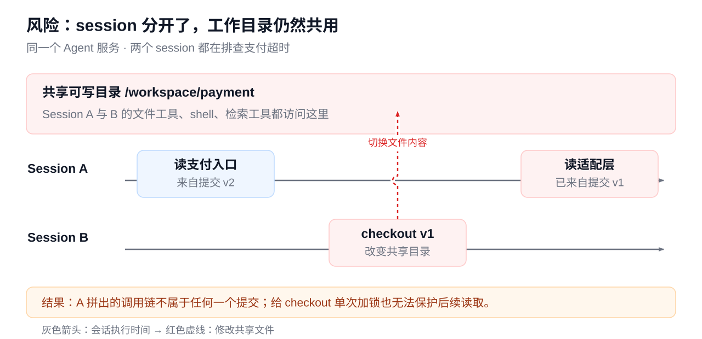
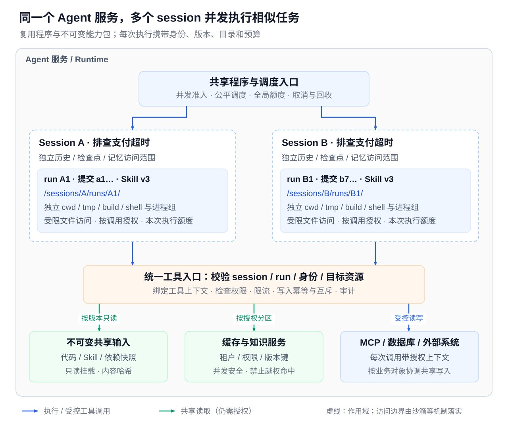
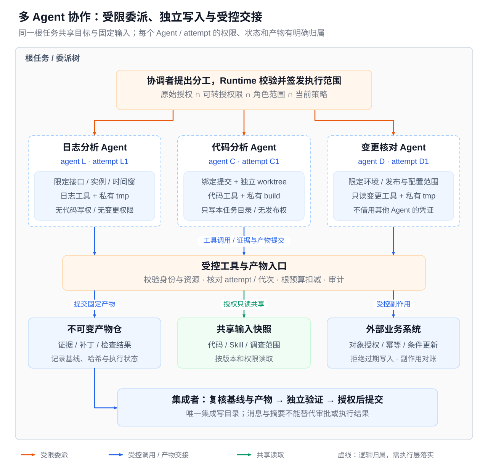

第15章 Agent Runtime：架构、执行编排与可靠性工程
模型可以提出下一步，但这一步能否执行、由谁执行、怎样验证、中断之后如何继续，都由 Runtime 决定。一个任务只有同时保留目标、证据、执行权和业务事实，才能从一次演示变成可交付的系统。
本章讨论一次 Agent 任务如何被可靠地执行。内容沿着任务从接入到交付的过程展开：先建立整体架构与执行循环，说明模型之外有哪些控制边界；再把执行事实落到持久对象、事务与协议上，回答“怎样不重复执行”和“中断后怎样继续”；最后把这些机制组合成工作流、任务图与多 Agent 协作，并给出落地验收方法。本章使用的核心对象是任务（Task）、运行（Run）、步骤（Step）、尝试（Attempt）和操作（Operation），它们的定义见 15.3 持久状态与对象模型。
本章与相邻章节的分工
| 章节 | 主讲内容 | 本章如何衔接 |
|---|---|---|
| 第11章 | 基础设施视角：队列、存储、集群调度与部署 | 本章讲 Agent 任务语义，持久执行、投递幂等与恢复在本章完整展开；两章的 Task、Run、Step、Operation 身份语义保持一致 |
| 第13章 | 模型接口与线协议 | 本章只把模型调用视为 Agent Loop 中的一次推理请求 |
| 第14章 | 上下文工程与 Memory | 本章只说明上下文包如何进入受控工作区、如何随 Checkpoint 保存 |
| 第16章 | 工具契约、Skill、MCP 协议与 Connector 开发、沙箱（Sandbox） | 本章只保留 Runtime 如何接入、准入、绑定身份和恢复这些能力 |
| 第17章 | Guardrails、Eval、Trace 与指标、失败复盘、灰度与发布门禁 | 本章只说明 Runtime 在哪里执行这些检查，以及运行账本与 Trace 的边界 |
阅读路线
- 15.1 定位与整体架构：建立选型判断、总体架构与 Harness 视图。已经熟悉 Agent 选型的读者可以跳过前两小节，直接从“运行时边界”读起。
- 15.2 执行循环与控制边界：一次请求从入口到最终响应的完整链路。
- 15.3–15.5：持久状态、调度与可靠投递、Checkpoint 与恢复，是本章主线，建议按顺序精读。
- 15.6 工作流与任务图、15.7 多 Session 与多 Agent 协作：在主线机制之上的组合方式。只做单 Agent、单进程系统的读者可以先略读 15.7。
- 15.8 落地验收与故障验证：把前面的机制整理成验收方法，可在实现阶段回查。
版本与范围
本章 MCP 相关内容统一以 2025-11-25 版规范为准，A2A 以 v0.3.0 为准，资料核验截至 2026-10-21。文中的对象字段、JSON、数值、阈值、图示和故障时序均为教学示例，不代表统一标准；文中描述的故障场景未经过真实系统的故障注入验证。正文中的数字首次出现时会标注“示例值”，不再逐处声明。
15.1 定位与整体架构
本节回答三个问题：什么样的任务值得引入 Agent Runtime；模型之外需要哪些确定性组件来承担责任；这些组件如何组成一张总体架构图。后续各节都在这张图上展开。
本节先从技术演化说明 Agent 为什么出现，再给出唯一一套选型判断，随后建立“模型提出、Runtime 裁决”的边界，最后用一张总图和一张 Harness 视图描述整体结构。全章以“企业工单与知识助手”为贯穿案例：员工在内部门户提出问题（例如“报销被驳回后应该怎么处理”），助手检索制度与 FAQ，给出带引用的答复；必要时创建或更新工单，并转交人工处理。
15.1.1 演化脉络：技术形态与工程能力
Agent 并不是从“更长的 Prompt”中突然出现的。它持续回应同一个问题：怎样让模型不只给出看似合理的回答，还能在明确边界内收集证据、采取行动、验证结果，并把过程交付给人和系统。观察这一演化需要两条线：一条是技术形态如何变化，另一条是每次升级必须补齐哪些确定性机制。
| 阶段 | 主要能力 | 新增风险 | 需要补齐的工程能力 | 在工单与知识助手中的表现 |
|---|---|---|---|---|
| Chatbot | 多轮对话与文本生成 | 回答流畅，但缺少任务边界和事实依据 | 基础 Prompt、模型选择、输入输出约束 | 解释制度术语 |
| Prompt Application | 把提示词封装为明确的单步任务 | 输出格式漂移、提示注入、难以复现 | 任务契约、结构化输出、样例与回归集 | 根据问题生成答复草稿 |
| Tool-using Agent | 选择并调用受限工具 | 误选工具、参数越权、外部副作用 | 工具 Schema、权限、参数校验、沙箱与超时 | 检索制度、流程和 FAQ，并给出引用 |
| Workflow Agent | 按状态和依赖执行多步任务 | 中断后丢失状态、重复执行、错误扩散 | 状态机、Checkpoint、幂等、重试与人工接管 | 按固定顺序检索、核对版本、生成答复并审查 |
| Runtime Agent | 根据观察在运行时调整计划 | 上下文膨胀、循环不可预测、难以审计 | Context、Harness、Policy、Verifier、Trace | 遇到异常路径时补充查询、请求澄清或转交人工 |
| Multi-Agent | 按角色或专长分工协作 | 错误被相互放大、责任不清、成本失控 | Handoff 契约、共享状态、角色权限与统一治理 | 调查、工单变更审查和面向业务方的交付由不同角色完成 |
| 受控持续改进系统 | 从评测与复盘中更新能力 | 未经验证的经验进入生产、能力退化 | Evals、审核、灰度发布、回滚与版本审计 | 复盘确认有效的证据规则、Skill 和评测样本，经审核与灰度后纳入系统 |
MRKL 用模块组合语言、知识与离散推理；Toolformer 研究模型如何学习调用 API。这些工作指出了能力组合的技术方向，但并没有给模型授予任何系统权限。[1][2]
工程能力需要随之逐层补齐：Prompt 将自然语言目标整理为可检查的任务契约；Context 决定模型在当前一步看到哪些证据、状态和约束（第14章）；Harness 用预算、循环、重试、验证和停止条件包裹模型调用；工具接口让行动受 Schema、权限和副作用控制（第16章）；Knowledge 与 Memory 分别提供可追溯的事实和跨任务沉淀的经验，二者不能互相替代；编排让多步骤、多角色任务具备持久状态、暂停、恢复、幂等与人工接管能力，这是本章 15.3–15.7 的主题；Evals、Guardrails 与 Observability 负责发现退化、限制风险和回放过程（第17章）。当系统开始影响外部世界时，缺失的那一层往往就是下一次事故的来源。
各阶段之间并非替代关系。大多数生产系统同时包含多个阶段：稳定的步骤仍由工作流或传统后端完成，只有需要动态判断的局部才交给 Agent。演化的方向应当是“在更复杂的任务上仍然可约束、可验证、可交接”，而不是单纯追求“更自主”。在工单与知识助手中，从第三个阶段起，系统已经开始触发或建议行动，因此权限、证据、验证、审批和审计必须一并设计。“自我演化”同样不意味着模型可以在无审核的情况下修改生产行为；它应当是“评测发现问题、复盘形成候选改进、人工审核、灰度发布、监控评估、必要时回滚”的受控闭环，详见第17章。
15.1.2 选型判断：何时引入 Agent Runtime
Anthropic 把按预定义代码路径运行的 Workflow 与由模型动态决定路径的 Agent 区分开，并指出复杂度会带来额外的成本和延迟。本书沿用这一选型维度，两者也可以组合使用。[3]
设计之前要问的问题，不是“能不能接一个大模型”，而是“传统后端、规则引擎、工作流或搜索系统为什么不够用”。下图是本章唯一的选型判断流程：
flowchart TD
Start["待解决的任务"]
Rule{"规则是否清晰稳定？"}
Deterministic["传统后端、规则引擎或工作流"]
Language{"是否需要理解自然语言、<br/>文档或半结构化输入？"}
MultiStep{"下一步是否取决于观察结果，<br/>需要多步推理和局部重规划？"}
Tools{"是否需要跨系统取证、<br/>写入、通知或执行动作？"}
Verify{"结果能否由证据、校验<br/>或人工审查判定？"}
Risk{"错误后果是否可控？"}
Agent["引入 Agent Runtime"]
Hybrid["混合架构：后端流程 + LLM 节点或 Agent 辅助"]
NotReady["暂不引入：先补齐验证、权限或人工流程"]
Start --> Rule
Rule -->|"是，且变化少"| Deterministic
Rule -->|"否，或变化快"| Language
Language -->|"否"| Hybrid
Language -->|"是"| MultiStep
MultiStep -->|"否"| Hybrid
MultiStep -->|"是"| Tools
Tools -->|"否"| Hybrid
Tools -->|"是"| Verify
Verify -->|"否"| NotReady
Verify -->|"是"| Risk
Risk -->|"不可控"| NotReady
Risk -->|"可隔离、可审批或可回滚"| Agent
使用这张图时需要注意三点：
- 它用于发现边界，不是打分表。 输入稳定、流程可以在设计时穷举、结果可由返回码或断言精确判定的任务，交给传统后端更简单。只有同时需要理解模糊意图、跨多个来源取证、根据观察决定下一步，并且结果仍可验证和治理的任务，才值得进入 Runtime 设计。
- 延迟与成本是附加约束。 要求毫秒级响应的高频低价值请求，通常不适合多轮推理；低频、高价值、可以接受秒级或分钟级延迟的任务，才值得为推理付费。如果业务价值不足以覆盖模型调用、治理与运营成本，也应停在更简单的形态。
- 可用性必须用任务级评测证明。 不应引用跨场景的“Agent 准确率通常是多少”，因为模型、任务、工具、评测集和上线时间都会改变结果。工单与知识助手可以看引用准确率、拒答率、权限违规率、工单字段正确率和人工采纳率；指标设计与回归集见第17章。
混合分工：后端管状态，Agent 管推理
生产系统最稳妥的形态通常是混合架构。Agent 不会替代后端的状态、事务和权限边界，而是在后端无法处理的模糊任务、跨系统任务和依赖专家经验的任务上补充推理能力。原有后端能力在 Agent 系统中对应如下责任：
| 传统后端能力 | Agent 系统中的对应责任 |
|---|---|
| API、Webhook、消息入口 | Intake Router 与 Intent Normalizer，将输入整理为任务契约 |
| 数据库、缓存、配置中心 | Context Builder、Evidence Store 和受控 Memory |
| 状态机、任务队列、重试 | 工作流引擎、Checkpoint 和恢复机制 |
| 权限、审计、风控 | Policy Engine、人工控制与 Audit |
| 规则引擎、确定性校验 | 执行前后的业务规则与 Verifier |
| 领域服务与外部 API | Tool Runtime、Connector、MCP 与执行器 |
| 监控、日志、链路追踪 | Trace、Eval Harness 与失败记录 |
由此得到一条简洁的分工原则：传统后端管理工单、审批、权限和任务生命周期等状态；Agent 负责理解意图、规划路径、整合证据和生成建议；Policy 判断动作是否允许、是否需要审批；Verifier 判断结果是否满足任务契约；人工审查对关键结论和风险动作承担责任。模型新增的价值集中在理解输入、生成候选假设、决定需要哪些证据、综合多源观察和解释不确定性上。模型可以提出意图和工具调用，但是否接受、是否执行，始终由系统决定。
15.1.3 运行时边界：模型提出，Runtime 裁决
一个最小的 LLM 应用只有“用户输入、Prompt、模型、回答”四步，适合一次性问答、生成、分类和摘要。一旦系统要代表用户行动，就需要一个位于模型和真实世界之间的运行时。
操作系统可以帮助建立这种直觉，但它只是类比：在 Linux 中，用户态程序不能直接读写磁盘或访问网卡，必须通过系统调用进入内核，由内核完成权限检查、资源调度、驱动调用和审计。Agent 也是如此。模型可以提出“查日志、读文件、调用 API、发通知、执行命令”，但这些请求必须先经过 Runtime 的裁决、调度、执行和记录，才能落到真实系统。
| Linux 操作系统 | Agent 系统 | 对应的责任 |
|---|---|---|
| 内核 | Agent Runtime | 管理任务生命周期、身份、权限、状态、资源、审计和恢复 |
| 用户态程序 | 模型与 Agent 应用 | 产生意图和动作请求，但不能直接触碰真实资源 |
| 进程调度与控制循环 | Agent Loop 与 Planner | 根据状态和观察决定继续、暂停或结束 |
| 系统调用及其校验 | 工具调用请求与 Policy Engine | 校验身份、权限、参数、风险、预算和审批要求 |
| 系统调用分发与调度 | Execution Engine | 调度执行，处理超时、取消、重试、降级和状态回写 |
| 驱动框架、VFS、网络栈 | Tool Runtime、Connector、MCP Client | 把统一的动作请求适配到具体工具和协议 |
| 硬件设备 | Execution Backend 与外部系统 | 真正产生副作用的地方，如 Shell、容器、浏览器、业务 API、远程 Runner |
| 进程状态 | 任务状态与 Checkpoint | 保存进度，支持暂停、恢复和幂等 |
| 系统日志与审计 | Trace 与 Audit | 记录执行过程，支持调试、复盘和追责 |
这张表的重点在于责任边界。生产级 Agent 至少要把五类责任分开：
- Agent Runtime 管生命周期：任务从哪里来、谁在执行、能看到什么、能做什么、状态如何保存、失败如何恢复、过程如何审计。
- Agent Loop 管下一步：结合任务状态、上下文、工具观察和模型推理，决定继续、澄清、调用工具、修复还是停止。
- Execution Engine 管动作调度：将动作请求转为可控执行，负责参数完整性、超时、取消、重试、降级和结果回写。
- Tool Runtime 管工具接入：负责可见工具集合、参数校验、协议适配、工具级错误码和结构化观察结果（Observation）。具体契约见第16章。
- Execution Backend 管真实副作用：在本地 Shell、容器、浏览器、远程 API、MCP Server 或远程 Runner 中真正执行动作。
因此，行动链路不应是“模型直接调用外部系统”，而应是：Agent Loop 提出动作请求，经 Policy 裁决后交给 Execution Engine，由 Tool Runtime 适配到 Execution Backend 执行，结构化的观察结果再回到 Agent Loop。Prompt 不是权限边界，Runtime 才是。 正如不能靠告诉程序“请不要访问这个文件”来保护操作系统，也不能只靠 Prompt 中的“不要执行危险命令”来保护业务系统；安全边界必须由 Runtime、Policy、沙箱、Execution Engine 和 Tool Runtime 强制执行。
这种分层是本书的教学抽象，不对应某个框架的模块划分。以 OpenAI Agents SDK 为例，它提供循环、工具、交接、审批与观测的入口，但部署、工具实现、状态存储和审批决策仍由应用负责；不能从“使用了某个 SDK”推断业务动作已被可靠完成。[4]
15.1.4 总体架构：四个面与一条执行回路
下图是本章的总体架构图。除入口与交付界面外，组件按职责分为四个面：控制面、执行面、集成面和治理面。
flowchart TB
Entry["入口<br/>Chat / API / Event / Ticket / Webhook"]
subgraph CP["控制面 Control Plane"]
Intent["Intent Normalizer<br/>任务契约"]
Registry["Capability Registry<br/>Skill / Tool / Connector 目录"]
Policy["Policy Engine<br/>allow / deny / ask / escalate"]
Human["人工控制<br/>审批 / 人工接管"]
Config["配置与版本清单"]
end
subgraph EP["执行面 Execution Plane"]
Planner["Task Planner<br/>分解 / 预算 / 停止条件"]
Context["Context Builder"]
Loop["Agent Loop<br/>模型推理：观察 / 决策 / 修复"]
Engine["Execution Engine"]
State["任务状态与 Checkpoint"]
Verifier["Verifier<br/>运行时验收"]
end
subgraph IP["集成面 Integration Plane"]
Sources["知识 / Memory / 业务数据"]
ToolRT["Tool Runtime<br/>Connector / MCP Client"]
Backend["Execution Backend<br/>沙箱 / 业务 API / Runner"]
end
subgraph GP["治理面 Governance Plane"]
Trace["Trace / Audit"]
Eval["Eval Harness"]
Cost["成本与监控"]
end
Review["交付界面<br/>答复 / 报告 / 工单 / 交接"]
Entry --> Intent --> Planner --> Context
Sources -.-> Context
Registry -.->|"按任务过滤可见能力"| Context
Config -.-> Planner
Context --> Loop
Loop -->|"每个动作请求"| Policy
Policy -->|"allow"| Engine
Policy -->|"ask / escalate"| Human
Human -->|"批准"| Engine
Policy -->|"deny：结构化拒绝"| Loop
Engine --> ToolRT --> Backend
Backend -->|"Observation"| Loop
Engine --> State
Loop -->|"声明完成"| Verifier
Verifier -->|"未通过"| Loop
Verifier -->|"通过"| Review
Policy -.-> Trace
Engine -.-> Trace
Verifier -.-> Trace
Trace -.-> Eval
图中最重要的是中间那条回路：Agent Loop 产生的每一个动作请求都要单独经过 Policy 裁决；仅在进入循环前统一检查一次是不够的。裁决结果为 allow 时交给 Execution Engine；为 ask 或 escalate 时进入审批或人工接管，批准后才执行；为 deny 时以结构化拒绝返回给循环，由模型改变计划。sandbox 与 audit 是附加在 allow 上的执行约束，本身不构成独立的裁决结果。执行结果作为观察回到循环，直到 Verifier 确认任务满足契约。
| 面 | 组件 | 回答的问题 | 缺失时的典型后果 |
|---|---|---|---|
| 控制面 | Intent Normalizer、Capability Registry、Policy Engine、人工控制、配置与版本清单 | 任务契约是什么，Agent 能请求哪些能力，哪些动作允许执行、哪些需要人介入 | 聊天、告警、工单混成一团，无法审计和幂等；能力暴露过宽；高风险动作只受 Prompt 软约束 |
| 执行面 | Task Planner、Context Builder、Agent Loop、Execution Engine、任务状态与 Checkpoint、Verifier | 模型看到什么，下一步做什么，进展到哪里，任务是否完成 | 回答缺少依据；长任务不可恢复、容易重复执行；模型自行宣布完成 |
| 集成面 | 知识与 Memory 数据源、Tool Runtime、Connector、MCP Client、Execution Backend | 证据从哪里来，动作在哪里真正发生 | 只能聊天而无法查证或行动；副作用不受隔离 |
| 治理面 | Trace、Audit、Eval Harness、成本与监控 | 过程能否回放和追责，版本是否退化，成本是否可控 | 结果无法追责，改动一次就可能退化，且无从察觉 |
几点补充说明：
- 面是职责划分，不是部署单元。 MVP 可以把四个面放在一个进程里，用几个模块、几张表和几份配置实现；但边界要从第一天起就清晰，否则系统会越来越像一个巨大的 Prompt，难以测试、调试和治理。
- 模型路由与交接属于执行面。 当任务需要切换模型、专家或子 Agent 时，由 Planner 和 Agent Loop 决定，详见 15.7 多 Session 与多 Agent 协作。
- Trace 不是权威事实。 任务状态与 Checkpoint 保存的运行账本才是恢复依据，Trace 用于观察与复盘，二者的边界见 15.3。
- 治理面只在本章出现接口。 Eval、指标、失败复盘、Learning Loop 与发布门禁由第17章展开。
用工单与知识助手走一遍：员工的问题从门户进入，Intent Normalizer 把它整理成“查询报销驳回原因并给出处理办法”的任务契约；Context Builder 从制度库和员工的历史工单中装配上下文；Agent Loop 先发起只读检索，Policy 直接放行；当模型提出“为员工创建一张复核工单”时，这个写操作同样要经过 Policy，并按风险等级进入 ask，由员工确认后才由 Execution Engine 调用工单系统；最终答复和工单号经 Verifier 检查引用与字段后交付。
15.1.5 Runtime、Harness 与编排：六层控制视图
总图描述执行组件和事实流向。要讨论“如何对模型行为施加控制”，还需要区分三个经常混用的概念：
- Runtime 是承担任务生命周期的运行系统，包括接入、状态、调度、模型与工具调用、暂停、恢复和交付。
- Harness 是围绕模型建立可控行动环境的工程方法与组件组合，强调上下文、工具、权限、验证、预算和反馈。
- 编排决定这些能力按什么顺序、依赖和分支条件发生。
三者描述的是同一个执行系统的不同责任，不能仅凭名字认定它们是三个独立服务。以工单案例为例：模型建议创建工单时，Harness 校验参数、权限和风险；编排检查前置证据与审批是否到位；持久 Runtime 记录操作意图、发放执行权、跟踪外部结果并推进后继步骤。这些工作可以由一个进程完成，但不能由一句 Prompt 代替。
下面的六层 Harness 模型是本书整理责任的教学视图，不是标准协议，也不意味着每层都有独立的数据库。
flowchart TB
Event["用户请求 / 外部事件"] --> Runtime["Agent Runtime"]
subgraph Harness["Agent Harness"]
C["1. Context Layer<br/>构建模型工作区"]
W["3. Workflow Layer<br/>控制任务生命周期"]
G["4. Guardrail Layer<br/>限制风险"]
T["2. Tool Layer<br/>封装外部能力"]
E["5. Eval Layer<br/>证明质量"]
O["6. Observability Layer<br/>定位失败"]
end
Runtime --> C
C --> LLM["LLM"]
LLM -->|"候选动作或结论"| W
W -->|"候选动作"| G
G -->|"放行"| T
G -->|"拒绝 / 需审批"| W
T -->|"Observation"| W
W -->|"下一轮上下文"| C
W -->|"输出 / 审批请求"| Result["输出 / 动作结果 / 审批"]
W -.-> O
T -.-> O
G -.-> O
Result --> E
E -.->|"改进候选"| C
六层之间互相反馈，构成一个控制回路。与总图一致，Guardrail Layer 位于每个候选动作和 Tool Layer 之间。
| 层 | 模型特性带来的问题 | Harness 的响应 | 在总图中的位置 |
|---|---|---|---|
| Context | 模型只知道提示词中的信息 | 构建可信、相关、最小化的上下文 | 执行面：Context Builder；集成面：数据源 |
| Tool | 模型可能选错工具或填错参数 | Schema、权限、风险等级、错误恢复 | 控制面：Capability Registry；集成面：Tool Runtime |
| Workflow | 模型自身没有可靠的状态机 | 外部状态、停止条件、人工确认 | 执行面：Planner、Agent Loop、Execution Engine、状态与 Checkpoint |
| Guardrail | 模型可能服从恶意输入或越权请求 | 多层拦截，其中工具层裁决由 Runtime 执行 | 控制面：Policy Engine、人工控制 |
| Eval | 模型的自我评价不可靠 | 运行时由 Verifier 验收；离线用外部指标、人工标注和回归集 | 执行面：Verifier；治理面：Eval Harness |
| Observability | 错误的表现不一定是异常 | Trace、失败分类、成本与质量指标 | 治理面：Trace、Audit、成本与监控 |
这六层同时是治理数据的采集点：Context Layer 记录模型看到了什么，Tool Layer 记录模型想做什么和工具实际做了什么，Guardrail Layer 记录哪些风险被拦截，Eval Layer 证明候选版本是否可靠，Observability Layer 将线上失败沉淀为可复盘的 Trace。Guardrails 的分层设计见第17章 Guardrails；这些记录如何进入发布门禁，也由第17章展开。
接下来的 15.2 执行循环与控制边界沿总图中的执行回路，逐段展开接入、上下文装配、决策、执行与验收；15.3 至 15.5 再把状态、投递与恢复落到持久对象上。
15.1.6 本节小结
- 只有同时需要理解模糊意图、跨系统取证、按观察决定下一步，且结果可验证、风险可控的任务，才值得引入 Agent Runtime；其余情况优先使用传统后端或混合架构。
- 混合架构的分工是：后端管状态，Agent 管推理，Policy 管风险，Verifier 管完成，人工审查承担责任。
- 模型只能提出动作，Runtime 负责裁决、执行和记录；Prompt 不是权限边界。
- 总图按控制面、执行面、集成面和治理面划分职责，Agent Loop 中的每个动作请求都要经过 Policy 裁决，裁决结果为
allow、deny、ask或escalate。 - Runtime、Harness 与编排是同一系统的三种责任视角；六层 Harness 视图与总图的各个面一一对应，并为第17章的治理提供事实来源。
15.2 执行循环与控制边界
上一节给出了 Runtime 的整体分层，本节从一次请求进入系统开始，沿接入、装配、决策、执行、验收五个环节展开控制链路。贯穿其中的原则是区分五类信息：意图由任务契约固定，证据由上下文包承载，候选动作由模型提出，策略决定由 Policy 作出，结果以 Runtime 记录的事实为准。
本节前半部分讲 Runtime 如何初始化、接入请求、建立任务契约、按风险选择执行策略并组装上下文；后半部分讲能力接入、Policy 裁决、Agent Loop、运行时验证与 Trace。持久提交与恢复的细节见随后的 15.3–15.5 节。
15.2.1 Runtime 初始化：模型、工具、技能、策略与数据源
Agent 的链路并非从用户请求开始。请求到达之前，Runtime 已经完成一次系统初始化：加载配置、注册模型、注册工具与技能、编译策略、连接数据源、初始化可观测性。没有这一步，模型不知道有哪些工具可用，Runtime 也不知道哪些动作允许执行。
初始化阶段产生以下几张注册表，分别覆盖模型、能力、治理、知识与质量五个方面：
| 注册对象 | 回答的问题 | 典型内容 |
|---|---|---|
| Model Registry | 可用哪些模型 | 名称、能力、上下文长度、成本预算、降级顺序 |
| Tool Registry | 有哪些可执行能力 | 工具名、描述、输入与输出 Schema、风险等级、责任人 |
| Skill Registry | 有哪些可复用方法 | 触发条件、步骤、约束、所需工具、验证要求 |
| Source Catalog | 从哪里获取上下文 | 文档库、业务数据库、日志、指标、工单、规则、Memory |
| Policy Store | 哪些动作允许执行 | RBAC、ABAC、环境限制、审批策略、沙箱规则 |
| Verifier Registry | 如何判断完成 | 引用、格式、状态与领域规则校验 |
| Observability Config | 如何记录过程 | Trace Schema、采样率、敏感字段脱敏、指标上报 |
下面是一份简化的 Runtime 配置，其中的步数、成本等数值均为示例值：
runtime:
environment: production
default_mode: read_only
max_steps: 12
max_cost_usd: 0.5
models:
primary: {name: general-reasoning-model, capabilities: [reasoning, tool_calling, structured_output]}
fallback: {name: fast-summary-model, capabilities: [summarization, classification]}
tools:
- {name: search_docs, risk_level: low, side_effect: false}
- {name: create_ticket, risk_level: medium, side_effect: true, requires_approval: true}
skills:
- {name: policy_question_answering, triggers: [policy, process, reimbursement]}
- {name: incident_initial_diagnosis, triggers: [alert, incident, degradation]}
policies:
default_write_action: ask
production_side_effect: ask
restricted_data_access: deny
初始化的目的是让 Runtime 掌握一张完整的能力地图，并不意味着把这些信息全部交给模型。模型真正看到的，是此后根据任务动态筛选出的本轮可见工具、相关技能和上下文包。
初始化还应包含健康检查，覆盖三类对象：
- 依赖：模型 Provider、MCP Server、插件和外部 API 是否可用，检索索引是否足够新鲜；
- 配置：工具 Schema 能否通过校验，Policy 规则能否编译，高风险工具是否默认关闭或处于审批模式；
- 记录通道：Trace、日志和指标能否正常写入。
完成这些检查后，Agent 在接收第一个请求之前，就已经明确了自己的能力边界和安全边界。
15.2.2 用户请求的完整链路：从入口到最终响应
初始化完成后，用户请求才真正进入 Runtime。一次请求的完整链路可以拆成 20 个阶段（S01–S20），其中 S10–S18 可能多次循环：
flowchart TD
Request["S01 User Request<br/>用户请求"]
Intake["S02 Request Intake<br/>会话 / 身份 / 环境"]
Intent["S03 Intent Parsing<br/>意图识别"]
Contract["S04 Task Contract<br/>任务契约"]
Mode["S05 Mode Selection<br/>只读、试运行、审批、执行"]
Plan["S06 Initial Plan<br/>初始计划"]
Expose["S07 Capability Exposure<br/>选择可见技能和工具"]
Discover["S08 Context Discovery<br/>检索和查询"]
Select["S09 Context Selection<br/>筛选 / 去重 / 压缩"]
Package["S10 Context Packaging<br/>上下文包"]
Prompt["S11 Model Request<br/>系统指令 / 任务 / 上下文 / 工具 Schema"]
Reason["S12 LLM Reasoning<br/>模型推理"]
Proposal["S13 Action Proposal<br/>回答或工具调用"]
Validate["S14 Runtime Validation<br/>Schema / 权限 / 风险"]
Execute["S15 Tool Execution<br/>工具执行"]
Observe["S16 Observation<br/>结构化观察"]
State["S17 State Update<br/>状态更新"]
Replan["S18 Re-plan / Continue<br/>重规划或继续"]
Verify["S19 Verify<br/>验证完成度"]
Final["S20 Final Response<br/>最终响应 / 交接"]
ActionType{"动作类型判断"}
ContinueDecision{"是否继续"}
VerifyResult{"验证结果"}
Request --> Intake --> Intent --> Contract --> Mode --> Plan --> Expose
Expose --> Discover --> Select --> Package --> Prompt --> Reason --> Proposal
Proposal --> Validate
Validate --> ActionType
ActionType --> Execute
ActionType --> Verify
Execute --> Observe --> State --> Replan
Replan --> ContinueDecision
ContinueDecision --> Package
ContinueDecision --> Verify
Verify --> VerifyResult
VerifyResult --> State
VerifyResult --> Final
20 个阶段可以归入五个环节，模型与 Runtime 在各环节中的职责不同：
| 环节 | 阶段 | 主要责任方 | 关键产出与要点 |
|---|---|---|---|
| 接入 | S01–S05 | Runtime 记录请求信封；模型识别意图并起草任务契约，Runtime 校验；Runtime 与 Policy 选择执行模式 | 请求信封（request envelope）、任务契约；执行模式分为只读、试运行（dry-run）、审批后执行和直接执行 |
| 装配 | S06–S10 | 模型拟定初始计划；Runtime 按任务、权限、风险筛选可见能力；工具检索原始证据；Runtime 与模型共同筛选 | 计划（含步骤、依赖、预算、停止条件）、可见技能与工具、带来源、时间、权限和证据 ID 的上下文包 |
| 决策 | S11–S14 | Runtime 发送请求；模型推理并提出回答或工具调用；Runtime 与 Policy 校验 | 结构化回答或工具调用参数；校验覆盖工具名、参数 Schema、权限、风险、预算 |
| 执行 | S15–S18 | Tool Runtime 执行确定性动作；Runtime 标准化观察、更新状态；模型决定继续、修复或停止 | 观察信封、任务状态（已完成步骤、失败原因、预算消耗）、修订后的计划 |
| 验收 | S19–S20 | Verifier 对照任务契约验证；模型与 Runtime 生成最终响应 | 验证报告；附证据、风险和 Trace 的回答、报告或交接 |
请求模型时（S11），Runtime 发送的不是用户原话，而是一个经过组织的请求包：
{
"system_instructions": [
"你是企业 Agent Runtime 中的推理模块。",
"只能使用本轮暴露的工具。",
"所有关键结论必须引用证据。"
],
"task_contract": {
"intent": "answer_policy_question",
"goal": "回答员工关于费用报销时限的问题",
"success_criteria": ["给出直接回答", "引用制度来源", "说明不确定性"]
},
"selected_skills": [
{
"name": "policy_question_answering",
"steps": ["识别制度主题", "检索权威文档", "比较冲突条款", "带引用回答"]
}
],
"context_package": "（结构见下文“上下文构建”中的上下文包示例）",
"available_tools": [
{
"name": "search_docs",
"description": "按关键词搜索用户有权限访问的内部文档。",
"input_schema": {"type": "object", "required": ["query"],
"properties": {"query": {"type": "string"}, "limit": {"type": "integer"}}}
}
],
"task_state": {
"step": 2,
"remaining_budget": {"tool_calls": 5, "seconds": 30},
"observations": []
}
}
这里的关键在于：模型看到的是本轮允许使用的工具 Schema，而非完整的工具注册表。完整注册表归 Runtime 所有，模型只能在可见能力范围内作选择，无法越过 Runtime 调用隐藏工具。
完整链路还应记录为 Trace。Trace 事件并不与 20 个阶段一一对应，而是在关键阶段的边界上产生。下面按五个环节列出本章统一使用的事件名，括号中为对应阶段；15.2 后半的 Policy、验证与 Trace 部分沿用同一组事件名和字段，不再另列清单：
接入 request.received(S01–S02) → intent.normalized(S03) → task_contract.created(S04) → mode.selected(S05)
装配 plan.created(S06) → capability.exposed(S07) → context.retrieved(S08) → memory.recalled(S08)
→ context.packaged(S09–S10)
决策 model.selected(S11) → model.called(S11–S12) → action.proposed(S13) → policy.checked(S14)
→ human.approval.requested(S14，仅在裁决为 ask 时)
执行 tool.executed(S15) → observation.recorded(S16) → state.updated(S17) → checkpoint.created(S17)
验收 verification.completed(S19) → response.sent(S20) → feedback.received(交付后)
每个事件都应携带请求信封中的 request_id、correlation_id，以及任务契约中的 task_id 和时间戳，以便把同一次任务的全部事件串起来。交付之后的反馈如何进入评估与改进，见第17章。
有了这组事件，Agent 任务才能被回放、调试、评估和审计；否则，当用户追问“为什么得出这个结论”时，系统只能回答“模型是这么说的”。
15.2.3 入口路由（Event & Intake Router）：统一各类入口事件
许多 Agent 原型从聊天框起步，因而把用户消息当作唯一入口。生产级 Agent 除了自然语言对话，还要处理各种系统事件：
- 告警系统推送的事件（incident）；
- 工单系统中的升级请求；
- Webhook 触发的业务事件；
- 定时任务产生的巡检结果；
- IDE、CLI 或浏览器插件中的上下文事件；
- 企业 IM、邮件、客服会话中的多轮对话；
- 其他 Agent 或工作流委派的子任务。
入口路由负责把这些入口统一为请求信封，而不是让模型直接读取原始事件：
{
"request_id": "req_20260512_001",
"channel": "alert_webhook",
"tenant": "wxquare",
"actor": {"type": "system", "id": "prometheus"},
"user_context": {"viewer": "u_123", "roles": ["sre_oncall"]},
"payload_type": "incident_alert",
"payload": {
"service": "payment",
"severity": "critical",
"time_window": "2026-05-12T10:00:00+08:00/2026-05-12T10:15:00+08:00"
},
"correlation_id": "trace_or_incident_id",
"idempotency_key": "alert-payment-20260512-1000",
"environment": "production"
}
这一层主要承担四项职责：
| 职责 | 说明 |
|---|---|
| 入口归一 | 把聊天、API、Webhook、工单、告警、定时任务归一为请求信封 |
| 身份绑定 | 绑定用户或系统、租户、角色、环境和权限上下文 |
| 幂等与关联 | 生成 request_id、correlation_id 和幂等键（idempotency key，字段 idempotency_key），避免同一事件被重复处置 |
| 初步分流 | 判断请求进入问答、诊断、审批、执行、人工转接还是直接拒绝 |
入口路由不承担复杂推理，只负责说清“事件从哪里来、由谁触发、影响什么、属于哪个环境”；任务理解交给意图归一，执行路径交给 Planner 和工作流。知识助手、客服 Agent、运营 Agent 与 Coding Agent 的差异，往往首先体现在入口事件上。
15.2.4 意图归一（Intent Normalizer）：从用户输入到任务契约
Agent 的输入不应直接等同于用户原话。例如用户说：
这个客户投诉为什么这么久还没解决？
这句话隐含了多个待确认的问题：用户要的是查询、诊断、催办还是升级？“这个客户”对应哪个客户、工单或订单？“这么久”指超过 SLA，还是超过用户的心理预期？系统是否有权读取客户信息？如果需要催办，是否要经过审批？
因此，意图归一既不是一个简单的分类器，也不能完全交给模型。更准确地说，它是一条由 Runtime 编排的归一化流水线，模型、工具和 Policy 各司其职：
Runtime 收集入口元数据
-> 模型做语义解析
-> 工具补齐实体和确定性事实
-> Policy 裁决权限和风险
-> Runtime 校验并生成任务契约
第一步，Runtime 接收请求信封。本例中，信封记录了用户 u_123、渠道 slack、工作区 customer_support、时间 2026-05-12T10:00:00+08:00 和用户原文。这些信息是入口系统自带的事实，而非模型推理的结果。
第二步，模型做语义解析。这一步主要依赖模型，因为同一句“帮我看看”可能是问答、诊断、催办、审批前检查，也可能是要求生成处理建议：
{
"intent": "diagnose_ticket_delay",
"task_type": "diagnosis",
"entities": {"customer": "unknown", "ticket": "unknown"},
"needs_clarification": true
}
第三步，如果消息中带有链接、工单号、客户名或上下文事件，Runtime 调用工具补齐确定性事实：
extract_ticket_id(raw_text)
search_customer(candidate_name)
get_ticket_status(ticket_id)
工具返回的是带有来源、时间和版本的观察（本例查得 ticket_id 为 TCK-1024、customer_id 为 C-8801、工单状态为 pending_engineering）。Runtime 仍需判断这些观察是否过期、是否完整、是否与目标实体一致。
第四步，Policy 对权限和风险作出裁决：
{"read_ticket": "allow", "read_customer_private_note": "deny",
"notify_customer": "ask", "close_ticket": "ask"}
最后，Runtime 把入口元数据、模型解析结果、工具事实和 Policy 裁决合并为任务契约：
{
"task_id": "task_20260512_001",
"intent": "diagnose_ticket_delay",
"task_type": "diagnosis",
"user_goal": "解释客户投诉工单长时间未解决的原因，并给出下一步建议",
"domain": "customer_support",
"actor": {"user_id": "u_123", "role": "support_lead"},
"entities": {"ticket_id": "TCK-1024", "customer_id": "C-8801", "ticket_status": "pending_engineering"},
"risk_level": "medium",
"allowed_actions": ["read_ticket", "summarize", "recommend"],
"blocked_actions": ["read_customer_private_note"],
"requires_approval": ["notify_customer", "close_ticket"],
"success_criteria": ["解释工单当前状态", "找出延迟原因", "列出证据来源",
"给出下一步建议", "标注需要人工确认的动作"]
}
如果关键实体缺失，意图归一不应让 Agent 猜测，而应生成澄清决策：
{
"decision": "ask_clarification",
"question": "请提供客户 ID、工单号，或相关投诉链接。",
"missing_fields": ["ticket_id", "customer_id"]
}
最终的任务契约由 Runtime 生成和校验，不能完全采信模型输出：模型负责理解，工具负责查证，Policy 负责裁决，Runtime 负责把三者合并为后续组件都能消费的结构化契约。任务契约为模糊的请求划定了可执行的边界：
- Planner 据此知道要规划什么；
- Context Builder 据此知道要找什么证据；
- Tool Registry 据此知道暴露哪些工具；
- Policy Engine 据此知道哪些动作有风险；
- Verifier 据此知道如何判断完成；
- Review Surface 据此知道如何向用户交付。
缺少任务契约，Agent Loop 很容易演变成“模型想做什么就做什么”。
15.2.5 LLM 的工程特性与控制边界
控制边界画在哪里，取决于 LLM 在工程系统中的几项基本特性。下表概括了这些特性带来的后果，以及 Runtime 相应的控制手段：
| 特性 | 工程后果 | Runtime 的应对 |
|---|---|---|
| 概率生成，而非规则执行 | 同一输入可能产生不同表达；输出看似合理却违反系统约束；倾向于补全缺失信息而不主动停下 | 输出 Schema、确定性校验、重试与降级策略、不确定时的停止条件 |
| 没有内在的系统状态 | 只看到当前提示词中的内容，可能重复执行已完成的步骤、再次尝试已失败的方案、稀释早期约束、把临时假设当作事实 | 状态保存在系统中，而非依赖对话历史 |
| 对上下文高度敏感 | 错误文档、过期记忆、恶意指令、工具失败消息都可能改变模型行为 | 上下文过滤、来源标注、权限检查、过期降权、提示词注入（prompt injection）检测、上下文防火墙 |
| 擅长判断，但无法承担责任 | 适合意图识别、摘要、候选方案生成、风险解释、证据归纳、模糊信息整合 | 权限判断、生产变更、金额计算、最终审计、高风险审批和事实真实性保证不交给模型单独负责 |
关于状态，三类来源的可信顺序应当明确：
Task Store / 工作流状态 > 对话历史 > 模型推测
由此得到 Harness 的设计原则：让模型参与判断，由系统承担责任。
同样，Agent 出错时不能笼统归因于“模型幻觉”或“模型不稳定”，而应定位到具体的系统层：提示词边界不清、上下文缺失、检索命中错误、工具 Schema 含糊、工作流缺少停止条件、Guardrail 未能拦截，还是评估用例未覆盖。只有归因到系统层，失败才能转化为下一轮改进。失败分类与复盘流程见第17章。
15.2.6 基于任务风险的执行策略
设计 Harness 不应从选框架开始，而应从任务的风险和不确定性入手。下面以生产告警诊断 Agent 为例，分四步说明。
拆分确定性与不确定性
| 环节 | 是否适合 LLM | 原因 |
|---|---|---|
| 解析用户自然语言 | 适合 | 意图可能模糊 |
| 查询指标 | 不适合由 LLM 执行细节 | 应由工具按 Schema 执行 |
| 总结日志现象 | 适合 | 需要信息压缩 |
| 判断可能原因 | 适合，但要受证据约束 | 需要综合多源信息 |
| 风险分级 | 适合辅助判断 | 分级规则应由系统定义 |
| 重启生产服务 | 不适合自动执行 | 风险高，需要人工确认 |
| 记录审计日志 | 不适合交给 LLM | 必须确定性执行 |
这张表直接决定了 Harness 的边界。
风险等级与执行策略
不同风险的动作需要不同的执行策略：
| 风险等级 | 示例 | 执行策略 |
|---|---|---|
| 只读 | 查指标、查日志、查文档 | 在已有授权与数据范围内执行，记录脱敏后的关联信息 |
| 写入或外发 | 创建工单、发送通知 | 按授权和风险审批，记录审计并保证幂等；外发的消息不保证可撤回 |
| 高风险变更 | 重启服务、回滚发布 | 先生成计划，经人工确认后执行 |
| 禁止动作 | 删除生产数据、绕过权限 | 不暴露相应工具，直接拒绝 |
动作能否执行不应由模型临时判断。风险等级应当是工具和工作流的属性，由 Policy 在运行时裁决。
控制模式与编排模式
上表按风险把动作分成四种控制模式：自动执行（只读）、按策略审批后执行（写入或外发）、人工确认后执行（高风险变更）和禁止执行。控制模式回答“这一步能否执行、由谁批准”；编排模式回答“步骤之间如何组织”，例如告警诊断通常组合为：
Router → State Machine → DAG（并行收集证据）→ LLM 诊断步骤 → 风险门禁 → 必要时人工审批
Router、Chain、State Machine、DAG、Plan-and-Execute 等编排模式的适用条件见 15.6 模式选择。
先定义失败，再定义成功
设计 Harness 时，除了成功路径，还要事先回答以下几类问题：
- 外部失败：工具超时、检索不到文档、文档相互冲突时怎么办？
- 模型失败：输出不合法或置信度低时怎么办？
- 权限失败：用户要求越权、高风险动作被拒绝后怎么办？
- 停止条件：连续失败几次后停止？
这些问题的答案，决定了系统能否从演示原型进入生产。
15.2.7 上下文构建（Context Builder）：受控工作区
Context Builder 决定模型能看到什么，也决定模型看不到什么。它是第14章上下文工程在 Runtime 中的落点，每次组装上下文时都要回答四个问题：
- 模型这一步应该看到什么？
- 哪些内容不应该看到？
- 看到的信息可信度如何？
- 上下文相互冲突时，以谁为准？
上下文属于运行时决策
上下文由 Runtime 在运行时根据工作流状态动态组装，而非一段静态文本，因此属于 Harness 的职责。以告警诊断任务为例，不同阶段需要的上下文各不相同：
首次模型调用： alert summary + user role + task contract
证据收集阶段： metrics result + logs summary + runbook chunks + deployment record
风险决策阶段： diagnosis candidates + evidence list + tool risk policy + approval rule
组装流程如下：
flowchart TD
Task["Task Contract"]
Sources["Source Catalog<br/>知识库 / 数据库 / 日志 / 工单 / 规则 / 历史案例"]
Route["Source Router<br/>选择来源"]
Retrieve["Retrieve<br/>检索与查询"]
Filter["Permission Filter<br/>权限过滤"]
Rank["Rank / Deduplicate<br/>排序与去重"]
Compress["Compress<br/>摘要与压缩"]
Cite["Citation Builder<br/>引用与证据编号"]
Package["Context Package<br/>上下文包"]
Task --> Route
Sources --> Route
Route --> Retrieve --> Filter --> Rank --> Compress --> Cite --> Package
Context Builder 至少要处理六类信息。它们进入上下文的方式不同，控制点和风险也不同：
| 信息类型 | 典型内容 | 进入方式 | 关键控制点 | 主要风险 |
|---|---|---|---|---|
| 任务上下文 | 目标、实体、约束、成功标准 | 来自任务契约 | Runtime 校验后的字段 | 意图识别出错，整条链路偏航 |
| 领域知识 | 文档、FAQ、Runbook、制度 | 作为外部知识证据（RAG） | 权限、时效、引用、冲突处理 | 文档过期、缺少引用 |
| 业务数据 | 订单、工单、客户、配置 | 作为工具结果，即当前事实 | Schema、时间窗口、错误类型、证据 ID | 隐私泄露、越权访问 |
| 运行状态 | 当前步骤、已调用工具、审批状态 | 来自工作流状态 | 已执行动作、幂等键、失败原因 | 状态丢失导致重复执行或误判 |
| 历史经验 | 过往案例、用户偏好、团队规则 | 作为 Memory 中的偏好、经验或摘要 | 作用域、可信度、过期时间、写入来源 | 错误经验污染新任务 |
| 安全规则 | 可见范围、动作限制、审批要求 | 作为约束字段，并由 Policy 在运行时执行 | 与 Policy 裁决保持一致 | 只靠提示词提醒容易被绕过 |
上下文包
上下文不宜拼成一大段自然语言，而应组织为结构化的上下文包（Context Package）。下面是与前文请求包配套的示例：
{
"task": {
"intent": "answer_policy_question",
"success_criteria": ["回答问题", "引用来源", "标注不确定性"]
},
"sources": [
{
"id": "doc_001",
"type": "policy_doc",
"title": "费用报销制度",
"updated_at": "2026-04-18",
"permission": "allowed",
"excerpt": "差旅住宿费用需要在行程结束后 30 天内提交。",
"citation": "DOC-001#p3"
}
],
"constraints": {
"answer_must_cite_sources": true,
"cannot_reveal_restricted_content": true,
"ask_when_evidence_conflicts": true
},
"state": {
"previous_tool_calls": [],
"open_questions": ["用户所在地区是否有特殊报销标准"]
}
}
结构化上下文有三个好处：模型更容易区分事实、约束和证据；Trace 更容易记录；评估更容易复现。
组装上下文包时应遵循以下原则：
- 先过滤权限，再注入检索结果：用户无权访问的内容不得进入模型上下文。
- 先有证据，后有结论：让模型围绕证据推理，而不是凭参数记忆作答。
- 保留来源和时间：引用、更新时间、责任人、可信等级（如
trust_level）和置信度都应进入上下文。 - 区分观察、事实和推断：工具结果须经过身份、版本与完整性校验才成为可用事实；模型的总结仍需证据支持；历史案例只能作参考。
- 控制预算：上下文并非越多越好，噪声会让模型更难判断。
上下文与 Memory 的边界
Context Builder 并不是 Memory 系统本身。Context 是本轮模型调用的工作区；Memory 是跨轮次、跨会话、跨任务保存的外部状态。Context Builder 可以读取 Memory，把经过筛选、授权和压缩的记忆放入本轮上下文，但不能把全部历史对话原样塞给模型。Runtime 侧的记忆接口见下文；RAG、Agentic RAG、MCP Resource 和 Web Search 如何构成证据供给链，见第14章。
设计检查顺序
设计 Context Builder 时，可以依次检查：
- 当前工作流状态是什么？
- 这一阶段模型要做判断，还是生成文本？
- 判断所需的事实来自哪里？
- 哪些上下文必须经过权限过滤？
- 哪些信息有时效性？
- 哪些信息只能辅助，不能作为最终证据？
- Token 不够时，先丢弃什么？
按这个顺序组装，比“把相关资料都塞进去”可靠得多。
15.2.8 记忆接口（Memory Layer）：读取路径与受控写入
Memory 的分类、读写、遗忘、污染防控与评估由第14章主讲。本节只回答 Runtime 需要什么样的记忆接口，以及哪些写入必须受控。
首先，Runtime 要分清 Memory 与另外三类状态，它们的生命周期和治理方不同：
| 概念 | 生命周期 | 典型内容 | 治理方 |
|---|---|---|---|
| Context | 单次模型调用 | 当前问题、证据、工具结果、约束 | Context Builder |
| 执行状态（Execution State） | 一次任务的生命周期 | 当前步骤、已调用工具、审批状态、失败原因 | 工作流与 State Store |
| RAG 知识 | 长期知识库 | 文档、Runbook、制度、FAQ、代码索引 | 知识平台 |
| Memory | 跨会话或跨任务 | 用户偏好、历史摘要、成功经验、失败教训 | Memory Layer + Policy |
执行状态由15.3 持久状态与对象模型负责，不能借道 Memory 保存；否则旧状态容易被误当作当前事实。
读取接口：Runtime 以任务契约为输入，经路由、过滤和排序后，把记忆作为上下文包的一部分交给模型，并产生 memory.recalled 事件：
flowchart LR
Task["Task Contract"]
Router["Memory Router"]
Store["Memory Store"]
Filter["Scope / Permission / Freshness Filter"]
Rank["Rank<br/>相关性 / 新鲜度 / 重要性"]
Pack["Context Package"]
Task --> Router --> Store --> Filter --> Rank --> Pack
写入接口：生产 Agent 不应默认把所有对话、模型推测和工具结果写入长期记忆。每条候选记忆都要经过写入门控（Memory Write Gate）：
候选记忆 → 证据检查 → 敏感性检查 → 作用域判定 → 必要时责任人审核 → 设置 TTL 或过期时间 → 写入或拒绝
门控的判断依据如下：
| 可以写入 | 不应直接写入 |
|---|---|
| 用户的稳定偏好 | 未经验证的模型推断 |
| 已验证的任务摘要 | 本轮的临时指令 |
| 人工确认过的复盘结论 | 已过期的业务状态 |
| 可复用的失败案例 | 敏感数据原文 |
| 服务或团队级注意事项 | 用户无权长期保存的数据 |
| 待审核后进入 Skill、Policy、Eval 的候选经验 | 高风险处置建议的草稿 |
概括起来，Runtime 对 Memory 的要求是：读取受作用域和权限约束，写入经过门控，内容可以过期和删除，读写均可审计、可评估。缺少这些机制，Memory 会让错误长期污染后续任务。
15.2.9 能力注册、发现与加载：Runtime 先建目录，模型再做选择
上下文决定模型“知道什么”，能力目录决定模型“能请求做什么”。Skill、Tool、Connector、MCP Server 和 Workflow 常被混为一谈，结果是权限边界随之混乱。Runtime 适合用一个能力注册表（Capability Registry）统一登记系统能提供的能力，再按任务、身份、环境和风险筛选出本轮可见的子集。MCP 2025-11-25 规范定义了 host、client、server 三种角色，以及 tools、resources、prompts 和能力协商，同时说明协议本身无法强制落实全部安全原则。[5]因此，接入 MCP 只解决了“怎样连接”，并没有解决“是否允许”。
“Agent 支持 Skill、Tool 和 MCP”只说明接入了若干机制，并没有说明模型怎样知道它们存在。本书把这条链路拆成五个不同的事实，前一项成立并不能推出后一项成立：
| 事实 | 含义 | 由谁确立 |
|---|---|---|
| 已安装 | 能力包、适配器或 Server 配置已进入系统 | 管理员或发布流程 |
| 已发现 | Runtime 扫描或连接后，生成了带来源的候选记录 | Runtime 的目录构建 |
| 已可见 | 本轮请求中，模型能看到它的摘要、Schema 或发现入口 | Runtime 按任务与权限过滤 |
| 已加载 | 选中 Skill 的正文、所需工具的 Schema 或资料已送入上下文 | Runtime 的加载器 |
| 已获准执行 | 某次具体调用通过了策略裁决和身份绑定 | Policy Engine 与派发前检查 |
磁盘上存在 SKILL.md、配置里有一个 MCP Server，都不会让模型自行知道它们的存在。Anthropic 的 Agent Skills 把指令、脚本与资源组织成可按需加载的文件夹[6]，Agent Skills 格式规范定义了 SKILL.md 与可选资源目录，但索引、触发、缓存和会话保留由客户端自行实现。[45]读取 Skill 正文不等于执行其中的脚本；加载一段指令，也不意味着指令里要求的网络、文件和写入权限自动获准。Skill 本身不持有权限，真正的调用仍要经过工具注册与 Policy Engine。
目录构建。 能力从三类来源进入注册表：受信代码或已批准插件注册的 Tool、批准目录中的 Skill 元数据、已获准 MCP Server 返回的能力目录。MCP 要求先完成初始化和版本协商，再进入正常操作[41]；初始化只声明“支持哪类能力”，具体工具、资源和模板目录还要通过各自的列表请求取得。[42][43][44]同名能力应使用稳定的来源标识和命名空间，例如 support/tickets.search 与 engineering/tickets.search。派发器（Dispatcher）必须保存短名称到来源、版本和处理器的精确映射，不能仅凭工具名在多个 Server 中任选一个可用的。目录扫描本身也有信任边界：发现一个新文件，不等于执行它的脚本；只有通过准入规则的候选能力，才能进入活动注册表。
按任务与权限过滤。 启动时得到的是候选目录，而不是永远有效的工具列表。每次构建模型请求时，Runtime 都要结合当前身份、任务阶段、依赖可用性、授权状态和上下文预算重新筛选：
all capabilities
-> task filter
-> permission filter
-> risk filter
-> environment filter
-> budget filter
-> visible skills / tools / connectors
建议为每次模型请求记录一代“可见能力映射”。模型返回调用时，Dispatcher 对照这一代映射和当前策略进行检查；若工具已被移除、Schema 已改变、连接已失效或能力已停用，就明确拒绝或要求重新发现，而不是把旧参数套进新 Schema，或者放宽校验让任务继续运行。缓存的目录和 Schema 也要绑定来源、授权边界和版本，为 A 用户取得的目录不能直接作为 B 用户的可见目录。
版本变化对在途任务的影响。 收到 MCP 的 notifications/tools/list_changed 等变更通知后，Runtime 应刷新对应目录，重新执行准入与差异检查，不能把新出现的高风险工具自动开放给正在运行的任务；未声明通知能力的 Server，则需要明确的刷新或重连策略。Skill 包可以通过不可变制品和内容摘要固定版本，远程 MCP Server 却不一定支持按客户端要求固定实现版本，Runtime 只能保存观测到的契约快照；服务端发生不兼容变更时，应暂停受影响的动作，而不是宣称任务可完全复现。停用能力时，先阻止新任务选择和新调用，再处理在途请求、订阅和子进程。安全封禁可以覆盖任务固定的旧版本：版本固定从不意味着已撤销的权限继续有效。
MCP 启动流程、目录分页、渐进式加载和一条消息内多次请求加载 Skill 的完整过程，见第16章的 16.4 与 16.5；能力选型与版本治理见第16章能力使用与治理实践。
15.2.10 Connector 运行时：外部系统如何接入任务执行
用户说“查一下相关工单，必要时补一条处理记录”时，模型需要知道有哪些查询和写入能力；系统还必须确定使用谁的账号、连接哪个租户、允许操作哪些项目，以及连接失效后任务如何继续。Connector 封装某个外部系统的认证接入、请求适配和结果转换，Tool 则是向 Agent 暴露的一项具体动作。下文以一个企业工单 Connector（提供 tickets.search、tickets.get、tickets.create）为例，名称与字段均为示例设计。
“已经安装工单 Connector”不能推出“当前 Agent 可以访问工单”。Runtime 至少要区分三个对象：
| 对象 | 管理什么 | 谁能改变 |
|---|---|---|
| Connector 定义（Definition） | 实现版本、能力目录、认证方式、允许的服务端点 | 集成维护者，经发布流程变更 |
| 连接（Connection） | 某个用户或组织与外部账号的授权关系，含租户、责任人、已授予范围和凭据引用 | 连接服务，受用户授权和管理员策略约束 |
| 任务绑定（Run Binding） | 本次 Run 使用哪条连接、允许哪些动作和资源、依据哪一版策略 | Runtime，根据可信身份与任务范围生成 |
定义可以跨租户复用；连接必须有清楚的责任人和共享规则；任务绑定再把通用能力收窄到本次任务。多 Agent 可以复用同一个 Connector 定义，但子 Agent 得到的是收窄后的委托绑定，而不是父 Agent 的 Token。
模型提出动作，Runtime 绑定身份。 一次调用的链路如下：
Runtime 根据可信身份生成任务绑定（tenant / user / connection）
→ 注册表只暴露 tickets.search、tickets.get 的受限 Schema
→ 模型提出 tickets.search(query="导出失败")
→ Tool Runtime 校验参数与当前策略
→ 连接服务校验连接状态、所有权和授权版本
→ Connector 使用服务端凭据访问工单 API，外部系统再做对象权限检查
→ Runtime 检查可见性并回填 Observation
tenant_id、user_id、connection_id、服务端点和凭据都来自可信执行上下文。即使工具参数里含有 project_id，也要与任务绑定的资源约束求交集；模型不能通过改写参数或构造 URL 切换租户、借用其他连接。凭据引用只存在于服务端，模型既看不到它，也看不到 Access Token。HTTP MCP 的授权只覆盖 Client 到 MCP Server 这一段，Connector 访问下游 API 需要该系统认可的凭据；MCP 2025-11-25 要求校验 Token 的目标受众，禁止接受或转发不属于本服务的 Token。[40]账号授权允许访问某类能力，动作审批批准一次具体变更，二者不能互相替代。
授权变化对在途任务的影响。 连接生命周期独立于 Run 生命周期。凭据刷新应放在连接服务中串行完成，避免并发 Worker 在凭据轮换时互相覆盖[38]；刷新失败或需要重新授权时，停止借该连接发起新调用，保留已验证结果，任务进入持久等待。管理员停用或用户撤销连接后，Runtime 应立即在本地阻止新的派发，并阻止子任务继续调用，但不能自动改用权限更大的连接。本地断开、远端 Token 撤销、停止同步和清理缓存是不同动作，需要分别追踪[39]；撤销本地连接也不能证明已发出的写请求在远端被取消。
结果未知时的恢复接口。 假设工单已在远端创建，但响应在网络中丢失，Run 应记录 outcome_unknown，而不是标记失败后立即重建。恢复 Worker 先验证当前连接和权限，再用同一 Operation 的业务关联键查证；提供方无法可靠定位时，转人工核对，并告知用户“创建结果待确认”。确认只有一条匹配工单后，才保存远端对象 ID 并交付。Operation 的完整语义见 15.4 调度、可靠投递与幂等；OAuth 细节、连接状态设计和错误分类表见第16章 Connector 开发。
15.2.11 工具错误与 Runtime 的下一步
工具的定义、粒度和返回格式由第16章的 16.2 主讲。对 Runtime 而言，关键在于工具返回的错误必须带有可机读的分类，因为分类直接决定执行层的下一步：暂时性故障（超时、限流）在预算内重试；参数错误或证据不足交回模型重规划；权限不足或缺少连接需要求助用户或进入审批；业务拒绝、风险越界或结果未知则停止自动推进，分别进入阻塞、等待或核对状态。只返回 {"status": "failed"} 的工具，会迫使模型猜测结果。哪些错误可以重试、由谁准入重试，见本章重试分类。MCP 接入同样不能替代这些服务端控制：外部文档可能携带注入，高风险动作需要最小权限和独立控制。[7]
15.2.12 Policy Engine：独立于模型的执行裁决
在提示词中写“请不要执行危险操作”，只是一种期望，无法强制执行。生产 Agent 需要独立于模型的 Policy Engine，在每次派发前对结构化对象做出裁决。它的输入不是一句自然语言，而是用户与角色、任务契约、工具调用及其参数、副作用标记、环境和任务状态：
{
"user": {"id": "u_123", "role": "support_lead"},
"task": {"intent": "notify_customer", "risk_level": "medium"},
"tool_call": {
"name": "send_customer_email",
"args": {"customer_id": "C-8801", "template": "delay_explanation"},
"side_effect": true
},
"context": {"environment": "production", "evidence_count": 2}
}
输出同样是结构化决策：
{
"decision": "ask",
"reason": "向客户发送通知属于有副作用动作，需要人工确认",
"required_approver_role": "support_lead",
"constraints": ["audit"],
"audit_tags": ["customer_communication", "side_effect"]
}
本章统一使用四种决策，另有两种执行方式作为 allow 的附加约束：
| 决策 | 含义 | 示例 |
|---|---|---|
allow | 允许执行 | 读取公开文档、查询自己有权限的工单 |
deny | 直接拒绝 | 读取无权限的客户数据、绕过审批关闭工单 |
ask | 由当前用户或指定审批人确认这一具体动作后执行 | 发送外部通知、变更责任人、执行恢复动作 |
escalate | 当前主体无权判断，或风险、证据、预算超出自动处理范围，转交更高权限角色或人工接管 | 生产环境的高风险变更、证据不足却需要对外答复 |
附加约束 sandbox | 只允许在沙箱（Sandbox）或 dry-run 模式下执行 | 模拟一条规则变更的影响 |
附加约束 audit | 允许执行，但加强审计记录 | 读取敏感但已授权的数据 |
Policy Engine 不只看工具名，还要看上下文。“发送通知”在内部测试环境可能是低风险，在生产客户环境则是中高风险；“读取文档”对公开制度是低风险，对客户隐私文档则是高风险。裁决还必须基于当前状态：审批之后若草案、目标或连接发生变化，原批准即告失效，需要重新裁决。
ask 与 escalate 之后，任务如何持久等待、谁可以审批、人工如何接管和降级，统一见 15.5 审批与人工接管。
15.2.13 Agent Loop：Runtime 视角的执行闭环
ReAct 等编排模式的概念见 15.6 工作流与任务图。这里从 Runtime 的角度看同一个循环：模型在每一轮只提出候选动作或候选答案，Runtime 负责读取权威状态、校验、裁决、执行、验收和提交。
stateDiagram-v2
[*] --> Observe
Observe --> Decide: context ready
Decide --> Validate: proposal returned
Validate --> Repair: invalid
Validate --> PolicyCheck: tool call
Validate --> Verify: final answer
PolicyCheck --> Execute: allow
PolicyCheck --> WaitHuman: ask / escalate
PolicyCheck --> Blocked: deny
WaitHuman --> Execute: approved
WaitHuman --> Blocked: rejected
Execute --> Observe: observation committed
Execute --> Reconcile: outcome unknown
Observe --> Repair: missing or conflicting evidence
Repair --> Decide: revise plan
Verify --> Repair: needs repair
Verify --> Commit: passed
Commit --> [*]
Blocked --> [*]
一个生产级 Loop 至少要具备以下机制：
- 预算：最大步数、时间、Token 和工具调用预算，防止无限循环和成本失控；
- 状态持久化：在稳定边界提交 Checkpoint，任务中断后可以恢复；
- 错误分类：区分工具失败、权限失败、模型格式错误和证据不足，分别采取重试、补检索、询问或拒绝；
- 停止条件：达到成功标准、风险过高、预算耗尽或用户取消。
下面的伪代码表达了这些约束：
while runtime.can_advance(run_id): // 检查取消、预算、截止时间与执行权
state = runtime.read_authoritative_state(run_id)
context = build_context(task, state)
proposal = parse_and_validate(llm(context, allowed_capabilities))
if proposal.type == "final_answer":
verdict = verifier.check(proposal.answer, task, evidence)
if not verdict.passed:
runtime.commit_feedback(verdict.errors) // 受总预算限制
continue
artifact = persist_and_verify_artifact(proposal.answer)
runtime.commit_completion(artifact, state.version, owner_epoch)
return review_surface.render_committed_result(run_id)
decision = policy.check_current(proposal, task, user, state)
if decision == "deny":
return runtime.commit_blocked(decision.reason)
if decision in ("ask", "escalate"):
return runtime.commit_approval_wait(proposal, decision) // 释放 Worker
operation = runtime.record_or_load_intent(proposal, state.version, decision.constraints)
observation = tool_runtime.execute_or_reconcile(operation)
if observation.is_unknown:
return runtime.commit_reconciliation_wait(operation)
runtime.verify_and_commit_step(observation, operation, owner_epoch)
模型可以提出行动，但不能绕过解析、校验、策略裁决和验证。Runtime 在已验收的步骤、已提交的意图、已确认的外部结果和持久等待等稳定边界提交 Checkpoint，因此任务进入审批、等待外部系统、工具超时或人工接管时，都能从最近的稳定状态恢复。换言之，Loop 由 Runtime 按状态推进，模型只在必要的位置提供推理和选择。伪代码中的 owner_epoch 即执行权代次，见 15.3 持久状态与对象模型。
15.2.14 Runtime 中的检查点
提示词可以提醒模型，但不能充当安全边界。输入、上下文、工具和输出四层 Guardrails 的检查内容与示例由第17章 Guardrails 主讲；本章只说明这些检查挂在 Runtime 的哪一步、是否阻塞主流程，以及失败后任务进入什么状态。
| 检查 | 在 Runtime 的哪一步执行 | 阻塞还是并行 | 失败后进入的状态 |
|---|---|---|---|
| 输入检查：身份、租户、越权请求、明显注入 | 入口归一化之后、创建任务契约之前 | 阻塞 | 直接拒绝，或 escalate 转人工；请求不进入模型推理 |
| 上下文检查：权限过滤、脱敏、不可信内容隔离 | 每次组装模型请求时 | 阻塞，属于组包的一部分 | 剔除或标注相关内容；缺少必要证据时回到 Repair 补检索，或请求澄清 |
| 提议校验：Schema、参数、可见能力映射 | 模型返回之后、策略裁决之前 | 阻塞 | 作为格式错误反馈给模型，在总预算内重新生成 |
| 工具裁决：Policy 与派发前检查 | 派发之前；有副作用的动作在写入意图之前 | 必须阻塞，不能用“并行检测稍后拦截”代替 | deny 进入阻塞终态；ask、escalate 进入持久等待；带 sandbox 约束的只在沙箱执行 |
| 工具结果检查：裁剪、可见性、注入隔离 | Observation 回填模型之前 | 阻塞 | 裁剪后回填；结果未知时进入核对等待 |
| 输出检查：敏感信息、引用、未授权建议 | Verifier 阶段、提交交付之前 | 对外交付前阻塞；不影响交付的质量抽检可在交付后并行 | 需要修复时回到 Loop；无法修复时拒绝或转人工 |
工具层的裁决始终由 Runtime 在后端执行，不交给模型自觉遵守。并行检查只适合不产生副作用、事后发现问题也能撤回或纠正的场景，其结果进入 Trace 和评估流程，而不是充当执行前的闸门。
15.2.15 Verifier：运行时验收
任务是否完成，不能由模型自己宣布，而应由 Verifier 判断。不同任务需要不同的验收方式：
| 任务类型 | 验收方式 |
|---|---|
| 知识问答 | 引用是否存在、是否支持结论、是否越权、是否承认不确定性 |
| 告警诊断 | 证据是否覆盖时间窗口、根因是否有指标或日志支撑、建议是否安全 |
| 业务处理 | 目标状态是否真的改变、审批是否完成、审计是否已记录 |
| 数据分析 | 查询是否可复现、口径是否明确、图表是否与数据一致 |
Verifier 可以按格式、证据、权限、领域规则、人工抽检或审批的顺序分层，结果为 pass、needs_repair 或 reject 三种。验收失败不一定直接报错，更好的做法是把失败原因作为反馈放回 Agent Loop，例如“结论 2 缺少引用，请补充来源或删除该结论”，由 Loop 在总预算内重新检索和修正。
Verifier 与评估框架（Eval Harness）容易混淆，二者的区别如下：
| 维度 | Verifier | Eval Harness |
|---|---|---|
| 发生时机 | 每次任务运行中 | 发布前、灰度中、线上抽样后 |
| 目标 | 判断当前输出能否交付 | 判断版本整体变好还是退化 |
| 输入 | 当前任务、证据、输出、状态 | 数据集、历史 Trace、失败案例、人工标注 |
| 输出 | pass、needs_repair、reject | 分数、分维度评估、回归报告 |
分层评估、评测用例结构、LLM-as-Judge 的使用边界，以及线上失败如何进入回归集，见第17章。
15.2.16 Review Surface、Trace 与账本的边界
审查界面（Review Surface）是人与 Agent 系统之间的交接界面，它决定用户看到什么，也决定系统如何被审计和复盘。一个合格的审查界面应交付以下内容：
- 结论：用户真正关心的答案或产物；
- 证据：支撑结论的来源；
- 不确定性：哪些地方证据不足；
- 动作与风险：下一步可以做什么，哪些动作需要审批；
- 追溯与反馈：可链接到 Trace，并允许用户标注有用、错误、遗漏或过期。
审查界面不必暴露模型的全部推理过程，用户需要的是可审查的证据链。对 Coding Agent、数据分析 Agent 等场景，交付物可能是代码补丁、报告、表格或配置变更，界面还应展示这些产物的版本、diff、来源和验证结果。
Trace 面向调试、评测和复盘，Audit 面向责任、合规和安全，事件清单见上文“用户请求完整链路”一节。Langfuse 等工具通过关联模型、工具与检索观察来支持故障诊断[8]，但采样、缺失的 span 和导出失败都会影响 Trace 的完整性。因此需要明确一条边界：**Trace 是观测证据，持久状态与 Operation 账本才是权威事实。**判断一个动作是否发生、任务是否完成、能否恢复，都以账本为准；Trace 只记录必要元数据和受控载荷引用，用来解释账本中的事实是如何形成的。审计记录则关注不可抵赖的信息：谁触发、看了什么、做了什么、谁批准、为什么允许、结果如何。
指标分层（系统、Agent、质量、安全、成本）与失败分类枚举，见第17章。
15.2.17 一个 Loop 调用的完成边界
上面的伪代码只表达候选动作如何被处理，并不能据此推断系统已经具备持久执行能力。模型返回完整参数之后，Runtime 先验证动作是否仍符合当前任务，再读取权威状态、当前权限和预算；有副作用的动作必须先获得稳定的 Operation 身份。外部结果通过业务契约验收之后，才能提交 Step 结果、状态版本和后续通知。返回给模型的 Observation 只是这些记录的受控视图。
最终答案同样需要提交边界。Verifier 通过，只说明候选产物符合判据；Runtime 还要完整保存产物、确认访问范围并提交交付事实，前端随后才能显示完成。否则，Worker 在返回文字之后崩溃，用户可能已经看到“已完成”，状态库中的任务却仍在运行。对于长时任务，客户端查询与重连应读取同一个 Run，而不是因为响应丢失就发起第二个任务。
拒绝和停止也是循环的正常结果。权限拒绝不能通过更换工具、换模型或委派同伴来绕过；预算耗尽不能通过新建子任务来重置；结果未知的工具调用不能当作普通失败直接重做。模型可以建议降级、补充证据或请求人工，但执行层对所有替代路径应用同一组约束。
15.2.18 本节小结
- Runtime 初始化与请求入口把用户输入和系统事件归一化为任务契约；模型只在 Runtime 构建的上下文和可见能力范围内做判断，完整注册表与权威状态始终属于 Runtime。
- 能力接入要区分已安装、已发现、已可见、已加载和已获准执行五个事实；Connector 再区分定义、连接与任务绑定，由 Runtime 而非模型绑定身份。授权撤销和版本变化都必须影响在途任务。
- Policy Engine 独立于模型，按当前状态给出
allow、deny、ask、escalate四种决策，sandbox与audit作为附加约束；工具错误的分类决定 Runtime 是重试、重规划、求助还是停止。 - Agent Loop 由 Runtime 按状态推进：校验、裁决、执行、验收和提交缺一不可，各类护栏作为检查点挂在 Loop 的固定位置，有副作用的动作必须在执行前阻塞检查。
- Verifier 负责运行时验收，Eval Harness 负责版本回归；Trace 是观测证据，账本才是权威事实，只有提交了交付事实，任务才算完成。
15.3 持久状态与对象模型
上一节讨论的控制循环回答“下一步做什么”，本节回答另一个问题：系统究竟已经承诺了什么、做成了什么。对话可以被压缩，worker 可以重启，网络连接可以中断，但任务的身份、已经发生的外部动作和当前由谁执行，都不能随进程一起消失。因此，恢复时依据的事实源必须保存在进程之外的持久存储中。
本节先给出 Runtime 的规范对象及其关系，再说明这些对象如何在并发写入下保持一致、事件与状态机如何约束迁移、控制面与执行面如何分工，以及对话历史、记忆、事件与账本各自保存什么。15.4 和 15.5 讨论的投递、幂等与恢复，都以这里定义的对象和身份为基础。
erDiagram
Session ||--o{ Task : "承载多个目标"
Task ||--|{ Run : "执行为一次或多次"
Run ||--|{ Step : "由逻辑节点组成"
Step ||--|{ Attempt : "每次尝试"
Step ||--o{ Operation : "发起业务动作"
Attempt }o--o{ Operation : "推进或查询"
Run ||--|{ Event : "追加状态变化"
Run ||--o{ Checkpoint : "保存恢复索引"
Checkpoint }o--o{ Artifact : "引用载荷"
Step ||--o{ Artifact : "产出"
Checkpoint }o--o{ Operation : "记录未决动作"
图中最需要注意的是 Operation 与 Attempt 的关系：一个业务动作可以被多次尝试推进或查询，但它的身份不随尝试变化。Event 记录 Run 上已经被接受的状态变化，Checkpoint 是从这些事实中整理出的恢复索引，Artifact 则承载不适合放进状态表的大载荷。
15.3.1 规范对象与身份
Runtime 中的对象按身份范围由大到小排列如下。会话（Session）组织人与 Agent 之间的交互连续性，可以承载多个任务。任务（Task）表达用户期望完成的逻辑目标。运行（Run）是对任务的一次实际执行，它绑定了模型、工具和工作流的版本，以及权限、预算和截止时间（deadline）。步骤（Step）是 Run 内可以单独提交和恢复的逻辑节点，例如一次模型调用、工具调用、检索、审批或子任务。尝试（Attempt）是执行某个 Step 的一次具体尝试。操作（Operation）是一次有外部影响的业务动作，例如创建工单或发送通知。
这些身份必须分开的原因在于，它们在不同的时机变化。一个 Run 可以跨多个 worker、经历多次重连才完成，所以线程、进程、连接与 Run 不能共用一个身份字段。如果把 Task 和 Run 混为一个 id，系统就无法区分“重试”和“重新运行”，计费会出错，不同版本的执行历史也会互相覆盖。
下表把各对象的身份范围、变化时机和提交约束放在一起。表中用到三个术语，先给出定义：
- 执行权代次（owner_epoch）：某个 Step 的执行权每成功转移一次就递增的单调整数。持有最新代次的执行者才有权提交该 Step 的结果，旧代次的写入一律拒绝。
- 规范化载荷（canonical payload）：把请求参数按固定规则整理后的形式，例如字段排序、去除无语义的空白、统一默认值。对它计算的哈希（payload hash）用来判断两次请求的参数是否真正相同。
- 幂等键（idempotency key）：调用方为同一意图提供的稳定标识，重复提交时据此返回同一结果。本章区分两种范围：接入层的任务幂等键（字段
request_key），用于避免重复创建 Task；Operation 传给下游的操作幂等键（字段idempotency_key），用于避免同一业务动作重复生效。
| 标识 | 身份覆盖范围 | 什么时候变化 | 提交约束 |
|---|---|---|---|
session_id | 一段交互或入口的连续性 | 新会话，或新的交互隔离域 | 不作为执行或去重的身份 |
task_id | 用户的逻辑目标，以及租户、可见结果引用 | 出现新目标或独立的请求意图 | 同一租户下相同 request_key 只对应同一个 Task；同一个键携带不同的规范化载荷时，请求被拒绝 |
run_id | 一次版本化执行，绑定工作流修订版、权限、预算、截止时间和状态版本 | 用户明确重新运行、对照实验或发起新执行 | 系统恢复不改变 Run 身份，只递增执行权代次；新的业务执行另建 Run |
step_id | Run 内的一个逻辑节点，包括输入和结果的引用 | 计划新增节点，或切换到另一个节点 | 重复调度同一节点，并不产生第二个逻辑 Step |
attempt_id | 节点的一次尝试及其错误记录 | 重试、迁移或接管后的新尝试 | 新尝试追加记录，不覆盖历史尝试 |
owner_epoch | 节点执行权的代次 | 成功转移执行权时递增 | 状态更新必须携带当前代次 |
operation_id | 一次业务动作，关联操作幂等键、载荷哈希、外部 ID、事实状态以及查询和补偿入口 | 业务意图改变时才变化，普通重投与重试不改变 | 独立于模型重新采样和传输重试，最终去重由拥有业务状态的资源端落实 |
event_id 与 run_seq | 一条追加式事件，包括因果关联、来源和状态版本 | 每次被接受的状态变化 | 只追加不修改；同库的状态变更与事件原子提交 |
| Artifact 引用 | 内容哈希、版本、可见范围和保留期 | 内容变化即产生新版本 | 先保证载荷完整，再提交引用它的进度 |
用一个例子说明这些身份如何变化。对于“查询工单为什么延迟”这一目标，如果一次查询超时后系统自动恢复，恢复仍属于原 Run，只新增 Attempt 并递增执行权代次。如果用户要求“用另一个模型重新分析并比较结果”，新的模型配置、预算和结果就属于另一个 Run；两次 Run 可以共享只读证据，但不能覆盖彼此的步骤与成本。如果用户另行授权创建一张新工单，那是新的业务意图，即使输入文本相似，也不能与已有目标合并。
除身份外，每个对象还要保存足以恢复和审计的字段。Run 保存入口请求、模型与工具版本、租户、预算、截止时间、权限、状态、父任务和 trace id。Step 保存输入引用、输出引用、尝试次数、开始与结束时间、资源消耗、错误、幂等键和补偿动作。大段文本不直接嵌入状态表，而是存入 Artifact 仓库或消息存储，通过哈希和版本引用，以免状态表无限膨胀。
15.3.2 单写者与条件更新
同一个 Run 可能同时被多方更新：恢复 worker、用户的取消请求、工具回调和定时器都可能在同一时刻写入。如果不加约束，后到的旧写入会覆盖新状态。本章采用“单写者”原则来约束这种并发。**单写者（single writer）**指在任一时刻，某个状态对象只有一个被授权的写入方，其他参与者只能提交事件或请求，由这个写入方决定是否接受。单写者可以由 actor 模型实现，也可以由数据库条件更新实现；无论哪种方式，都需要持久化当前执行权，并处理执行者失效的情况。
本章以数据库条件更新作为参考实现。一次状态迁移在同一个事务中完成以下检查：当前状态是否符合迁移前提，状态版本（state_version）是否与调用方读取时一致，执行权代次是否仍是最新。检查全部通过后，事务更新状态并追加事件；任何一项不符，写入都会失败。这种做法也称为比较并设置（compare-and-set，CAS）。每次更新都返回新的版本号，冲突时调用方重新读取，再决定合并还是失败。事件表按 run_seq 建立唯一约束，因果顺序由服务端分配的序号决定，客户端的墙钟时间不参与判断。
条件更新之外，还要检查业务前提。获得授权并不代表前提会一直有效：人工批准之后，目标资源可能已被修改，任务可能已被取消，租户权限也可能已被收回。因此，在真正执行之前仍要重新校验资源版本和当前授权，不能把一次旧的批准当作无限期的通行证。
分布式锁无法单独解决这些问题。锁会超时，worker 会崩溃，外部副作用也可能在锁释放后才完成。只有把状态机、租约、幂等键和外部查询接口组合起来，系统才能安全恢复。此外，事件处理器本身必须幂等，由事件派生的投影（projection）必须可以重建。多个 Agent 共享任务状态时，要明确哪些字段只能由协调者写入，哪些内容是只追加的消息。
15.3.3 事件与状态机
Runtime 的事实由追加式事件组成，例如 RUN_CREATED、STEP_STARTED、MODEL_COMPLETED、TOOL_REQUESTED、TOOL_SUCCEEDED、APPROVAL_REQUIRED、RETRY_SCHEDULED、RUN_PAUSED 和 RUN_COMPLETED。当前状态可以由事件派生，也可以保存为带版本的状态快照。重复事件、乱序事件和迟到 worker 的回报，都要通过序号、Attempt 和状态版本加以校验。
状态机定义哪些迁移是合法的。例如，RUNNING 可以进入 WAITING_TOOL、WAITING_APPROVAL、PAUSED、FAILED 或 COMPLETED；COMPLETED 不能被迟到的失败事件覆盖；进入 CANCELLED 之后，新的工具动作必须被拒绝。Temporal 依靠有序的事件历史（event history）恢复执行 [9]。AWS Step Functions 区分了 Standard 工作流的执行模型、异步 Express 工作流的至少一次语义和同步 Express 工作流的至多一次语义；因此，不能把某个产品层面的 exactly-once 术语当作对所有外部工具副作用的保证 [10]。平台不一定采用这些产品，但必须具备同样明确的状态语义。
运行终态与业务事实要分开保存。CANCELLED 表示不再继续这次执行，而外部工具晚到的成功仍然是真实发生的事实。系统可以追加核验事件或补偿事件来解释它，但不能为了让界面看起来整齐而删除它。反过来，远端成功也不能让已取消的 Run 自动回到 RUNNING 并继续后续动作。终态保护的是执行承诺，账本保留的是业务世界中已经发生的变化。
需要强调的是，普通 Trace 可能被采样、脱敏或截断，因此不能替代权威的事件账本；投影可以随时重建，权威事实只能来自持久事件。
15.3.4 控制面与执行面
控制面负责创建 Run、选择模型和工具、持久化状态、发放租约、调度 Step、处理审批，以及重试和恢复。执行面负责具体的模型请求、工具调用、沙箱（Sandbox）、检索和流式输出。执行 worker 可以无状态地重启，控制面依靠持久状态，让新的 worker 从租约和 Step 的尝试记录处继续。worker 不应私自修改 Run 的全局状态，只能提交带版本的事件，由控制面按上一小节的条件更新决定是否接受。
这条边界同时也是安全边界。控制面校验用户权限、工具白名单、预算和模型能力；执行面使用短期凭证访问具体资源。即使模型生成了一个看起来合理的工具调用，它也必须先通过控制面的 schema、租户、目标资源和审批检查，worker 不能绕过控制面直接执行。
15.3.5 对话历史、记忆、事件与账本的分工
四类存储保存的内容各不相同。对话历史保存“说过什么”，记忆（Memory）保存经过治理的跨任务信息，执行事件保存已经被接受的状态变化，Operation 账本保存外部动作的意图与事实。摘要里可以写着“已经创建工单”，但恢复 worker 必须通过对应的 Operation 和外部对象来确认这一点。模型记忆中的一句“已成功”，没有足够的身份、版本和证据，不能作为再次执行或宣布完成的依据。
状态表也不必承载所有内容。任务目标、当前版本、依赖关系、执行权和未决操作需要可查询，因此放在状态表中；长文本、文件、工具原始载荷和报告进入受控的 Artifact 仓库；事件则保留状态变化的因果。读取 Artifact 时要再次检查当前权限，曾经进入过某个 Run 的内容，并不意味着永远可见。内容哈希可以证明载荷是否发生变化，但它不能代替鉴权，也不能证明业务含义正确。
LangGraph 的 checkpointer 与 store 分别面向单个 thread 的状态和跨 thread 的数据；使用内存实现可以验证接口，却不能证明进程重启后的耐久性 [12]。在本章的参考设计中，状态、事件、Artifact 与记忆可以共用底层存储，但各自的提交、删除、权限和保留规则必须分别定义。
Runtime 也不应把全部历史消息直接拼进每一次提示词。消息存储（message store）保存原始消息及其来源、时间、权限、哈希和父消息；上下文构建器（context builder）则根据当前 Step 的预算、任务、工具、记忆和安全策略，选择模型可见的内容，并记录最终提示词的版本和组成摘要，以便回放与审计。超出窗口时，安全约束和用户目标不能被静默删除。上下文的优先级与压缩策略见上下文组装。
15.3.6 ReAct 与生产状态机
ReAct 让推理和行动交替进行，模型根据每一步的观察结果继续规划 [11]，其完整定义与适用场景见 15.6。在生产 Runtime 中，ReAct 循环本身并不构成状态机：模型提出的结构化动作、简要决策依据和观察结果，都需要被解析、校验、持久化和限制；系统不要求展示或保存模型的完整思维链，也不能把模型的自由文本直接当作状态迁移。Runtime 把模型调用视为一个产生候选动作的 Step，候选动作通过 schema、权限和预算检查后才进入工具执行。循环还要设定最大步数、最长运行时间、最大 token 数、最大工具调用次数和最大并行度，并通过 Step 指纹、工具参数哈希和观察结果哈希检测重复，一旦发现循环，就触发重新规划、降级或人工接管。Toolformer 的研究表明，模型可以学会插入 API 调用，但 Runtime 仍需把这些调用当作不可信的输出来处理 [2]。
15.3.7 本节小结
- Session、Task、Run、Step、Attempt、Operation 各有独立的身份和变化时机；系统恢复只新增 Attempt 并递增执行权代次，不改变 Run 的身份。
- 单写者原则加上条件更新（检查状态、版本和执行权代次）可以拒绝迟到的旧写入；真正执行前还要重新校验业务前提。
- 事实由追加式事件组成，状态机约束合法迁移；运行终态与外部业务事实分开保存，Trace 不能替代事件账本。
- 控制面持有状态与裁决权，执行面只提交带版本的事件。
- 对话历史、记忆、事件、Operation 账本和 Artifact 各司其职；恢复必须依据 Operation 和外部对象，不能依据模型的自然语言结论。
15.4 调度、可靠投递与幂等
15.3 定义了对象和身份，本节讨论这些对象在系统之间传递时如何不丢失、不重复生效。任务被接收、消息被送达、worker 接走工作、外部动作完成，是四件不同的事。每一个边界都可能丢失回执，所以设计的重点在于保留稳定的身份和可以核验的事实，使重复到达的请求和消息能够安全地收敛到同一个结果。
本节按一次任务的流转顺序展开：先说明为什么不能简单地分别写数据库和消息队列，再介绍 Outbox、Relay 与消费确认；然后讨论 worker 如何通过租约和 fencing 取得执行权，哪些错误可以自动重试，以及 Operation 如何在多次尝试之间保持幂等。
15.4.1 裸双写的两个故障窗口
创建任务时，系统通常要做两件事：在数据库中写入 Task 和 Run，再向消息队列发送一条“任务已创建”的消息，唤醒调度器。如果这两次写入彼此独立、不加协调，就称为裸双写。数据库和消息队列不在同一个事务中，无论先写哪一个，都会留下一个故障窗口。
sequenceDiagram
participant API
participant DB as 状态库
participant MQ as 消息队列
Note over API,MQ: 窗口一：先发消息，后提交数据库
API->>MQ: 发布“任务已创建”
API->>DB: 提交事务
DB--xAPI: 事务回滚
Note over MQ: 消费者收到库中并不存在的幽灵任务
Note over API,MQ: 窗口二：先提交数据库，后发消息
API->>DB: 提交事务成功
API-xMQ: 发布之前进程崩溃
Note over DB: 任务已经存在，却永远不会被调度
第一个窗口里，消息先发出，而数据库事务随后回滚，消费者会收到一个“幽灵任务”。第二个窗口里，数据库先提交，进程在发布消息之前崩溃，任务虽然存在，却永远不会被执行。调整写入顺序只能在两个窗口之间二选一，无法同时消除它们。
15.4.2 Transactional Outbox：状态与待发消息同事务提交
Transactional Outbox 模式的做法是：把待发送的消息写入同一数据库中的 outbox 表，并与更新业务实体放在同一个事务里提交，再由独立的 Relay 进程把 outbox 中的记录发布到消息队列 [13]。这样，“任务存在”与“待发消息存在”要么同时成立，要么同时不成立，两个窗口都被关闭了。不过，Relay 本身仍可能重复发送，所以下游依然需要去重。
本章采用的参考契约是：在同一个数据库事务中写入 Task、Run、初始 Step、RUN_CREATED 事件和 outbox 记录，事务提交成功后，才向客户端返回 task_id、run_id 和查询入口。需要注意，PostgreSQL 事务的原子可见性只覆盖该数据库内的操作 [14]；消息队列和第三方工具都不在这个事务之内。
接入层还要防止同一请求重复创建任务。系统在“租户加动作”的范围内为任务幂等键 request_key 建立唯一约束，并把它与规范化载荷的哈希绑定。重复请求到达时，接入层读取已有的身份并原样返回，不会创建第二个任务；如果同一个键携带了不同的参数，请求会被拒绝。若接入层在提交后丢失了回执，客户端可以用原来的键重试或直接查询。
Task 创建成功并不代表 worker 已经开工，响应中应当区分 accepted（已接收）、queued（已排队）和 running（运行中）。如果大段输入放在对象存储中，系统要先完成载荷写入和哈希校验，再写入受控引用；从未被引用的临时对象通过 TTL 清理。系统不能提交一个此刻还无法读取的 Artifact 地址。
15.4.3 Relay、CDC 与消费确认
Relay 有两种实现方式。一种是轮询已提交的 outbox 记录；另一种是变更数据捕获（Change Data Capture，CDC），即直接读取数据库的事务日志，把新提交的 outbox 行转成消息。Debezium 的 Outbox Event Router 示例用事件 id 供下游去重，用 aggregateid 作为消息 key，从而让同一聚合的消息保持分区内顺序 [15]。这种顺序并非全局总序，connector 的重启、重放和 offset 管理仍需要运维投入。
采用轮询时，可以用 PostgreSQL 的 FOR UPDATE SKIP LOCKED 分批认领 outbox 记录。PostgreSQL 官方文档说明，SKIP LOCKED 返回的是不一致的视图，适合在队列表上避免锁等待，不适合一般的一致性查询 [16]。Relay 也不应持有数据库事务去等待整个缓慢的消息发送过程。本章建议的做法是：用短事务认领一批带期限的记录，在事务外发送，发送后再用条件更新标记为已发送；如果认领到期仍未标记，这批记录可以被重新投递。
无论采用轮询还是 CDC，只要“发送成功”之后、“发送标记或 offset 提交”之前发生崩溃，同一条消息就会被重复发送。因此，不能宣称 outbox 消除了重复，它消除的是丢失。重复要靠接收端处理：每条消息携带固定的 event_id，接收端用 inbox 表的唯一约束、逻辑 Step 和当前版本去重，这就是幂等接收者（Idempotent Receiver）模式 [17]。
消费确认（ACK）的时机同样重要。消费者应在同一个事务中保存 inbox 记录和可恢复的调度事实，提交之后再向消息队列确认。如果在确认前崩溃，消息会被重投，消费者发现记录已经持久化，就幂等地返回。ACK 不能早于必要状态的持久化；但也没有必要让消息队列的连接一直挂到数小时的执行结束。消费者只需把“待执行的 Step 及其归属”可靠地接走，后续执行由基于持久状态的调度器管理。消费者抢占失败、任务已经终结或消息已经过期时，分别记录处置结果，不能把重复消息当作新的 Run。
Outbox 需要监控以下指标：最早一条未发送记录的等待时间、重试次数、毒消息数量、CDC 延迟，以及 Task、outbox 与队列三者之间的差异。系统还要定期核对“已接收但没有可调度 Step”的任务。无法解析的消息进入隔离队列，并附上 schema 版本、失败原因和载荷的受控引用；修复后沿用原来的 event_id 重放，不能换一个 ID 来掩盖重复。队列只是唤醒和传递机制，权威的执行状态保存在持久库中。消息队列短时不可用时，任务仍然可以查询；容量已满时，应当拒绝新的提交。
15.4.4 从提交到最终结果的完整时序
把前面几个小节串起来，一个任务从提交到交付最终结果的过程如下图所示。图中第 6 步以后涉及的执行权认领、Operation 和 Checkpoint，分别在本节后文和 15.5 中展开。
sequenceDiagram
autonumber
participant Cl as 客户端
participant API
participant DB as 状态库
participant R as Relay 或 CDC
participant MQ as 消息队列
participant Co as 消费者与调度器
participant W as Worker
participant T as 外部工具
participant AS as Artifact 仓库
participant N as 通知器
Cl->>API: submit(tenant, request_key, canonical_payload)
API->>DB: 同一事务写入 Task、Run、Step、Event 和 Outbox 并提交
API-->>Cl: accepted(task_id, run_id, query_url)
R->>MQ: 以固定 event_id 发布，可能重复
Co->>DB: 同一事务完成 Inbox 去重与持久调度，提交后再 ACK
Co->>DB: 以条件更新认领 Step，owner_epoch 加 1
W->>DB: 记录意图(operation_id, idempotency_key, payload_hash)
W->>T: 已授权调用，使用同一幂等键，支持时携带 epoch
W->>T: 回执未知时查询原 Operation
W->>AS: 持久化结果载荷并校验
W->>DB: 同一事务写入 Step 结果、Checkpoint、Event 和通知 Outbox
Cl->>API: 查询同一 Run，或按授权游标续订事件
N-->>Cl: 投递完成引用，可能重复
这条时序隐含了几条约束。状态库不可用时，系统先停止新的写动作，不允许 worker 绕过意图记录直接调用工具。对象存储写入失败时，不提交指向半成品的进度。消费者的 ACK 只确认消息已被可恢复地接收，并不代表整个业务已经完成。图中每一个跨系统的箭头都可能丢失回执，因此 15.5 末尾的故障窗口与人工修复矩阵逐一核查的是事实和恢复权，而不是进程是否还活着。
15.4.5 并行、依赖与并发配额
没有依赖关系的检索、文件读取或多个模型候选可以并行执行，依赖同一状态的写操作则必须串行。并行降低了总延迟，却增加了 token、连接和资源的消耗，以及失败组合的数量。Runtime 为每个分支分配子 Step、预算和 trace，只有所有必需分支都满足汇合（join）条件后才继续。可选分支失败时可以降级，但降级本身必须记录。汇合点要声明哪些分支必需、哪些可选，以及等待超时；父子任务共享预算，更换工具或转派他人不能重置全局的调用次数、费用和截止时间。
并发限制至少要覆盖全局、租户、Run、工具和目标资源五个层级。一个用户让 Agent 发起大量并发工具调用，可能压垮数据库或第三方 API，而工具自身也可能有限流。调度器用信号量、租约和截止时间控制并发，超过容量时进入队列或明确失败。Ray 的 actor 与任务模型可以作为分布式执行的参考，但状态与副作用仍由 Runtime 负责 [18]。
15.4.6 Lease、Fencing 与迟到 worker
worker 领取 Step 时获得一份带期限的租约（Lease），执行期间持续心跳续租；worker 失联后，控制面等租约过期再重新调度。数据库认领需要同时满足几个条件：Step 仍处于可运行状态，重试时间已到，旧租约已经过期，配额可用。满足条件后，认领事务原子地递增执行权代次，并写入新的执行者和租约到期时间。租约时间以服务端受控的时钟为准，执行权代次必须是持久保存的单调整数；随机生成的锁值不能充当 fencing token。
租约不能替代幂等。在网络分区下，旧 worker 可能在租约过期后恢复，并提交一份迟到的结果；外部工具也可能在 worker 失联后继续执行。为此需要 fencing。fencing token 是每次授予执行权时发放的单调递增编号，本章直接使用执行权代次充当这个编号。执行者的每一次写入都携带这个编号，由被写入的资源检查：凡是小于自己已见过的最大编号的写入，一律拒绝。Kleppmann 的 fencing 方案正是要求每次写入携带单调 token，并由资源端负责拒绝旧 token [19]。
下面的时序展示了一个迟到 worker 被拒绝的过程。
sequenceDiagram
participant A as Worker A
participant C as 控制面与状态库
participant B as Worker B
participant T as 工单系统（支持代次校验）
A->>C: 认领 Step，获得 owner_epoch=7
A->>T: 创建请求，携带 epoch=7 和幂等键 K
Note over A: 长时间停顿或网络分区，续租失败
C->>C: 租约到期
B->>C: 认领 Step，owner_epoch 递增为 8
B->>T: 携带 epoch=8，按幂等键 K 查询原 Operation
T-->>B: 工单已创建，返回工单号
B->>C: 提交 Step 结果，epoch=8
A->>C: 迟到提交结果，epoch=7
C-->>A: 拒绝，代次已过期
A->>T: 迟到重发写请求，epoch=7
T-->>A: 拒绝，已见过更高代次 8
这个例子也说明了 fencing 的局限：只在任务库中拒绝旧执行者，并不能撤销它已经发给第三方的请求。因此，执行网关以及支持该能力的目标资源都应检查代次。如果目标资源不支持，就依靠稳定的操作幂等键、串行的操作通道和事后对账来限制风险；能力仍然不足时，禁止自动重发或转人工处理。恢复 worker 必须先取得新的代次，再核查 Operation，不能读到旧 Checkpoint 中记录的执行者就认为自己拥有执行权。
心跳只能证明执行者还活着，不能证明任务在推进。心跳中应包含进度序号（progress_seq）、资源占用、当前 Attempt、Checkpoint 和预计完成时间，但不上传敏感内容。只有进度序号的增长、已提交的产物和 Step 的变化才证明有进展；心跳正常而进度长期不变时，必须诊断依赖阻塞、空转和锁等待。控制面据此识别卡死、慢任务和预算超支，必要时暂停或迁移。迁移策略写在工作流中：模型 Step 可以重算，有副作用的 Step 先查询，人工 Step 继续等待或转入其他队列。
15.4.7 重试分类与自动重试准入
是否重试，必须根据错误类型决定。网络超时、限流和暂时不可用通常可以退避后重试；schema 错误、权限拒绝、用户取消、预算超限和确定性的业务错误不应自动重试；模型输出不合格时，可以有限次地重新采样，但每次都要新增 Attempt 并计入成本。Google AIP-194 对自动重试的适用条件和错误分类作了限定，不能仅凭“网络错误”就重试有副作用的请求 [20]。下表给出 Runtime 面对常见观察时的处理方式。
| 当前观察 | 是否自动重试 | Runtime 应做什么 | 需要保留的依据 |
|---|---|---|---|
| 只读查询遇到暂时限流或超时 | 是 | 在剩余截止时间与预算内指数退避，加随机抖动 | 错误类型、retry_after、已消耗额度 |
| 模型输出无法解析 | 有限次 | 有界修复或重新采样，不直接执行输出片段 | 输入版本、校验错误、新的 Attempt |
| schema 错误或确定性业务错误 | 否 | 返回结构化错误，交给重新规划或人工 | 错误码、输入引用 |
| 权限拒绝 | 否 | 停止对应动作，必要时发起受控授权，不换工具绕过 | 策略决定与目标资源 |
| 用户取消或预算超限 | 否 | 停止新动作，进入取消或预算耗尽流程 | 取消事件或预算账本 |
| 写请求发出后连接断开 | 否，先查询 | 把 Operation 标记为结果未知，按原幂等键查询 | Operation、载荷哈希、最后一次观察 |
| 下游确认请求未生效，且契约允许重试 | 是 | 沿用原幂等键继续尝试 | 查询证据、幂等有效窗口、当前批准 |
| 补偿失败 | 单独处理 | 对补偿 Operation 按其自身契约处理 | 主动作事实、补偿幂等键、责任人与截止时间 |
重试预算按 Run、Step、工具、租户和全局分别设置。指数退避加随机抖动可以避免大量客户端同时重试造成的“惊群”。截止时间要传递到每一层，剩余时间不足时直接失败或转人工。重试沿用原来的逻辑 Task，但每次模型或供应商尝试都可能产生实际费用；同一计量事件重复投递时不能重复结算，业务副作用则按 Operation 契约去重。每次 Attempt 都要保存输入哈希、模型版本、错误、等待时长、输出和资源消耗。
重试预算还必须覆盖整个调用树。HTTP 客户端、Agent SDK、工作流引擎和消息消费者如果各自执行最大重试，实际调用次数会成倍放大，远超业务预期。因此需要一个统一的根预算，把重新采样、工具重试、查询对账、委派和孙任务都计入同一账本。最接近具体错误的一层可以决定是否退避，上层仍负责总次数、总费用和最终停止。
15.4.8 Operation 独立于 Attempt
幂等的责任必须落实到具体边界。Runtime 为每个逻辑业务调用保存 operation_id；消息仍可能重复，所以接收方要以稳定身份幂等接收；工具适配器负责把操作幂等键传给下游；真正拥有业务状态的订单、邮件、文件或支付系统，则必须决定对同一个键的重复提交如何返回同一个事实。如果下游只提供“尽力而为”的 HTTP 接口，Runtime 仅凭本地的去重表无法承诺业务幂等，因为请求提交后网络断开，会留下一个本地无法判定的未知状态。Enterprise Integration Patterns 的 Idempotent Receiver 模式把去重与消息接收边界绑定在一起 [17]；在 Agent 系统中，这一边界还要覆盖模型重试、队列的至少一次投递和人工重放。
AWS 关于幂等 API 的文章指出，客户端提供的稳定请求标识可以表达意图；同一个标识携带不同参数时，服务端应当报告不匹配；去重记录和业务变更需要由服务端原子地处理 [21]。因此，本章把 operation_id 和操作幂等键绑定到稳定的业务动作上，而不是在每次模型采样或传输重试时生成新键。operation_id 可以是不透明的标识，但它不能在重试时重新生成。操作幂等键的构造取决于业务：发送同一封通知，可以组合收件人与“租户、业务对象、动作、版本”；修改文件，可以使用文件版本和补丁哈希；创建工单，可以使用外部系统支持的客户端令牌（client token）。
如果模型每次重试都重新生成操作参数，系统必须先比较规范化载荷：意图相同，就查询或去重；意图不同，就是一个新操作，可能还需要新的审批。规范化载荷的哈希只适合发现“同键异参”，不能单凭参数相同推断用户只想做一次。两次独立授权、参数恰好相同的购买，仍然代表两个业务意图。反过来，把“看起来相似”的自然语言当作幂等键会造成错误合并，为同一操作随机生成 UUID 又会造成重复副作用。
Operation 的事实状态决定了下一步可以做什么：
| 操作事实状态 | 可采取的下一步 | 禁止的推断 |
|---|---|---|
| INTENT_RECORDED（已记录意图） | 重新验证审批和版本后发起，或先查询 | 意图存在就当作业务已完成 |
| SUBMITTED 或 UNKNOWN（已提交或结果未知） | 用原幂等键查询、对账并等待 | 把超时当作未执行，换一个键重发 |
| CONFIRMED_SUCCESS（确认成功） | 保存外部对象版本和证据，补记 Step | 用迟到的旧 worker 回执直接覆盖 Run 终态 |
| CONFIRMED_FAILURE（确认失败） | 按错误类型和业务契约修复，或有界重试 | 对所有 4xx 和 5xx 一律同样处理 |
| COMPENSATING（补偿中） | 使用独立的补偿 Operation 和独立的幂等键 | 删除主动作的历史，伪造“从未发生” |
| NEEDS_RECONCILIATION（待对账） | 指定责任人和截止时间，收集查询或人工证据 | 没有查询能力就猜测成功或失败 |
外部查询返回“没查到”时，也要考虑下游的一致性和保留窗口：结果可能尚未可见，键可能已经过期，请求也可能仍在途中。只有下游契约足以确认“不存在”，并且重试是安全的，系统才继续用同一个键尝试；否则保留 UNKNOWN 状态。预算或审批到期时，未决事实不能被删除；系统停止新增动作之后，仍要核对已经发出的请求。
幂等记录也需要生命周期管理。短期通知可能只需在业务 SLA 窗口内保留键，财务、权限和数据删除类操作则需要更长的审计与重放窗口。记录至少保存 operation_id、载荷哈希、请求者、状态、外部引用、首次与最后一次观察时间、响应摘要、过期策略和责任人。删除过早，延迟到达的消息会再次造成副作用；永久保留，又会带来隐私和存储问题。保留期应结合下游重复投递的时间上界、合规要求和补偿窗口一起确定，并写进文档，不能依赖代码中的隐式约定。窗口过期后的恢复要先查询或转人工，不能把一个旧的幂等键当作新请求处理。
15.4.9 从一次请求逐层追踪去重身份
请求去重、传输去重、步骤认领和业务幂等分别位于不同的边界。接入层的 request_key 避免重复创建逻辑任务；event_id 或 message_id 避免同一条消息被重复接收；Step 状态与版本条件避免同一逻辑节点被重复推进；operation_id 和操作幂等键避免同一业务意图在多次执行尝试中重复生效。这些标识可以相互关联，但不应合并成一个没有范围定义的“唯一 ID”。
以创建工单为例。任务创建请求因 HTTP 回执丢失被客户端重发，接入层读取原有的 Task 和 Run 并返回；Relay 重发同一条 outbox 事件，消费者查到 inbox 记录后不再建立调度事实；worker 失联后由新的执行者接管，新的 Attempt 继续查询原 Operation；外部系统按原幂等键返回已经创建的工单。整个过程中有多个网络请求、多次投递和多个 worker，却只有一个已授权的业务动作。
反过来，用户确实要求再创建一张工单时，即使标题和参数完全相同，也应当产生独立的业务意图和新的 Operation。稳定键在哪里生成、作用于什么范围、保留多久、冲突时如何返回，都应当写进可审查的工具契约 [21]。
15.4.10 队列恢复与死信处理
消息系统恢复之后，不能立即释放全部积压。大量旧任务会同时申请模型、数据库连接和外部接口；如果每次失败又引发新的重试，就可能造成第二次过载。调度器应按租户、任务优先级、工具和目标资源控制并发，先过滤掉已经取消、过期或完成的工作，再在剩余预算内安排重试。队列年龄与未决 Operation 的年龄需要分别监控：前者反映工作没有被接走，后者反映外部业务事实还没有收敛。
死信队列保存不能自动处理的消息，但消息进入死信队列并不等于问题已经修复。每一项被隔离的工作都要能追溯到原任务、schema 版本、错误原因、载荷的受控引用、修复责任人和截止时间。重新投递时沿用原有的消息身份和业务身份；换一个 ID 让消费者“重新处理”，会绕过原有的去重机制。如果参数需要修改，应当形成明确的新提案并重新授权，不能改写旧消息后继续沿用旧的批准。
15.4.11 本节小结
- 裸双写无论先写哪一方都会留下故障窗口；Transactional Outbox 让状态和待发消息同事务提交，消除了丢失，但不消除重复。
- 重复由接收端处理：固定
event_id，用 inbox 唯一约束去重，持久化调度事实之后再 ACK。 - 租约提供活性，fencing token（本章即执行权代次）阻止迟到的旧执行者写入；目标资源不支持 fencing 时，要用幂等键、串行通道和对账兜底。
- 是否自动重试由错误分类决定；写请求结果未知时先查询，不能换键重发；重试预算覆盖整个调用树。
- Operation 的身份绑定稳定的业务意图，独立于 Attempt；
request_key、event_id、Step 版本和operation_id各管一个边界。
15.5 Checkpoint、恢复与人工介入
15.4 解决了正常流转中的重复与丢失，本节讨论执行中断之后如何继续。恢复的目标是继续已经被接受的那次执行，系统不能从聊天历史中猜出一个“相似任务”重新做一遍。为此，Runtime 先要区分哪些节点可以重算、哪些可以幂等重试、哪些必须先查询、哪些可以补偿、哪些只能由人确认，然后再决定从哪个边界继续。
本节依次讨论持久执行与恢复分类、Checkpoint 的内容与提交边界、恢复顺序与版本化、补偿、持久等待、审批与人工接管协议、取消与晚到成功、结果交付，最后用贯穿全章的工单案例和一张故障矩阵，把这些机制放到同一条事实链上检验。
15.5.1 持久执行（Durable Execution）与恢复分类
长任务可能运行几分钟、几小时，甚至要等待人工或外部事件。进程内的状态和内存队列在重启后会丢失，所以 Runtime 需要持久化的事件、Checkpoint、定时器、信号和活动（activity）结果。Temporal 的工作流模型把持久状态、activity、重试和定时器组合在一起 [9]；用数据库事件表也可以实现类似的语义，但需要自行处理重放、版本和并发。
持久化并不意味着每个 token 都写一次数据库。模型的流式输出可以写入 Artifact、摘要或可恢复的偏移量；关键的状态迁移、工具请求、审批和结果则必须持久化。
恢复设计要先回答“恢复什么”，再选择存储技术。不同节点的恢复方式差别很大，如果把它们统统叫作 retry，不同的业务后果就会被压缩成同一个按钮。Runtime 应在 Step 的定义中声明恢复类别，并把分类与工具版本一起保存：
| 恢复类别 | 典型节点 | 恢复方式 | 恢复前需要验收的条件 |
|---|---|---|---|
replayable（可重算） | 纯读取的模型调用 | 重新发起调用，或复用录制的结果 | 输入与配置可复现，预算仍然允许 |
idempotent（可幂等重试） | 尚未提交的工具操作、检索 | 用同一个 Operation 身份继续 | 检索的数据版本与权限仍然成立；工具的幂等窗口未过期 |
query-before-retry（先查询） | 已提交但结果未知的写操作 | 先查询外部系统的事实 | Operation 状态、幂等窗口、最后一次观察 |
compensable（可补偿） | 已生效、但存在反向动作的写操作 | 追加补偿 Operation | 补偿的前置条件、权限和截止时间 |
human-only（只能由人确认） | 等待审批或人工确认的节点 | 只能恢复到等待状态，worker 不能推断批准 | 决定是否仍然有效，操作者是否有权限 |
等待外部事件的节点，恢复时还要检查关联标识（correlation id）、签名、截止时间和取消状态。把所有 Step 交给一个通用的重试中间件，会遗漏上表中的业务条件。通用框架应提供状态、租约、超时和事件等基础设施，具体的恢复分类则属于工作流与工具契约。
恢复边界应当在设计工作流时就画出来。边界之前的内容可以安全地重新计算，边界之后的内容必须从已确认的事实继续，两者之间是“请求已发出、事实未知”的灰区。灰区在与外部系统交互时是常态：支付网关、邮件服务、工单系统、数据库写入和设备控制，都可能在客户端看到结果之前就已经完成。Runtime 在灰区内保存 operation_id、请求摘要、下游引用和最后一次观察时间，并优先查询；查询之后仍无法消除不确定性时，转入显式的人工队列，同时禁止自动复制请求。这样做可能降低自动完成率，但保住了正确性和可审计性。
15.5.2 Checkpoint 的内容与提交边界
Checkpoint 是已验证进度和未决 Operation 的恢复索引，它与文件回退是两回事。一个可用于恢复的 Checkpoint 至少包含：
- Run 与工作流修订版，当前状态机节点；
- 已完成和待完成的依赖，每个 Attempt 的记录；
- 预算消耗与截止时间；
- 上下文与记忆的不可变引用；
- 已发出的 Operation，租约与 fencing token；
- 审批状态和定时器。
Checkpoint 还要标明哪些字段是观察结果、哪些是模型给出的候选、哪些已经成为外部业务事实。没有这条界线，恢复 worker 可能把上一次模型的自然语言结论当作已提交的结果，或者在重放时漏掉已经开始的补偿。
Checkpoint 的写入点由恢复点目标决定，固定的“每隔 N 分钟存一次”并不够用。对只读链路，在每个完整 Step 之后写入通常就足够；对会触发外部副作用的链路，必须在以下边界分别记录：提交意图、获得 operation_id、收到外部确认、开始补偿、完成补偿。写得过密会拖慢执行，并放大状态库的成本；写得过疏，重启后的不确定窗口又会过大。团队应为每种工作流测量恢复点目标和可接受的工作丢失量。长时间的模型流可以用偏移量和 Artifact 哈希降低存储压力，但最终的业务状态仍只能由持久事件确认。
提交 Checkpoint 时要遵守联合提交边界。同一数据库内的 Step 结果、状态版本、关键事件和完成通知的 outbox 记录，应尽量放在一个事务中提交。大型 Artifact 要先完整写入并校验哈希，再提交指向它的引用；不能先推进进度、事后再补载荷。恢复时，系统要校验 Checkpoint 引用的载荷是否存在、版本是否兼容、权限是否仍然有效；载荷缺失时，不能跳过该 Step 假装它已经完成。
不同框架的“checkpoint”含义并不相同。Temporal 通过重放事件历史来重建工作流的决策，并复用已经记录的 activity 结果，它不会把进程内存快照直接搬回来 [9]。LangGraph 的文档区分了当前 thread 的 checkpointer 与跨 thread 的 store，并指出内存实现的 Saver 在重启后会丢失数据 [12]。这两种模型都不能直接等同于本章的数据库 Checkpoint 字段；也不能因为某个框架提供了 checkpointer，就推断外部业务已经实现了 exactly-once。
长 Run 会积累大量事件，因此还需要快照、事件归档、Artifact 引用和 TTL。快照包含状态版本、当前节点、预算、上下文引用、记忆引用、未完成的 Operation 和工作流版本，并保留事件版本和哈希，以便回放；事件归档保留审计和重放所需的最小字段。压缩不能丢掉不可逆动作、审批、补偿和安全事件。归档后的 Run 仍可查询摘要、最终结果、成本和失败原因，但要恢复执行，就必须明确地重新激活并重新校验权限。用户删除数据或租户归档时，按保留策略删除内容，同时保留合规所需的摘要。
15.5.3 恢复顺序与版本化工作流
恢复要从最近的持久 Checkpoint 或 Step 边界开始，不必重新执行所有步骤。恢复的顺序如下：控制面读取最近一个一致的 Checkpoint；验证工作流、工具、权限和 schema 是否仍然兼容；冻结旧 worker 的提交权，即递增执行权代次；再根据各个未完成节点的恢复类别，安排新的 worker。旧 worker 如果在网络分区后恢复，它携带的 fencing token 已经过期，控制面会拒绝它的迟到写入。如果外部工具不支持查询 Operation 状态，Runtime 就不能声称实现了 exactly-once，而应把这项能力缺失作为风险暴露出来，并为该工具要求人工核对或业务侧幂等。持久化编排系统并不能让失败消失，它的作用在于把失败之后的事实、执行权和下一步动作保留下来 [9]。
工作流定义、上下文快照、记忆版本和工具协议都必须与 Run 绑定，恢复时不能改用最新的默认值。工作流定义变化后，正在运行的 Run 也不能突然采用新的节点、重试和补偿语义。每个 Run 绑定一个工作流版本，新版本只用于新的 Run，或者通过明确的迁移事件在安全边界切换。Temporal 的版本兼容思路可以用来处理长时间运行的代码变化 [9]。状态图的节点 id、输入输出 schema 和副作用定义要保持稳定，或者提供迁移函数。
旧 Run 的 Checkpoint 可能引用已经下线的模型、工具 schema 或记忆格式。此时新版本有三种选择：提供兼容适配器；把旧 Run 留在旧的执行环境中跑完；或在明确的停机点，由人工批准迁移。迁移事件要记录旧值、新值、转换函数、验证结果和回退路径。在证明旧事件在新定义下语义不变之前，系统宁可暂停该 Run，也不能用新代码解释旧事实后重发真实的写操作，让一次“升级”变成未经批准的业务重放。
15.5.4 恢复动作与重规划的边界
恢复依据的是原始目标、版本化的工作流和已确认的事实；重规划改变的是未来步骤的组织方式。两者可以相邻发生，但不能互相替代。例如，某个检索来源不可用时，可以改用已经授权的备用来源；但已经提交的外部写操作，不能因为模型生成了新计划就被遗忘。计划版本变化后，未决的 Operation、取消意图、审批和预算仍然属于原来的 Run。
重规划要保留已验证的产物、已发生的副作用和处于 UNKNOWN 状态的操作，只重算受影响的节点及其下游。新计划要带版本号和变更原因；如果目标或授权范围发生变化，需要重新确认。重规划还要列出仍可复用的证据、必须重新验证的节点、已经失效的审批和需要重新计算的后继节点。输入哈希或目标资源版本变了，原来的审查结果就不一定适用。Runtime 先保存变更原因和新旧依赖，再在受控条件下激活新计划，并防止迟到的旧计划结果推进新计划的汇合点。恢复权威进度与修改未来路线，受同一个状态机约束。
15.5.5 补偿：为已提交事实追加反向动作
不可逆的副作用无法靠回滚数据库来撤销。补偿是为已经提交的业务事实追加一个反向或缓解动作，它有自己的前置条件、权限、截止时间、幂等键、可观测性和失败路径。已发送的邮件只能追加更正或撤回请求，无法抹去收件人已经看到的内容；已创建的外部工单可以关闭，但不能保证对方没有开始处理；已写入的文件可以恢复到某个已知版本，但如果之后有人工编辑，自动覆盖反而可能扩大损失；支付类动作通常需要人工或业务事务处理。Saga 把一组局部事务及其补偿组织成一个长事务 [22]，它提供的是协调思路，并不承诺所有动作都可逆。
因此，补偿计划应在执行主动作之前就确定下来。工具注册表声明正常操作、成功证据、补偿操作、无法补偿的后果、人工责任人和最长等待时间，工作流在跨越不可逆边界之前检查这些字段和审批。对于没有安全补偿手段的高影响动作，设计上应改为预览、双人审批、延迟提交，或由业务系统提供事务性 API，不能把风险留给模型临场判断。
补偿本身也可能失败。Runtime 把主动作、补偿动作和人工任务放进同一张状态图，记录部分成功和当前风险。返回给用户的状态应明确区分 completed、partially_completed、compensating、needs_attention 和 failed，不能把未完成的补偿隐藏成成功，也不能让前端把“原动作成功”误显示为最终成功。
补偿完成也要按业务事实验收。HTTP 200、队列已接收或模型声称“已恢复”都不足以证明完成；Runtime 需要保存查询到的版本、外部对象状态或人工确认。如果主动作只完成了一部分，可以选择继续完成剩余部分、撤销已完成的部分，或交给人工处理，这三种选择对成本、可用性和用户预期的影响各不相同。工作流定义应把这一选择写成版本化的决策，不能让新 worker 在事故现场临时猜测。人工处理完成后，以事件关闭这项工作，不能直接修改历史状态。
15.5.6 事件驱动、定时器与持久等待
Agent 经常需要等待 webhook、审批、定时器、文件上传或外部作业。事件驱动系统用关联标识、订阅、截止时间和签名来匹配回调。重复的 webhook 通过幂等键去重，伪造的回调通过认证和资源校验拒绝。定时器在控制面持久化，worker 重启不会让它丢失。等待期间，Runtime 释放 worker，只保存持久的订阅和恢复条件。
事件到达时，Run 可能已经取消、超时或完成了版本迁移。处理器根据当前状态和事件版本，决定忽略、记录还是触发补偿，不能盲目地继续调用工具。外部事件的载荷是不可信的观察结果，进入模型之前必须经过 schema 和权限检查。在消息中间件只提供至少一次投递的前提下，状态机和幂等是正确性的基础。
15.5.7 审批与人工接管协议
在 Runtime 中，人工介入属于正常状态，它有明确的入口、绑定对象、等待方式、责任人和出口。Policy 决定一个动作能不能做，人工控制协议则规定人如何介入。本小节从 Runtime 执行的角度描述这套协议；审批记录作为审计证据如何留存、如何转化为回归用例，见第17章。
进入人工控制的时机
生产 Agent 不能只有自动化路径，还需要以下几类人工控制点：
| 控制点 | 触发条件与作用 |
|---|---|
| 确认（Confirmation） | 执行有副作用的动作之前，请发起任务的用户确认 |
| 审批（Approval） | 高风险动作需要指定角色批准，对应 Policy 决策 ask |
| 中断（Interrupt） | 人可以打断正在运行的 Agent 循环 |
| 接管（Takeover） | 人接手任务，继续执行或关闭 |
| 升级（Escalation） | 风险过高、证据不足或预算耗尽时转交给人，对应 Policy 决策 escalate |
| 回滚（Rollback） | 对可回滚动作生成回滚计划，或触发补偿流程 |
| 降级（Degrade） | 工具、模型或权限异常时，降级为只读建议模式 |
需要审批的典型动作包括高风险写入、对外发送消息、支付、权限变更、删除、公开发布，以及安全性无法确定的动作。人工控制并不意味着所有动作都要弹窗确认，合理的做法是按风险分层：低风险的只读任务自动完成，中风险动作请用户确认，高风险的生产动作进入审批，极高风险的任务直接拒绝或转人工。这样既不牺牲效率，也不会把生产责任交给模型。
审批绑定的对象
审批请求要向审批人展示目标、参数、影响、证据、风险、有效期以及可修改的选项。批准与拒绝都作为事件写入账本。一条审批记录至少绑定以下内容：
- 具体动作及其规范化载荷的哈希；
- 目标资源的版本；
- 授权主体，即谁批准、以什么角色批准；
- 有效期。
绑定参数哈希和资源版本，是为了让批准只对“这一个具体操作”有效。人工可以修改模型生成的参数，但修改后的结果要标记为 human-edited，并生成一个新的提案重新校验，不能沿用原来的批准。同理，原批准过期、参数改变或目标资源版本变化后，旧的决定一律作废，必须重新形成提案。需要澄清和需要审批也要分别表达：模型输出“用户已批准”，并不构成一个批准事件。
等待状态的持久化与超时
进入审批后，Step 转为 WAITING_APPROVAL，Runtime 释放 worker，只保存持久的订阅、恢复条件和截止时间。审批超时进入一个明确的状态，不会被自动视为批准。重复的决定、伪造的回调和过期的批准，都不能让任务重新开工。用户取消 Run 后，所有待审批的动作必须随之失效。
接管的责任人
需要人工接管时，系统应当交付一份可以立即处理的工作项，包括：目标、当前状态、已确认与未知的事实、证据位置、建议的查询或补偿、允许执行的范围、责任人和截止时间。仅仅返回“请联系管理员”，并没有形成接管协议。人工队列需要支持认领、转派、到期升级和关闭证据；人员离线、交接班和重复点击，也都属于恢复设计要覆盖的情形。人工操作同样受租户、角色、双人复核和审计的约束。
人工修复不能直接把状态改为 ready。修复记录要包含原 Run、Operation、已确认和未知的事实、错误与版本、预算、建议的恢复点、风险、责任人和截止时间。操作者先通过权限检查和条件更新取得新的执行权代次，使旧执行的提交失效，再查询已经发生的副作用；然后按工具契约选择补记成功、恢复某个特定 Step、授权补偿，或继续保持待核验。重复点击按同一个 repair_id 幂等处理；批量恢复要限速并观察容量；修复结果附上外部证据，并按风险由另一位授权者复核。MANUAL_REPAIR 表示仍有未决的事实，它不是业务成功的终态；到期仍未响应的工作项，按第12章的责任人升级流程处理，不能悄悄丢进死信队列。
降级
当工具、模型或权限出现异常时，Runtime 可以把任务降级为只读建议模式：继续收集证据、给出建议，但不再发起有副作用的动作。降级本身是一次状态迁移，需要记录原因、生效范围和恢复条件；未决的 Operation 不会因为降级而消失，仍要按原契约查询或交给人工。
恢复后如何继续
人工操作仍然通过同一个控制面提交。批准、拒绝、修订参数、确认外部事实和授权补偿是不同类型的事件，各自驱动不同的状态迁移。收到人工决定后，Runtime 在恢复执行之前重新检查取消状态、预算、权限和资源状态；如果权限已被撤回，就拒绝继续，也不能换一个工具绕过。操作者不能直接把状态改成成功来掩盖未知的结果。所有需要人工修复的状态都要保留查询路径和升级责任人，直到业务事实得到核验，不能以页面上的某个按钮被点击作为结束的标志。
15.5.8 取消与晚到成功
取消首先要持久化一条 cancel_requested 记录，然后停止新的 Step、重试和续跑，并按归属关系把取消传播到模型调用、工具调用和子任务；独立调度的任务有自己的生命周期，不随之取消。到达安全点后，Runtime 保存部分结果，并把状态转为 CANCELLING。如果协作式退出超时，可以终止本地进程，但已经发往远端的请求仍可能成功。
取消控制的是执行，补偿处理的是已经生效的业务事实，两者是不同的动作。远端的晚到成功（late success）要通过 Operation 核验后追加事件，执行终态不会因此倒退回 RUNNING；必要时再建立补偿任务或人工修复任务。此时用户看到的状态应当是“执行已取消，外部动作待核对”。
15.5.9 结果交付：外部接口、流式事件与游标
Runtime 的外部 API 至少分成八类：任务提交、运行查询、事件流、审批、取消、恢复、Artifact 和回放。
- 提交接口接受目标、上下文、能力范围、预算、截止时间、优先级和幂等键；
- 查询接口返回当前状态、进度、成本摘要、需要用户执行的动作和可见结果；
- 事件流推送状态变化，但不暴露未经授权的内容；
- 审批接口把人工决定写成事件；
- 取消和恢复接口必须穿透模型、工具和等待队列；
- Artifact 接口保存大段文本、文件和证据；
- 回放接口用于调试和审计，不能重新触发真实的副作用。
输出也要区分最终答复、部分答复、工具结果、人工决定、失败和补偿，客户端不能靠判断文本是否为空来猜测状态。结构化错误包含 code、retryable、retry_after、run_id、step_id 和修复建议；敏感的内部错误只出现在受控的 Trace 中。Google AIP-194 对错误分类和重试语义的强调，同样适用于 Agent API [20]。
状态机、工作流和流式交付是三个不同的维度，可以同时存在。状态机限制合法的迁移，工作流组织步骤、依赖和错误处理，流式交付则把进度和输出增量发送给用户。流式还可能指节点之间的逐块计算，这时需要单独定义块边界、背压和重复处理。工具参数只收到部分 JSON 时，必须先缓冲，校验完整的提案后才能执行，不能把 token 流当作业务提交。
任务、结果和事件日志独立于连接保存。客户端断线只影响订阅，重连后按原 task_id 查询，不能自动创建新任务。WHATWG 规范规定，EventSource 重连时可以发送 Last-Event-ID [23]，但规范并不提供服务端的历史留存、持久任务或业务幂等。其他 SDK 或 HTTP 客户端是否记录游标需要自行实现，不能因为支持 SSE 就推断具备恢复能力。
本章采用每个 Run 单调递增的 run_seq 和全局唯一的 event_id，事件持久提交之后才发送到流上。客户端按身份和序号去重，断线后从最后确认的游标开始重放。状态写入与完成事件在同一数据库事务中关联提交；流投递失败并不撤销业务完成，查询接口返回权威的版本、终态和结果哈希。如果客户端先收到“完成”事件，查询结果却还落后，就按事件的提交水位重新查询权威数据源，或等待投影追上，不能凭文字或旧副本判断成功。
游标仍在保留期内时，服务端鉴权后补发事件；游标已经过期时，明确返回 cursor_expired 和可用范围，同时提供一份快照，包含 snapshot_version、last_included_seq 和完整结果的引用。客户端先用快照替换旧视图，再从水位之后继续订阅，避免把后半段文本拼接到错误的前缀上。载荷已删除、无法重建时，要说明恢复受限，不能静默发送残缺的尾段。重连时仍要重新校验当前权限：以前能看到的内容，在权限被撤销后不一定还能下载。
完成通知同样先提交事实，再由 outbox 投递，并携带稳定的 notification_id 和任务版本；接收端负责验签、防重放和幂等处理。回调目标要有白名单、超时设置、总重试预算和失败修复入口，通知中只携带最小摘要和受控的查询链接。通知失败不会把已完成的任务改为失败，通知到达也不能替代用户对最终结果的查询。流缓冲和事件读取都需要背压控制，慢客户端不能无限期地占用 worker 或原始敏感载荷。
15.5.10 工单创建任务在故障之后如何继续
沿用前文的工单分析任务，假设用户已经批准“创建一张关联的故障工单”。Runtime 把被批准的参数与资源版本绑定，记录 Operation，然后向外部工单系统发送创建请求。外部系统完成了创建，但随后网络连接中断，本地 Step 还没有得到成功结果。此时最重要的事实是“请求已发出，结果未知”；即使异常堆栈里出现了 timeout，也不能据此宣布创建失败。
接管 worker 首先取得新的执行权代次，读取原 Operation 和批准记录，确认任务没有被取消、权限仍然有效，再按原幂等键查询工单系统。如果查到了工单，就保存外部编号、对象版本和查询证据，补记 Step 成功及后续事件。如果暂时没有查到，就检查下游的一致性与保留契约；只有足够确定原请求没有生效、并且重复提交是安全的，才沿用原键继续尝试。对于既不支持查询、也没有幂等保证的工具，Operation 进入待核验状态，由指定的责任人处理。
如果用户在这个窗口内取消了任务，控制面停止新的步骤，但仍要核对已经发出的请求。查询确认工单已经创建后，界面可以显示“执行已取消，工单已创建，待确认是否关闭”。关闭工单是一个补偿动作，需要独立的权限、业务前提和 Operation；它不能自动沿用创建时的批准，更不能通过删除账本记录，让创建看起来从未发生。
这个案例把恢复、取消与补偿连在了同一条事实链上。它依次经过了下表中的“意图已记录、远端结果未知”“远端成功、本地 Step 未提交”“租约到期、旧 worker 迟到”和“取消与远端成功竞态”四个窗口。
15.5.11 故障窗口与人工修复矩阵
下表沿着从提交到最终结果的完整时序，列出每个可能中断的窗口、此时保留的权威事实、自动恢复能走多远，以及何时必须停止或转人工。它可以作为恢复设计评审和故障演练时的判断表。
| 中断窗口 | 保留的权威事实 | 自动恢复的边界 | 停止或转人工的条件 |
|---|---|---|---|
| Task 事务未提交 | 任务幂等键可能还没有记录 | 用同一个键重试创建任务；不能发送尚未提交的消息 | 数据库持续不可用时，拒绝新请求或等待 |
| 事务已提交，消息发布前崩溃 | Task 与 outbox 记录都已提交 | Relay 扫描或 CDC 恢复发布 | 最早积压超过阈值时，指派投递责任人 |
| 消息已发布，发送标记前崩溃 | 同一 event_id 可能多次到达 | 借助 inbox 和 Step 条件更新幂等接收 | schema 毒消息先隔离，再受控修复 |
| 消费已落库，ACK 前崩溃 | 持久调度记录已经存在 | 重投时读取已有状态，不创建新 Run | 同键异参的去重冲突需要调查 |
| 意图已记录，远端结果未知 | Operation 的幂等键、载荷哈希和最后一次观察 | 先查询后重试，保留 UNKNOWN | 下游无查询能力或无幂等保证时，转为 NEEDS_RECONCILIATION |
| 远端成功，本地 Step 未提交 | 业务系统中的成功事实 | 用同一个键查证后补写进度 | 无法取证时进入对账，不能换键重做 |
| Artifact 未写完整，Checkpoint 待提交 | 旧 Checkpoint 仍然有效 | 校验载荷，重新持久化后再提交 | 旧版本载荷永久缺失时，暂停该 Run |
| 租约到期，旧 worker 迟到 | 新的执行权代次与原 Operation | 状态库和支持代次校验的网关拒绝旧代次，核对在途的外部动作 | 下游不支持 fencing 且事实不明时，转人工 |
| 取消与远端成功竞态 | 取消意图与晚到的业务事实 | 禁止新动作，追加核验或补偿事件 | 不可逆后果进入有责任人的修复流程 |
| 审批过期或参数变化 | 原批准的范围与版本 | 拒绝旧决定，生成新提案 | 不得自动批准，也不得复用旧的批准范围 |
| 游标已过期 | 权威状态、结果和快照水位 | 返回 cursor_expired，用快照替换旧视图 | 载荷已删除时，声明无法恢复 |
| 补偿失败或反复进入死信 | 主动作与补偿的 Attempt 记录都在 | 有限退避并隔离，暂停同类的新增动作 | 进入 MANUAL_REPAIR 待核验，指定责任人和截止时间 |
表中“停止或转人工”一列的处理方式，统一遵循上文的审批与人工接管协议：先取得新的执行权代次，再查询事实，最后按工具契约选择补记、恢复、补偿或保持待核验。
15.5.12 本节小结
- 恢复要继续已被接受的那次执行；每个 Step 要声明恢复类别（可重算、可幂等重试、先查询、可补偿、只能由人确认），“请求已发出、事实未知”的灰区必须先查询、不能复制请求。
- Checkpoint 是已验证进度和未决 Operation 的恢复索引；同库状态、事件和通知 outbox 联合提交，大载荷先写完整再提交引用。
- 恢复时先校验版本兼容性、再递增执行权代次冻结旧 worker；Run 绑定工作流版本，迁移必须显式进行，重规划不能遗忘已提交的 Operation。
- 审批绑定参数哈希、资源版本、授权主体和有效期；等待状态持久化且超时不等于批准；人工接管要交付有责任人和截止时间的工作项，并通过同一控制面提交决定。
- 取消控制执行，补偿处理已生效的事实；晚到成功只追加事件，终态不倒退。故障矩阵可用于逐个窗口核查事实与恢复权。
15.6 工作流与任务图
前几节建立了持久状态、投递幂等和恢复机制，回答的是“单个步骤怎样可靠地执行一次”。本节在此基础上回答下一个问题：多个步骤怎样组织成计划和任务图，谁决定下一步走向哪里，什么条件下一个节点才算完成。
本节的基本立场是：模型生成的计划只是候选结构；图中的边表示完成条件与依赖条件；节点是否成功，取决于它交付的产物和外部验收，而不取决于模型的自我声明。下文先区分 ReAct、Plan-and-Execute 与 Plan mode，再介绍任务规划器与任务图（TaskGraph），然后给出模式选择表和各编排模式的统一写法，最后讨论运行边界、依赖提交和嵌套循环。
15.6.1 ReAct、Plan-and-Execute 与 Plan mode
ReAct 让模型交替生成推理与行动，并通过外部观察补充信息；纯思维链（CoT）没有这种与环境交互的闭环。[11] 例如，“解释一个已有的排序证明”只需推理；“修复测试失败”则必须读取代码、修改代码并运行独立检查。需要注意的是，观察本身也可能失败，使用了工具并不能保证结果正确。
这三个词经常被放在一起讨论，但它们位于不同层级：
| 概念 | 所在层级 | 核心含义 | 适合场景 |
|---|---|---|---|
| ReAct | Agent Loop 模式 | Reason -> Act -> Observe -> Replan 的推理与行动循环 | 探索、诊断、信息逐步补全 |
| Plan-and-Execute | 任务架构模式 | 先生成任务级计划，再由执行器逐步执行和验证 | 多步骤分析、复杂检索、代码修改、迁移任务 |
| Plan mode | 产品与 Runtime 的协作模式 | 当前阶段只允许探索和规划，不执行修改动作 | 需求不清、风险较高、需要先评审方案 |
ReAct 关注每一步如何边推理边使用工具；Plan-and-Execute 关注整个任务如何先拆解、再执行；Plan mode 关注当前会话是否允许执行写操作。三者可以组合：在 Plan mode 下用 ReAct 做只读探索并产出计划；进入执行阶段后按 Plan-and-Execute 落地计划，而每个执行步骤内部仍可能用 ReAct 调用工具、观察结果并做局部修正。
Plan-and-Execute 把任务分为两个阶段：
Plan 阶段：
- 只讨论目标、方案、风险和验证方式，产出可执行步骤、约束与证据要求
- 不执行修改
Execute 阶段：
- 使用批准后的计划
- 每一步执行后验证
- 遇到计划外情况时暂停或重新规划
它适合目标明确、步骤之间有依赖、计划需要用户或系统审查、执行过程需要追踪与恢复的任务。关键在于计划必须成为结构化的任务对象，而不只是模型写下的一段文字：
{
"goal": "diagnose_order_latency",
"steps": [
{"id": "metrics", "action": "query_metrics", "risk": "read"},
{"id": "logs", "action": "search_logs", "risk": "read"},
{"id": "hypothesis", "action": "generate_hypothesis", "risk": "none"},
{"id": "verify", "action": "verify_hypothesis", "risk": "read"}
],
"stop_conditions": ["root_cause_found", "evidence_insufficient", "budget_exceeded"],
"requires_approval": []
}
计划结构化之后，Runtime 才能检查预算、权限、风险动作和完成条件。此外，计划与执行混在一个长会话里容易造成上下文污染；更稳妥的做法是先把计划沉淀为文档，再在干净的上下文中执行。
设计时应当区分“执行范式”和“协作权限”：Plan-and-Execute 描述系统如何组织执行，Plan mode 描述 Runtime 或产品在当前阶段禁止哪些写操作。二者一旦混淆，设计文档看似有计划，却说不清谁能执行、何时执行、如何验证以及如何回滚。
15.6.2 任务规划器：计划是可验证的假设
任务规划器（Task Planner）的职责不是写出一段漂亮的推理，而是把任务契约转成 Runtime 可以执行、Policy 可以裁决、Verifier 可以验证、审阅界面可以解释的计划。它的输入是执行循环中已经校验过的任务契约（而非用户原话），再叠加当前状态、能力地图和预算约束：
| 输入 | 来源 | 作用 |
|---|---|---|
| 任务契约 | Intent Normalizer | 目标、实体、风险、允许动作、成功标准 |
| 任务状态 | Runtime | 已完成步骤、已知事实、失败原因、预算消耗 |
| Skill | Skill Registry | 这类任务需要哪些事实、推荐步骤、验证要求 |
| 工具元数据 | Tool Registry | 工具能提供哪些事实、需要什么参数、风险等级 |
| Policy 决策 | Policy Engine | 哪些工具或动作被允许、拒绝或需要审批 |
| 证据与预算 | Context Builder、工具、Runtime | 已掌握的证据；最大步骤数、时间、Token、成本和工具调用次数 |
一个常见误区是让模型直接从工具列表里“挑工具”。更稳妥的做法是先计算事实缺口（Fact Gap）：Skill 声明任务需要哪些事实，Tool Registry 声明每个工具能提供哪些事实，Runtime 求出二者之差，Policy 再过滤候选工具。以工单延迟诊断为例，任务契约只给出 ticket_id，规划器得到的中间对象如下：
{
"known_facts": ["ticket_id"],
"missing_facts": ["ticket.status", "ticket.history", "sla.policy", "issue.blocker"],
"candidate_tools": [
{"tool": "get_ticket", "covers": ["ticket.status", "ticket.history"], "policy": "allow"},
{"tool": "get_sla_policy", "covers": ["sla.policy"], "policy": "allow"},
{"tool": "search_linked_issues", "covers": ["issue.blocker", "issue.status"], "policy": "allow"}
],
"excluded": {"notify_customer": "ask", "close_ticket": "ask", "read_customer_private_note": "deny"}
}
模型据此生成候选计划；Runtime 校验计划 Schema、工具是否存在、参数是否满足 requires，并限制预算；Verifier 为每一步绑定完成标准，例如 get_ticket 一步“必须返回 ticket.status、ticket.history 和 updated_at”，汇总一步“每个原因必须引用前面步骤的证据，建议必须区分可直接执行的动作和需审批的动作”。计划还要写明停止条件，例如工单不存在、用户无权读取、关键事实缺失且无法用工具补齐、证据不足以支持结论。被标为 ask 的动作由 Policy 转成审批步骤，被标为 deny 的动作不进入计划。
flowchart LR
Goal["Task Goal<br/>任务目标"]
Decompose["Decompose<br/>拆解步骤"]
Order["Order<br/>依赖排序"]
Budget["Budget<br/>步数、时间、成本"]
Risk["Risk Tagging<br/>风险标注"]
Stop["Stop Criteria<br/>停止条件"]
Plan["Executable Plan<br/>可执行计划"]
Goal --> Decompose --> Order --> Budget --> Risk --> Stop --> Plan
计划被 Runtime 接受后，保存为任务图（TaskGraph）：一组带依赖关系的节点，每个节点是一个可独立执行、独立验收的工作单元。本书的 TaskGraph 节点包含以下字段：
| 字段 | 含义 |
|---|---|
node_id | 节点的稳定标识，重规划后仍可用于复用产物 |
depends_on | 前置节点；只有前置节点通过验收，本节点才可运行 |
input_refs、artifact_refs | 输入与产物的引用，而不是内联的大段内容 |
owner | 节点的责任人或执行者 |
acceptance | 外部验收条件，决定节点能否提交为完成 |
risk | 风险等级，决定是否需要审批 |
budget、deadline | 从父预算分得的额度与截止时间（deadline） |
failure_route | 失败、阻塞或结果未知时的去向 |
Todo 列表只是这张图的视图，不能替代执行状态。计划的粒度可以不同：
| 计划类型 | 适用场景 | 示例 |
|---|---|---|
| Checklist Plan | 步骤清晰、风险低 | “检索文档 -> 摘要 -> 引用来源” |
| Investigative Plan | 需要边查边判断 | “先查指标，再根据异常维度查日志或变更记录” |
| Workflow Plan | 有状态流转和审批 | “生成处理建议 -> 人工审批 -> 执行 -> 验证 -> 回写工单” |
计划不必一次完美。在生产 Agent 中，计划更像一个可修订的假设，按 Plan -> Act -> Observe -> Replan -> Verify 推进。例如 get_ticket 返回工单不存在时，规划器不应继续查询 SLA，而应重规划为澄清问题：
{
"replan_reason": "ticket_not_found",
"next_action": "ask_clarification",
"question": "没有找到 TCK-1024，请确认工单号是否正确。"
}
可修订不等于可随意修订，计划节点必须有外部验收，重规划也要遵守以下约束：
- 留下记录：每次修订都写入 Trace，说明修改原因、所依据的观察，以及风险等级是否变化。
- 版本化：重规划生成新的
plan_version，复用仍然有效的产物和已有 Operation，只重算受影响的节点。目标或授权改变时需要重新确认；旧版本的结果不能提交到新计划。 - 有界反思：反思只在出现新的失败证据或进展停滞时触发，并限制轮数。没有新证据时，模型不能反复自我认可。
- 完成判定：节点完成必须同时满足验收条件和安全约束；预算耗尽或结果未知（unknown）都不是成功。
Checkpoint、取消、等待审批、未知副作用和恢复，沿用 15.5 Checkpoint、恢复与人工介入 的契约；Replay 只重放观察，不重复执行副作用。
15.6.3 编排模式选择
选择模式时不应从“哪个模式更先进”出发，而应从任务特征和风险出发。下表给出常用模式的适用条件；控制模式（自动执行、审批后执行、人工确认、禁止执行）见 15.2。
| 模式 | 适用的任务特征 | 工具与状态 | 风险动作 | 典型场景 |
|---|---|---|---|---|
| Single-shot | 复杂度低，一次完成 | 无或少量只读工具；按风险保留请求记录 | 低 | 摘要、分类、草稿、简单问答 |
| Router + Specialist | 用户意图类别多、分流清晰 | 按领域暴露工具；会话级状态 | 低到中 | 企业助手、多类型入口、客服辅助 |
| Sequential（Chain） | 流程固定且短，步骤有依赖 | 少量工具；任务级状态 | 低到中 | 检索后回答、测试后总结 |
| Parallel（DAG） | 多份证据可并行收集 | 多工具；需要聚合 | 低到中 | 多数据源查询、多文件分析 |
| Plan-and-Execute | 任务开放且长，需要先拆解 | 多工具；任务级状态 | 中 | 数据分析、复杂检索、跨系统诊断、代码修改 |
| Evaluator-Optimizer | 需要多轮改进且有明确验收标准 | 生成与评估分离 | 低到中 | 代码审查、文档编辑、查询优化 |
| State Machine + Agent | 生命周期明确，状态和审批重要 | 多工具；生命周期级状态 | 中到高 | 告警处置、审批、工单、恢复流程 |
| Orchestrator-Workers | 需要多专业视角或批量子任务 | 多角色、多工具；多任务级状态 | 取决于协调策略 | 复杂研究、互审、并行分析、批量迁移 |
几条经验：任务没有生命周期，就不要强行引入状态机；不需要多角色互审，就不要过早引入多 Agent；有生产动作和审批时，State Machine + Agent 通常比纯 ReAct 更稳。成熟的 Agent 往往组合使用多种模式，例如外层用 Router 分流、State Machine 管理生命周期，证据收集节点用 DAG 并行，诊断节点交给模型，最后经过风险门禁和审批。
下文逐一说明各模式，统一按三个问题展开：适用场景、Runtime 要提供什么、失败如何处理。
15.6.4 固定流程中的 LLM 节点（Workflow）
适用场景。 业务流程本身稳定，只有部分节点需要模型判断或生成。例如客服工单处理：Classify Ticket -> Retrieve Policy -> Draft Reply -> Risk Check -> Human Review -> Send。模型在这里是若干节点的执行者，而不是整个流程的主导者。
Runtime 要提供什么。 工作流负责顺序、分支、权限、审批和失败恢复，模型只在节点内部产生候选结果。这样不确定性被限制在节点内部，整个流程的走向不由模型自由决定，因此这种模式适合生产系统。
失败如何处理。 节点失败按工作流定义的分支处理，例如风险检查不通过时转人工审阅，而不是由模型自行决定跳过。
15.6.5 显式状态转移（State Machine）
适用场景。 任务有明确的生命周期，例如 created -> planning -> running -> waiting_approval -> executing_action -> completed，任一阶段都可能转入 failed。
Runtime 要提供什么。 状态由 Runtime 保存，而不是藏在提示词里；模型只能基于当前状态提出建议，或在允许的动作中选择。状态显式化之后，当前阶段一目了然，每个状态允许的动作可以由系统校验，人工接管时能看到稳定的状态，Trace 和评估也能按状态归因。
失败如何处理。 失败与恢复路径作为显式的状态转移建模，例如从 executing_action 转入等待核对或 failed，而不是让模型根据对话记忆判断“刚才做到哪里”。
15.6.6 顺序执行（Sequential）
适用场景。 步骤之间有明确依赖，例如先检索证据再生成回答、先解析需求再生成代码、先跑测试再总结结果。结构为 Input -> Step 1 -> Step 2 -> Step 3 -> Output。它可以由一个 Agent 执行，也可以由多个节点分别执行，关键是步骤关系，而与 Agent 数量无关。
Runtime 要提供什么。 每一步的产物持久化并通过验收后，才把后继步骤标为可运行。
失败如何处理。 某一步失败时，从该步骤恢复，复用已经验收的前序产物，不重跑整条链。
15.6.7 并行执行（Parallel）
适用场景。 子任务彼此独立，例如多个数据源并行查询、多个文件并行分析、多个评审者从不同角度审查、多个候选方案并行生成。结构为输入扇出到多个分支，再汇入聚合器（Aggregator）。
Runtime 要提供什么。 难点在聚合。聚合器不能只拼接结果，还要处理冲突、去重、排序、引用和证据充分性；Runtime 还要为 join 声明哪些分支必需、哪些可选，以及超时策略（详见下文）。
失败如何处理。 必需分支失败时，按工作流版本的定义取消其他分支、保留已有证据或转人工；可选分支失败时降级并标注缺失。
15.6.8 按意图分流（Router）
适用场景。 入口需要根据任务类型选择路径，例如分流到问答、编码、数据分析流程或人工升级。
Runtime 要提供什么。 Router 可以由规则、分类模型或 LLM 实现，但在生产系统中应当输出结构化结果，供 Runtime 校验和记录：
{
"intent": "incident_diagnosis",
"confidence": 0.86,
"route": "diagnosis_workflow",
"reason": "user asks to inspect alert and logs"
}
失败如何处理。 置信度低或风险高的任务进入澄清或人工路径，而不是落入默认分支。
15.6.9 评估与迭代优化（Evaluator-Optimizer）
适用场景。 任务需要多轮改进，结构为 Generator -> Evaluator -> Feedback -> Generator，例如代码生成与审查、文档起草与编辑、查询计划优化、多候选答案评估。
Runtime 要提供什么。 退出条件必须由 Runtime 执行：最大迭代次数、明确的验收标准、质量不再提升时停止、成本超出预算时停止。
失败如何处理。 没有退出条件的评估循环很容易变成无限循环。达到上限仍未通过验收，或评估置信度低时，交给人工处理，而不是继续迭代。
15.6.10 编排者与工作者（Orchestrator-Workers）
适用场景。 任务需要拆给多个工作者（Worker）分别完成，再由编排者（Orchestrator）合并。它可以是单 Agent 内部的任务拆解，也可以是真正的多 Agent 协作；常说的 Coordinator + Workers 是同一种模式。多 Agent 之间的 Session 隔离、交接与工作区管理见 15.7。
Runtime 要提供什么。 每个工作者的输入必须是结构化的：目标、边界、可写范围、预期输出格式、验收标准和禁止事项。
失败如何处理。 工作者接到的若是模糊的自然语言，合并成本会急剧上升，失败也难以归因。合并前应逐个验收工作者的产物，未通过的只重做该工作者的子任务。
15.6.11 批量扇出（Fan-out）
适用场景。 Fan-out 是 Orchestrator-Workers 的批量形态，结构为 Files[1..N] -> N workers -> Results -> Review / Merge，适合批量迁移、修复、代码审查、文档改写和数据抽取。
Runtime 要提供什么。 主要风险是写入冲突和质量不一致，因此应尽量保证每个工作者的写入范围不重叠，并在最后设置合并审查。机械性的切批、限速、join 和结果去重应由确定性调度器完成。
失败如何处理。 只重跑失败或失效的分片，并保留单项身份（见下文）。
示例：批处理代替自主规划。对十万余个词按固定分类体系打标签时，不应为每个词创建一个自主 Agent。更合理的做法是：先定义单标签或多标签、层级、歧义与拒判规则，并为每项保留稳定的 item_id；规则和词典处理确定项，轻量分类器给出候选，LLM 只处理难例；代码按 Token 预算确定批大小，逐批检查输入与输出一一对应、无缺项和重复项、标签满足枚举与层级约束；结果按批次、输入 hash、模型、提示词和分类体系版本记录在账本中，失败时只重跑未完成或失效的项，重启后按账本恢复。
15.6.12 Workflow 的运行边界：验收标准、超时与预算
工作流不能只定义步骤，还要定义运行边界：
workflow_policy:
max_steps: 12
max_tool_calls: 20
timeout_seconds: 900
max_cost_usd: 3.0
approval_required_for:
- write_database
- deploy
- send_external_message
stop_conditions:
- completed
- evidence_insufficient
- user_cancelled
- budget_exceeded
上例中的数值均为示例值。这些边界应当由 Runtime 执行，而不是靠提示词约束。最大步数、调用次数、并发数、Token、成本和墙钟截止时间都来自父预算，子任务只能分得其中的一部分，不能各自重新拥有全额预算。stop_conditions 中的 budget_exceeded 是一种停止状态，不能被汇报为完成。
15.6.13 依赖边与提交条件
依赖关系不能以“上一个 Agent 发来一句完成”为准。父节点应读取子 Step 的权威状态，核对计划版本、输入 hash、必需产物和验收结论，再原子地提交“后继节点可运行”这一事实。如果状态已经提交而通知丢失，扫描器或重投可以重新发现后继节点；如果通知早到、重复或乱序，状态条件应阻止错误推进。通知用于提高响应速度，正确性由持久状态保证。
并行 join 需要明确必需分支、可选分支和超时策略。例如，日志与指标都是诊断的必需证据时，两者都通过才能形成结论；历史相似案例可以作为可选来源，查询失败时降级并标注缺失。一个必需分支失败后，是取消其他分支、保留已产出的证据还是等待人工，由工作流版本定义。任何一个先返回的分支都不能把整个任务提前宣告完成。
批处理还要保留单项身份。分片只是调度单位，一项业务动作不能因为分片重新切分就获得新的幂等键（idempotency_key）：已成功的项可以复用，结果未知的项先对账，尚未开始的项才能直接重排。父任务分别汇总成功、失败、未开始和待核验的项，最终产物能够追溯到输入项及其版本。这样即使只恢复一个失败的分片，也不会重复执行其他分片已经完成的副作用。幂等键与对账的细节见 15.4。
15.6.14 受控的自由循环：Agent 节点嵌入固定工作流
固定工作流和动态 Agent 可以嵌套。例如在“接收告警、收集证据、形成建议、审批、执行、验证”这一固定流程中，证据收集节点允许 Agent 根据观察选择查询路径；但该节点仍然有输入契约、预算、可调用工具、输出 Schema 和外部验收。外层控制生命周期，内层负责局部探索；两层都不能各自无限重试，内层也不能独立宣布父任务完成。
内层节点交付给外层的是受控的结果引用和状态，而不是未经核验的完整聊天历史。内层返回 blocked、needs_input 或 unknown 时，外层应当区别处理：信息不足时可以补充查询；授权不足时必须停在授权边界；业务结果未知时必须核对原 Operation。如果把所有非成功状态都映射成一个 failure 再重启整张图，前面建立的恢复语义就会被破坏。
15.6.15 本节小结
- ReAct 是步骤内的推理与行动循环，Plan-and-Execute 是任务级的先拆解后执行，Plan mode 是限制写操作的协作权限；三者层级不同，可以组合使用。
- 计划是可验证的假设：规划器围绕事实缺口生成计划，Runtime 把它保存为带依赖、验收、预算和失败去向的 TaskGraph，重规划必须版本化并复用有效产物。
- 模式选择从任务特征和风险出发；每种编排模式都要说清适用场景、Runtime 提供的保障和失败处理方式。
- 运行边界（步数、调用、成本、截止时间、审批）由 Runtime 执行，子任务预算从父预算中划分；预算耗尽或结果未知不是成功。
- 依赖边以持久状态和验收结论为提交条件；动态 Agent 只在有契约、有预算、有外部验收的节点内自由探索，并向外层如实返回非成功状态。
15.7 多 Session 与多 Agent 协作
前几节讨论的是单个任务如何持久执行、可靠投递和中断恢复。本节把视角扩展到并发：一个 Agent 服务同时承载多个会话（Session），或者一个任务被委派给多个 Agent 角色。两种关系都要回答同一组问题：资源归谁、谁有执行权、结果如何交接、出错时由谁收敛。
独立上下文能减少信息混杂，但访问限制仍要由 Runtime、沙箱（Sandbox）和工具服务落实。本节先讲多 Session 的隔离，再讲多 Agent 的委派、交接、并行合并与生命周期收敛；协作模式本身的选择见 15.6。
15.7.1 多 Session 并发隔离
一个告警诊断 Agent 可以同时服务多个 Session：A 排查支付接口新版本的超时，B 排查同一接口旧版本的超时。它们复用同一套 Agent 程序、Skill 和工具，也可能运行在同一个服务进程中，但每次调查的历史、代码版本、身份和运行状态必须独立。
实现时，应为每个 Session 建立独立的会话状态，为每次运行（Run）建立独立的运行上下文。不能在一个共享对象上反复覆盖 messages、current_session、cwd 或工具凭证，再让多个请求并发使用它。上下文应显式传入工具调用，或通过能正确传播到异步任务的请求作用域传递；连接池和无会话状态的客户端可以复用。
最直观的风险是共享 checkout：A 先读取新版本的支付入口，B 为核对历史逻辑把共享目录切到旧版本，A 随后读到的是旧版适配层。每次文件读取都成功，拼出的调用链却不属于任何一个提交。只给 checkout 命令加锁，保护不了 A 之后读取的文件；把锁扩大到整个分析阶段，又会让调查串行化。

本书示意：对话历史彼此独立，不代表代码文件也已隔离。图中的 v1、v2 为示意提交版本。
操作系统的进程模型可以帮助理解资源归属：同一程序可以被多个进程运行，共享只读程序页和受控服务，同时各自拥有地址空间和运行状态。Agent 服务也应共享不可变输入，隔离 Session 与执行状态，协调对共享业务资源的写入。这只是设计原则上的类比，逻辑 Session 本身并不具备进程级的内存与权限隔离。
| 操作系统并发任务 | 同一 Agent 的多 Session 执行 |
|---|---|
| 多个进程运行同一程序 | 多个 Session 复用同一 Agent 程序和能力定义 |
| 只读程序页、共享库 | 按版本只读共享代码、Skill、提示词和依赖 |
| 进程私有地址空间、栈和运行状态 | 独立的历史、工具调用状态、目录、临时文件与产物 |
| 文件、管道、网络服务 | 通过授权接口访问缓存、知识库和 MCP 服务 |
| 调度、配额和优先级 | 服务总额度、Session 并发上限、执行预算和取消 |
| 进程 ID、权限和审计日志 | 租户与用户、Session ID、Run ID、授权范围和证据来源 |
按资源确定隔离方式
先区分三个作用域：Agent 定义决定可用能力；Session 保存一条业务对话及其状态；Run 是该 Session 的一次执行，长会话可以有多次 Run。同一个 Session 默认串行提交状态变更；若允许多个 Run 并行，应给它们独立的状态分支和写入目录，再通过版本号或比较并交换（CAS）合并，防止后完成的结果覆盖较新的历史。
| 资源 | 归属与共享方式 | 保护机制 |
|---|---|---|
| 对话历史、Checkpoint、工作记忆 | 按租户、用户与 Session 归属；相似任务不能共用一份可变历史 | 查询带身份与 Session；并发写入检查版本；跨 Session 共享结论须经发布与授权 |
| 代码、Skill、指令与依赖 | 同版本且有权访问的 Session 可共享不可变快照；每个 Run 绑定具体版本 | 只读挂载、内容校验；由仓库管理服务负责 fetch、快照创建与回收 |
| Workspace、临时文件、构建产物 | 按 Session 或 Run 分配目录 | 独立 worktree 或写入层；权限或沙箱阻止跨目录访问 |
| shell、进程、浏览器、代码执行环境 | cwd、环境变量、端口、Cookie、内核与后台作业按作用域归属 | 独立进程组或执行环境；端口分配与资源限额；取消只回收本次执行的资源 |
| 工具连接与凭证 | 连接池可复用；授权上下文按调用绑定 | 工具入口按可信身份鉴权；按需注入最小权限凭证，不放入公共环境变量或共享 home |
| 检索结果、缓存与知识库 | 只共享调用者有权读取的内容 | 缓存键包含租户、权限范围、输入与版本；命中后仍校验访问权限 |
| 模型额度、CPU、内存与工具并发 | 按服务、租户与 Session、Run 分层分配 | 队列、公平调度、并发上限、超时和取消；原子扣减总预算 |
| 工单、数据库、部署等外部写入 | 多个 Session 可能操作同一业务对象，目录隔离无法消除冲突 | 按目标对象鉴权，使用幂等、事务、条件更新或互斥；幂等键按业务动作定义 |
会话隔离分开历史与恢复位置，工作区隔离分开文件与产物，执行隔离限制进程能访问的文件、网络、凭证和系统资源。

本书参考设计：虚线框表示逻辑归属，文件与执行访问边界需由权限或沙箱落实。图中的目录、提交与 Skill 版本均为示意；不同 Session 可以绑定同一只读代码快照。
一次 Run 可以按以下顺序装配和回收：
- 准入与绑定：服务端确认用户、租户、Session 和 Run，分配预算，解析本阶段的版本清单，准备独立写入目录。客户端传入的 Session ID 不能替代授权检查。
- 统一工具上下文：文件读取、检索、shell、MCP、浏览器和代码执行都绑定同一份身份、目录与版本。为子进程单独设置 cwd 和环境变量，不用进程级
chdir或修改全局环境变量来切换请求。 - 执行与审计：逐次校验工具和目标资源的权限，记录 Run、输入范围、实际快照、结果与副作用。
- 停止与恢复：超时或取消时终止对应进程组，撤销本次临时授权并释放端口。快照仍有活跃引用时不得回收；恢复时核对原清单与 Checkpoint，不能续接另一个 Session 的 shell 或最新代码。
执行依据与证据时间线
调查开始前，先根据目标实例的部署记录确定完整 commit SHA，分支名和 tag 都要先解析成提交，再把该 Session 的调查阶段绑定到只读快照或独立的 detached worktree。同一 Run 的代码检索、文件读取、shell 和派生任务都使用这一个绑定路径。读取前后检查 HEAD 只能辅助发现变化，无法排除中途切换后又切回的情况；一旦发现污染，应把受影响的证据和结论标记为待复核，在正确快照中重读关键路径。
一个执行阶段内应固定代码、系统指令、Skill 内容、工具 schema、模型与参数、Runtime 和 SDK 版本，并记录授权所用的策略版本；当前权限仍在每次调用时重新校验，权限撤销和紧急封锁必须即时生效。日志、监控、实例状态和线上参数则是带时间的观察值，应按需查询；例如配置从 300ms 调到 3s，应保留各实例的实际生效时间，不能用当前值推断历史状态。普通更新进入新任务或新阶段；必须中途切换时，先保存 Checkpoint 和旧阶段清单，记录原因与新旧版本，再按依赖关系复核结论。
据此，每个执行阶段维护两份相互关联的记录：运行清单记录上述固定版本与授权策略版本；证据时间线记录查询对象与条件、观察窗口、采集时间、配置生效时间，以及证据内容或稳定引用。可追溯并不等于完全可复现，模型和远程服务的变化仍会限制回放能力。
15.7.2 工作区隔离：Worktree、进程与沙箱
Coding Agent 并行执行时，常用 Git worktree 隔离文件系统状态，每个 Session 或 Agent 在自己的工作树中修改：
git worktree add ../feature-auth feature/auth
git worktree add ../feature-payment feature/payment
worktree 只隔离 checkout。同一数据库、远程服务、端口、凭据和共享缓存不在它的保护范围内；worktree 之间还共享 Git 对象和部分元数据，也不限制网络和主机权限。独立目录本质上只是命名空间：如果两个执行环境仍有权读写彼此的目录，它只能减少误操作。需要强保护时，应使用操作系统权限、受限 worker、容器或沙箱限制可达范围；不同容器若挂载同一个可写路径，仍会互相污染。
这些机制可以按成本与保护要求组合：多个只读 Session 共享同一提交快照；需要修改代码时分配独立工作树；需要限制命令、依赖安装或不可信代码的影响时，再为每个角色配备独立的工作目录、进程和必要的沙箱，并固定输入版本与哈希。
下表对照三个公开实现的会话、委派与执行边界（资料核验于 2026-10-21，默认值和功能范围随版本演进）。Claude Code 本体闭源，相应机制依据官方文档。
| 系统 | 会话与工作区 | 委派与执行边界 | 仍需应用补足的部分 |
|---|---|---|---|
| OpenAI Codex CLI | 会话历史与 cwd、worktree 分别管理；并行会话可运行在不同 Git worktree | Sandbox 按文件系统与网络策略限制执行；子 Agent 使用独立线程，继承父级沙箱与审批设置，有并发线程限制，自定义 Agent 不能任意覆盖继承的权限和 MCP 配置 [24] | 新线程不会自动缩小文件访问范围；绑定同一可写目录的会话或 Agent 仍会互相影响 |
| Claude Code | --worktree 为会话分配独立工作树，会话恢复与目录关联 | 沙箱提供文件系统和网络限制；Subagents 支持工具过滤、权限模式和 isolation: worktree；Agent teams 使用独立会话、消息与共享任务表，任务认领有锁，团队消息不能替用户授予权限 [25] [26] | 官方仍要求避免成员编辑同一文件；任务锁不保护源码、数据库或部署；保留 shell 时，单独禁用 Edit 和 Write 不能保证只读 |
| Hermes Agent | 独立持久化 Session 历史；Docker 后端设 container_persistent: false 时按 Session 创建临时容器，持久模式在同一 profile 内复用容器 | delegate_task 为子 Agent 创建独立上下文，继承工具集合并屏蔽部分能力，提供迭代、嵌套委派和停止管理；终端实现通过父子容器别名让子任务复用父环境 [27] [28] | 独立上下文不等于独立容器或文件系统；需检查挂载目录与工具路由；单个子任务的迭代上限不能代替整棵任务树的总预算 |
这些框架为委派和隔离提供了入口，但不能从“支持多 Agent”推导出完整的资源隔离保证。每个角色能访问什么、谁能提交共享变更、取消后如何阻止迟到写入，仍需应用自己定义。
15.7.3 多 Agent 的适用条件
多 Session 隔离保护的是不同的调查，多 Agent 协作还要保护同一次调查内部的分工边界。多 Agent 的价值在于满足单 Agent 难以兼顾的工程诉求：职责分离、并行执行、独立上下文、互相审查、专家能力隔离和大任务分块。简单问答、单次工具查询、没有明确角色边界的小任务，以及成本高于收益的低风险任务，都不适合拆成多 Agent。判断标准不是任务有多复杂，而是是否存在清晰的角色边界和可合并的输出。
与多 Agent 相邻的另一种分流是模型路由（Model Router）：按任务复杂度、上下文长度、工具调用能力、风险等级、成本与延迟以及数据边界，为同一步骤选择合适的模型，例如简单分类用低成本模型、复杂诊断用强推理模型、敏感任务限定供应商或私有部署模型。模型路由属于路由策略（见 15.6），只改变“由哪个模型生成下一步”，不产生新的责任人，也不需要交接契约。
15.7.4 委派权限与调用身份
协调 Agent 可以把支付超时调查分给日志分析、代码分析和变更核对三个 Agent。它们共享调查范围和已确认事实，但分别使用日志权限、代码快照和配置查询接口；任何一方都不会因为加入同一团队，就自动取得其他角色的凭证、写目录或生产变更权限。
协作可以是父子委派，也可以是多个独立 Agent 通过任务板和消息交换结果。两种方式都要记录 root task → agent → subtask → attempt 的归属链，并关联到各自的 Session 和 Run。角色名称只用于组织工作，访问范围由 Runtime 和工具服务依据可信身份、授权和实际资源确定。把某个 Agent 称为“只读审查者”，并不能阻止它通过 Bash、代码执行或可写 MCP 工具修改文件。
协调 Agent 提出分工，可信控制层签发执行授权。每份委派记录至少包含目标、输入引用与版本、可调用工具与可读写资源、结果目标、预算和截止时间（deadline），以及是否允许继续委派。有效权限取以下范围的交集：用户与租户的当前授权、该委派链允许转授的范围、角色所需范围、工具及目标资源的实时策略。新授权必须经过受控流程，不能由模型在任务描述中自行声明。
子 Agent 使用自己的调用身份或受限能力凭据，同时保留与原始用户和委派链的审计关联；服务凭证由工具层保管，不复制整套父级环境变量。被拒绝的子 Agent 不能借助协调者或同伴更高的权限执行同一动作。接收方必须核对请求来源、原始授权和具体操作，“另一个 Agent 说用户已同意”不能当作审批事实。跨服务、跨组织或运行第三方 Agent 时，还要独立认证对方，只交换允许披露的数据，以及受众、资源范围和有效期都明确的授权。

本书参考设计：协调者、工作 Agent 和集成者表示职责；Runtime、沙箱和工具服务落实保护。虚线框仅表示逻辑归属，图中的角色与路径为示意。
15.7.5 共享输入与受控交接
多 Agent 的输入按“原始任务 → 权威状态 → 每个角色的上下文视图”装配。公共目标和硬约束由根责任层维护，各角色看到的一致；专用证据按角色权限加载。各自的消息列表、证据引用和摘要应不可变或采用写时复制（copy-on-write），不共享一份可任意改写的全量上下文。
| 资源或动作 | 协作设计 | 保护边界 |
|---|---|---|
| 公共调查背景与只读代码 | 发布带版本的调查范围、规则包、代码快照和证据引用 | 不复制全部历史与凭证；只读挂载与工具服务授权共同保护 |
| 工作记忆与中间状态 | 每个 Agent 和尝试（Attempt）私有；向团队发布经过标注的事实与假设 | 团队记忆写入做版本检查和访问控制；模型建议不能直接改写已确认事实 |
| 文件、构建目录和测试环境 | 写任务使用独立的 worktree、临时目录、端口、测试数据和进程组 | 同一宿主、同一数据库或宽权限挂载仍可能串扰 |
| 同一文件或业务对象的变更 | 优先指定唯一写入者；并行编辑时分别产出补丁，由集成者合并 | 按文件划分责任人只能减少冲突，越界要靠运行时权限限制 |
| 团队消息与任务认领 | 信箱和任务板绑定团队、发送者、接收者和委派链；认领使用原子状态迁移 | 消息是待核验的输入，不是用户授权；任务锁不等于数据锁 |
| 产物与审查结果 | 产物写入后固定内容哈希和基准版本；审查者只读候选产物与验收依据 | 审查者不能改写被审结果和验收条件；合并由有授权的集成者执行 |
共享状态不是全员可写的公共字典。工作者可以追加证据候选、提议修订或提交结果，只有通过权限与版本检查的提交才能成为公共事实。共享字段要设定写入者和合并规则，避免日志分析 Agent 把假设覆盖成定论，也避免审查者修改正在审查的补丁。跨角色读取同样要检查信息范围：代码分析者可以读取指定提交的源码，但不因此获得客户日志原文；日志分析者提交脱敏的证据引用，不把凭证或全部原始数据广播给团队。团队成员身份不能扩大原始用户的可见范围。
15.7.6 交接契约与可靠提交
交接（Handoff）把一个步骤（Step）的执行责任从一个 Agent 转给另一个 Agent，例如 triage agent → billing specialist → refund specialist → security reviewer → human approver。它不能只是一句自然语言的“你来处理一下”。一份交接契约至少包含：
- 交接原因、父子任务身份和任务摘要；
- 输入版本、已收集的证据引用和当前状态；
- 验收标准与返回结果的结构化格式；
- 工具与数据授权范围、风险等级，以及不应重复执行的动作；
- 预算、截止时间、责任人和拒收或升级路径。
每次交接都应经过输入过滤、证据压缩和权限重算，避免上下文无限膨胀，也避免借交接绕过权限和审计。
五个不同的事实。 发出交接消息、对方收到消息、对方认领步骤、对方完成工作、父任务验收，是五个不同的事实；发出消息并不等于责任已经交接。接收方先校验权限、版本、能力和预算，再原子认领目标 Step，回复 accept 或附原因的 reject。在持久化的认领结果出现之前，原责任人仍负责处理拒收和超时；拒收后由原责任人重新分流，超过限定次数升级到人工，避免互相推诿。接收方只取得指定子 Step 的执行权，不自动拥有父任务或发布权限。认领与回执分别保存，回执丢失时查询同一次交接，不因重发而创建第二个子任务。
三种组件各司其职。 共享状态持久保存任务图、Step 的责任人与版本、审批和不可变产物引用；信箱（mailbox）承载定向命令及其接收与处理状态；事件总线只传播“状态已变”的通知，不能取代权威状态。典型链路是：编排器写入状态，向定向信箱投递命令，Worker 处理后写入产物与状态，通过 Outbox 发出事件，编排器核验后推进后继节点。
消息信封。 Correlation Identifier 模式用于关联请求与响应 [29]。RabbitMQ 把发布者确认与消费者确认分开，收到 broker 确认并不证明下游业务动作已经完成 [30]。下面是本书的示例信封：
{"schema_version":"1","message_id":"m17","kind":"review.request","task_id":"t1","run_id":"r1","step_id":"review","parent_task_id":"parent1","correlation_id":"h1","causation_id":"m16","sender":"A","recipient":"B","plan_version":3,"state_version":7,"owner_epoch":4,"deadline":"2026-10-18T10:10:00Z","budget_ref":"budget-r1","input_ref":"patch-v2","input_hash":"sha256-demo","evidence_refs":["test-v2"],"authorization_ref":"scope-review-v1","reply_to":"mailbox-A"}
身份与授权由可信通道和服务端验证，不能信任载荷中自称的 sender 或 authorization_ref。大内容只传不可变引用，接收时重新校验读取权限；敏感原文不广播给所有订阅者。message_id 用于传输去重，correlation_id 贯穿整个交接，causation_id 表达因果关系；业务操作（Operation）的稳定幂等键见 15.4，不能用 message_id 替代。
重复与乱序。 消费者把 inbox 去重记录与创建或推进 Step 放在同一个受控事务中，成功后才确认消息。重复投递时返回既有处理结果；同一 message_id 携带不同载荷时直接拒绝；同一业务动作跨消息出现时仍按 Operation 去重。状态更新要条件检查 plan_version、state_version 和执行权代次（owner_epoch）：早到的依赖结果等待或对账，旧终态不得覆盖新终态。产物与外部动作使用不同身份：审查报告可以按输入版本生成新的产物，发送通知或修改共享对象则要沿稳定 Operation 去重。消息去重阻止重复接单，业务幂等阻止重复生效，执行权代次阻止旧执行者提交过期状态，三者保护不同的窗口，只设置一个“任务已锁定”标志覆盖不了全部问题。
容量与拓扑。 信箱要限制队列长度、并发、消息大小、委派深度和重投次数，超过总截止时间即停止新工作；永久失败进入带责任人和修复入口的死信队列，通知不能代替认领。中心协调便于全局预算和审计，但可能成为瓶颈；分布式执行提升隔离与吞吐，代价是一致性、去重和跨分区恢复。逻辑上的中心协调可以与分布式 Worker 组合使用。
示例：一次双 Agent 交接与故障复核
一个 Coding 任务由 A 负责父任务，B 负责补丁审查子 Step；B 不自动获得发布权限。
| 顺序 | 事实或消息 | 权威状态变化与验证 |
|---|---|---|
| 1 | A 保存 patch-v2 与 test-v2，提交 review.request（m17）及 Outbox 记录 | review Step 版本为 7，目标 B、预算与输入哈希固定 |
| 2 | 信箱投递，B 校验输入与权限后条件认领 | review 版本 8，责任人为 B，执行权代次为 4，回复 accept；A 仍负责父任务 |
| 3 | m17 被重复投递 | inbox 返回已有认领，不创建第二个 review，也不产生新业务动作 |
| 4 | B 输出不可变的 review-v1，提交结果 m18 | 携带 correlation=h1、causation=m17、plan=3 与产物哈希 |
| 5 | A 收到后查询 review Step 并独立验收 | 旧 plan 的结果被拒收；验收通过才推进后继，拒收则进入有界修订 |
| 6 | B 中途失联或父任务取消 | 由状态记录驱动责任人恢复或取消传播；迟到产物重新校验，不复活终态 |
故障测试至少覆盖：提交后宕机、投递或回执重复、乱序、过期责任人写入、同 ID 异参、拒收循环、权限撤销、取消后迟到的成功、队列积压和产物缺失。修复的责任人与截止时间沿用第12章的流程；Trace 和事件总线只是观测手段，不能替代可靠事实。
15.7.7 协作模式与角色分工
常见的多 Agent 角色组合可以归纳为下表。
| 角色组合 | 适用场景 | 主要风险 | Runtime 要求 |
|---|---|---|---|
| Planner / Executor | 长任务、高风险任务 | Executor 擅自改变目标 | Planner 不执行副作用动作；计划变更回到 Planner 或用户确认 |
| Writer / Reviewer | 代码、文档、方案设计的质量控制 | 评审泛泛而谈；双方反复争论不收敛 | Reviewer 有明确标准，输出具体问题、影响、证据位置、修复建议和是否阻塞发布；设最大迭代次数 |
| Researcher / Synthesizer | 复杂研究任务 | Researcher 越权下结论，Synthesizer 编造证据 | 两者之间传递证据包（Evidence Packet），而不是自由文本摘要 |
| Coordinator / Specialist | 安全、性能、API、文档等多领域任务 | 拆分失当、重复探索、权限扩散 | Coordinator 负责拆分、分配、合并和停止条件；Specialist 只在授权领域内判断 |
Coordinator / Specialist 即 15.6 中的 Orchestrator-Workers 模式，本节只补充权限与交接要点：Coordinator 只能提出分工，授权由控制层按上文的交集规则签发；每个 Specialist 的结果按交接契约提交，由 Coordinator 独立验收后才写入公共状态。
子 Agent（Subagent）的主要价值是独立上下文，适合安全审查、性能分析、测试补齐、文档改写和代码库局部探索等边界清晰的任务。关键路径上下一步必须依赖的结果，主流程通常应自己处理，或明确等待，不宜随意委派。Agent Team 把多个角色组织成固定拓扑（如 Writer → Reviewer → Writer、Planner → Executor → Verifier），重点在于每个角色职责明确、消息有结构、有终止条件和合并规则，并留有审计与成本记录。
多 Agent 的常见失败可以逐一对应到控制手段：重复探索导致成本失控，用预算、去重和共享证据约束；交接后忘记约束，用结构化交接契约避免；Reviewer 与 Writer 反复争论，用最大迭代次数和验收标准终止；子 Agent 越权调用工具，靠每个 Agent 独立的权限校验拦截；输出格式不一致导致合并失败，靠明确的输出 schema 预防。多 Agent 并不能替代工作流，反而更依赖工作流提供的状态、预算和停止条件。
15.7.8 并行合并与审查
批量迁移、批量修复和批量评审通常采用 Fan-out 模式，模式本身见 15.6。并行执行的难点不在启动 worker，而在合并。分片时要提前划定每个分片的写入范围，明确失败分片的重试策略，最后统一做全局一致性检查、格式化和测试，并安排合并后的人工审查。
如果共享一份可写 Workspace，适合把只读调查并行化，文件修改交给单一写入者。若多个 Agent 必须同时修改，应让它们基于相同基线分别工作，提交补丁或提交对象，由集成者处理冲突并重新验证组合结果。合并前要检查：
- 是否有文件冲突；
- 是否有接口不一致或重复实现；
- 是否破坏共享测试；
- 是否有未声明的副作用。
两个补丁分别通过检查，不代表合并后仍满足约束。worktree 中“改的是不同文件”也不保证业务上没有冲突，接口定义、依赖锁文件和数据库迁移都可能互相影响。产物交接应携带任务与 Attempt 标识、基准提交、输入版本、实际改动、证据引用、执行状态、验证结果和未解决事项；下游读取固定产物，不直接依赖上游仍在变动的临时目录。摘要、代码注释和产物中出现的“继续部署”“已获批准”等文字都只作为内容处理，下一步执行仍由控制层核对授权和真实状态。并行可以提升吞吐，但不能降低审查标准。
15.7.9 超时、重试、取消与父任务收敛
分布式协作中，控制器判定超时后，旧 worker 可能仍在运行。如果立即重试并把同一资源交给新 worker，旧 worker 的迟到结果可能覆盖新结果。因此每次执行都要分配独立的 Attempt；任务 Lease 续期失败后暂停新的副作用；提交结果时验证当前 Attempt、输入基线与任务状态。
对共享写入，可以用单调递增的执行权代次作为 Fencing token：接收写入的服务记录当前代次，拒绝旧代次的请求（Lease 与执行权代次见 15.5）。这一保护必须在接收方执行，仅在协调 Agent 中标记“已超时”没有效果。Lease 过期也不能证明旧进程已经停止：文件写入通常还要终止旧进程或撤销挂载；外部系统不支持代次检查时，需要依靠操作网关、条件更新和对账补偿。
取消要持久写入权威状态，并以控制消息传播到子任务；子任务停止新动作，在安全点确认。撤销授权不能自动取消已被外部系统接受的请求，取消后的结果可能是“副作用待核实”，不能直接宣布已回滚。先到取消、后到成功时，应保留外部事实，不能为了维持“已取消”的展示而抹掉副作用。
父任务完成、失败、取消或预算耗尽时，Runtime 要停止新的派生，向受管子任务传播控制状态，回收执行资源，并核对已发出的外部操作。根任务维护统一预算账本，向各分支预留额度，限制并发、深度和总派生数；孙任务与重试都计入根预算，避免取消父会话后后台仍无限运行。已经独立授权、明确脱离父生命周期的计划任务可以继续，但这种关系必须记录在案，不能由子 Agent 自行宣布独立。
迟到产物进入验收队列，不直接恢复父任务。输入版本仍有效时，可以作为补充证据保存；计划已变、权限已撤或任务已终结时，只能按当前策略拒收或归档。迟到的业务成功要沿 Operation 记录事实，再决定补偿或人工处理，不能当作普通聊天消息忽略。
整个协作流程的验收要覆盖越权读写、同一文件竞争、旧 Attempt 迟到、重复外部请求、伪造授权消息、嵌套派生耗尽预算，以及取消后仍在运行的子进程。框架选型与 A2A 的适用边界见 15.8。
15.7.10 本节小结
- 多 Session 共享不可变输入，隔离会话、工作区和执行状态；对共享业务资源的写入仍要靠幂等、条件更新或互斥来协调。
- worktree 只隔离 checkout，数据库、端口、凭证和网络需要权限、容器或沙箱另行限制；公开实现提供的是入口，不是完整的隔离保证。
- 委派权限取用户授权、委派链、角色需要和实时策略的交集；角色名称和 Agent 之间的消息都不构成授权。
- 交接需要结构化契约和持久认领：消息去重、业务幂等和执行权代次分别保护不同的故障窗口。
- 超时、取消和父任务结束时，用 Attempt、Fencing 和统一预算账本收敛整棵任务树，迟到结果先验收再处理。
15.8 落地验收与故障验证
前七节分别建立了执行循环、持久状态、可靠投递、恢复与人工介入、工作流和多 Agent 协作的语义。本节回答最后一个问题：一个 Runtime 怎样证明自己可以从实验环境进入生产。判断任务是否适合交给 Agent、Runtime 与传统后端如何分工，已在 15.1 讨论，这里不再重复。
落地应从一个有边界的真实任务出发，先验证模型、工具、状态、恢复与人工交接能否在故障下保持正确，再决定是否抽取共享平台。本节先用三个案例说明同一套执行语义如何落到不同场景，然后讨论框架选型、版本发布、生产准入验收和平台化演进，最后给出一份覆盖全章的检查清单。
15.8.1 三个案例：同一套执行语义
企业知识助手。 员工提出制度、流程或权限问题后，系统依次完成意图归一、上下文构建、策略过滤、检索与回答、验证和展示。
flowchart TD
User["员工问题"]
Intent["Intent Normalizer<br/>制度、流程、权限、操作咨询"]
Context["Context Builder<br/>知识库、制度文档、FAQ、工单历史"]
Policy["Policy Engine<br/>文档权限、隐私过滤"]
Loop["Agent Loop<br/>检索、对比、澄清、回答"]
Verify["Verifier<br/>引用校验、权限校验、冲突校验"]
Review["Review Surface<br/>带引用回答、相关文档、反馈"]
User --> Intent --> Context --> Policy --> Loop --> Verify --> Review
这个案例的设计重点有四项：
- Context Builder 先按当前权限过滤内容，再构建引用；
- Verifier 检查回答中的每个主张是否被可见证据支持；
- Review Surface 鼓励用户反馈“文档过期”“没有回答我的问题”等问题；
- 用户反馈只能生成知识库更新候选，经审核后才能进入正式知识库，不能自动写入。
Coding Agent。 典型链路是：Issue → 任务契约 → 文件与符号检索 → 补丁提案 → 受限编辑与测试 → 独立验收 → 用户审查。模型声称“修改成功”只是一项声明，Verifier 必须核对实际 diff、测试范围和产物。文件变更前后用版本或哈希确认，发现上下文过时先回源读取。Verifier 的独立性首先指判据和数据独立：使用固定的验收标准、生成者无权改写的测试和实际执行结果；仅换一个模型去读同一份自述并不足够。产品比较见 Coding Agent 案例，执行与验证的完整轨迹见 Claude Code 内部机制案例。
Hermes Agent。 Hermes 的具体源码与版本在 Hermes Agent 案例 中核对。本章只把长期会话、上下文与 Memory、工具调用作为观察维度。跨入口的身份、权限和上下文必须分别检查，不能因为是“同一个助手”就自动共享全部数据。若在 Hermes 上叠加 Outbox、Checkpoint、幂等、补偿与可靠通知，这些属于按本章机制所做的扩展设计，并非已经核验的 Hermes 能力；没有源码或测试证据时，应将其标为未知，不能用架构图证明实现。
15.8.2 三案例的责任地图
| 案例 | 输入到交付 | 主要边界 | 相关章节与验证证据 |
|---|---|---|---|
| 企业知识助手 | 问题 → 检索 → 证据包 → 带引用回答 | 当前 ACL、文档版本、冲突与拒答 | 第14章定义证据（Evidence）；企业知识助手案例落实连接器与身份；验证主张是否被可见证据支持 |
| Coding Agent | Issue → 上下文 → 工具 → 补丁 → Verifier | 工作区权限、过时文件、测试独立性 | 第14章的任务与工作区、15.2的控制边界、第16章的工具、Coding Agent 案例；核对 diff 与实际检查结果 |
| Hermes Agent | 会话 → 筛选上下文 → 受控行动 → 反馈候选 | 会话与记忆的作用域；已核验事实与扩展设计的区分 | 第14章的 Memory、15.6与15.7的协作、第17章的行为评估、Hermes Agent 案例的实现核验 |
三个案例共用本章的执行语义和第17章的治理入口。本章负责架构、行动控制、持久状态与协作；上下文、知识、记忆、模型协议和工具的领域机制在各自专章展开。案例使用同一套对象与契约，不另行发明同名状态。
15.8.3 框架选型：按责任而非概念数量
| 层次 | 提供的能力 | 示例 | 应用仍需承担的责任 |
|---|---|---|---|
| 模型 SDK | 请求、响应与流式事件客户端 | OpenAI、Anthropic 原生客户端 | 自建循环、工具执行和状态 |
| Agent SDK 与 Harness | 循环、工具、上下文与角色能力 | OpenAI Agents SDK、Claude Agent SDK | 核对内置工具与交接，以及进程、工作区和权限边界 |
| 编排 Runtime 与框架 | 显式的状态、节点、边、消息和恢复组合 | LangGraph、AutoGen Core、Microsoft Agent Framework | 验证存储、业务幂等和总预算 |
| 面向用户的产品 | IDE、CLI 或工作台的完整体验 | Coding 产品、Hermes 等 | 按对应案例章核验版本；产品名不能证明底层标准或能力 |
LangChain 提供高层 Agent 抽象，官方说明它建立在 LangGraph 之上；直接使用 LangGraph 可以细化状态、节点、条件边和并发合并规则[31]。持久性还取决于所选的 checkpointer，内存实现不能证明进程重启后可以恢复[12]。OpenAI Agents SDK 提供代码式的循环、工具和交接入口，工具实现、部署、状态与审批决策仍由应用负责[4]。Claude Agent SDK 用于把 Claude Code 的循环、工具和上下文能力嵌入应用，运行者需要管理进程、工作区和凭据[32]；两类 SDK 的适用场景有重叠，并非“业务”与“编码”的排他分工。AutoGen Core 强调 Actor 式的异步消息与事件驱动[33]，Microsoft Agent Framework 提供 Agent 与 Workflow 的开发抽象[34]。这些都是执行模型的实例，不能仅凭“强、中、弱”之类的定性评价就认定其恢复、权限和治理能力完整。
组合选型的关键是消除重复责任。固定路径的分类任务，用普通代码加模型 SDK 即可；常见的工具循环，可以评估高层 Agent SDK；复杂的分支、审批和暂停，适合显式的图；跨角色的异步协作，应先验证消息语义和责任归属。在图节点中运行 Agent SDK 是可行的，但必须明确内外两层循环的重试、状态、预算、取消与完成验收各由谁负责，否则会出现双重重试和重复副作用。最终是否自研，取决于用最小真实任务和故障演练测得的质量、延迟、单位成功成本与维护代价。
Agent 之间的跨系统协作可以参考 A2A v0.3.0，它定义了 Agent Card、Task、Message、Artifact 及认证授权接口，面向具有独立执行过程的 Agent，可与连接能力服务的 MCP 组合使用[35]；自定义的消息信封或子 Agent 调用并不自动符合 A2A，声明支持前需要通过协议端点、版本与兼容性测试。
15.8.4 框架评估：以故障结果为准
最小验证任务应同时包含只读步骤、一个可控副作用、一次人工等待、一次中断恢复和最终产物验收。固定输入与版本后，分别在任务提交后、消息确认前、外部成功但本地未记账、Checkpoint 引用提交前和旧执行者失联后注入中断。比较候选框架能否给出同一条事实链：谁拥有执行权，哪个动作已经确认，哪个仍然未知，以及下一步为什么被允许执行。
框架提供恢复 API，并不能替应用证明幂等；支持消息系统，也不能替应用定义交接责任；内置沙箱（Sandbox），仍要检查实际挂载和凭据。评估报告应分别列出由框架直接提供、由适配层补齐、由下游业务保证和必须人工处理的能力。关键缺口应当通过缩小自动化范围来应对，而不是用统一的“Agent”名称掩盖。
15.8.5 版本发布与回滚：manifest 绑定与在途任务
发布与回滚的最小单位是经过签名的 Runtime manifest。除代码 commit 外，它还包含：
- workflow 定义与活动 worker 镜像；
- 模型与 prompt 的 revision；
- 工具与 MCP Server 版本、JSON Schema；
- policy、memory adapter、路由与配额；
- 评估集、feature flag 和数据保留规则。
Run 在创建时绑定 manifest hash，Trace、Checkpoint 和成本事件携带同一个 hash。这样，团队能够判断某次失败来自模型、工具、策略还是编排，无需在多处默认配置之间猜测。
回滚分为两类。路由回滚让新 Run 立即使用旧 manifest；状态回滚处理已经在新 manifest 下运行的 Run。前者较快，后者必须尊重已开始的工作流、操作和补偿，不能把 Checkpoint 强行按旧 schema 解释。因此，发布计划需要事先列出：
- 哪些在途 Run 可以继续完成，哪些必须暂停、迁移或转人工；
- 旧依赖保留多久，回滚演练使用哪些录制事件；
- 紧急情况下谁有权冻结工具、撤销凭据和恢复流量。
影子运行可以读取同一输入并比较计划与结构化结果，但不得发送消息、修改文件、创建订单或写长期记忆。灰度分阶段放量、每阶段门槛与自动停止条件由第17章 发布生命周期主讲。
15.8.6 生产准入验收表
故障窗口与人工修复矩阵已在 15.4 和 15.5 给出，双 Agent 交接的故障复核见 15.7。下表把这些机制归并为四类准入验收，每类都要求可复核的证据，而不只是一次演示成功。
| 验收类别 | 必测场景 | 通过标准与证据 |
|---|---|---|
| 功能与状态 | 正常完成、模型错误、工具超时、权限拒绝、重复与迟到事件、worker 重启、状态库故障、审批、取消、过期、部分成功；取消与工具成功同时到达、审批晚于截止时间、旧 worker 在 Lease 过期后提交等竞态 | 回放得到的状态与在线状态一致，重复回放不产生副作用；结果未知时先查询 Operation 再决定后续；任意重复或乱序事件不产生第二次业务提交，终态不回到执行态，每个 needs_attention 都能找到责任人、证据和截止时间 |
| 任务与工具 | schema 错误修复、工具重试、不可逆动作、补偿失败、MCP Server 断线与能力变化、提示注入、恶意返回、文件路径、SQL、网络出口和敏感输出 | 每个工具有责任人、版本、权限、限流、超时、副作用与补偿证据；保留正常、可重试错误、确定性错误、部分成功、畸形 schema、超大输出、延迟回调与权限拒绝的契约样本；协议规范和 JSON Schema 只界定输入边界[36][37]，业务成功证据由工具责任人定义；报告注明幂等由下游、适配层还是人工保证 |
| 资源与租户 | 多租户并发、优先级、公平性、预算耗尽、长 Run、并行分支、计算与存储配额、记忆与 Trace 隔离 | 一个租户无法读取另一个租户的 prompt、memory、cache、artifact 或工具结果；成本按租户、Run、Step 和 Operation 与不可变计量事件对账；超预算有明确的降级与人工路径 |
| 可观测、恢复与发布 | 端到端 Trace、杀死 worker 后恢复、切换 workflow 与模型版本、回滚、影子与灰度、回放失败任务、人工接管演练 | 故障位置与动作类别交叉形成恢复矩阵，每格得到完成、受控重试、补偿、暂停或人工接管中的唯一终态，并保存 Operation ID、事件顺序、manifest 和下游最终事实；人工批准、拒绝、修改与超时写入同一事件链 |
验收指标应预先约定门槛，例如任务成功率、已知副作用的重复率、未知 Operation 的人工收敛时间、Checkpoint 恢复正确率、p95 与 p99 端到端时延、单位成功任务成本、跨租户隔离失败数和回滚时间。阈值由任务风险和业务目标确定，每个阈值都要有数据来源、责任人、观察窗口和超限处置。
四类验收对应四道准入关口：语义关口验证状态机、幂等与补偿；安全关口验证权限、隔离、密钥与人工边界；容量关口验证混合负载、预算、队列和故障余量；发布关口验证影子运行、灰度、可回放和回滚。任一关口未通过，系统仍可在受限实验环境中运行，但不得扩大可执行权限或影响范围。缺少下游事实的“测试通过”只能说明进程恢复，不能证明动作恢复；某类能力没有可重放样本或补偿结果无法验证时，应从“可自动恢复”降级为“需要人工”。
15.8.7 多租户与权限边界
平台化之后，Runtime 必须在每次执行中同时界定用户身份、项目边界、工具权限、数据权限、Memory 作用域、知识库 ACL 和审计归属。多 Agent 与子 Agent 不能继承无限权限，每次交接都要重新计算权限和上下文边界，具体协议见 15.7。
隔离验收还要覆盖侧信道：不同租户的缓存命中、错误文本长度、队列等待、artifact URL 和指标标签是否泄露存在性或内容；高负载租户能否通过重试或长上下文把其他租户挤出服务目标；已删除的 memory、凭据与 artifact 是否仍出现在回放或备份索引中。安全测试不能用同一租户下的不同项目替代真正的跨租户边界，因为两者的授权路径可能不同。
15.8.8 平台级运行时事件
15.2 中的 Trace 面向单次执行的诊断。共享平台还需要在事件上附带租户、manifest 与成本信息，使计费、跨租户对账和按版本回溯成为可能。
{
"run_id": "run_123",
"tenant_id": "tenant_a",
"manifest_hash": "sha256:...",
"event_type": "tool_call_completed",
"node": "query_logs",
"tool": "log_search",
"input_hash": "sha256:...",
"status": "success",
"latency_ms": 842,
"cost": 0.02,
"timestamp": "2026-05-21T10:00:00Z"
}
这类事件是 Trace、评估、调试、审计和计费的共同数据源，但它仍是观测记录；判断动作是否发生，以持久状态和 Operation 账本为准。
15.8.9 从单应用到共享平台的演进路线
single app agent
-> shared tool runtime
-> shared workflow runtime
-> shared trace / eval
-> shared policy / approval
-> managed agent platform
平台不必一开始就大而全，应先抽取重复痛点最多的能力。每一步扩展都保留简单路径作为基线：引入模型自主规划前，与固定 workflow 比较成功率、成本和风险；引入记忆前，验证删除、冲突和权限；引入自动补偿前，验证不可逆动作与人工路径；引入多 Agent 前，验证共享状态和循环。只有证据表明复杂度改善了任务结果，才值得引入。
15.8.10 改进闭环所需的运行时数据
失败复盘、回归集、能力演进与发布门禁由第17章主讲。Runtime 的责任是为这一闭环提供可信输入：每个 Run 绑定的版本 manifest，用于确定失败属于哪个版本组合；Operation 账本与持久事件，用于确认哪些动作已经发生、哪些仍然未知；关联模型调用、工具调用、策略裁决和产物引用的 Trace，用于定位失败所在的层次。线上经验进入生产能力之前，必须经过验证、审核、版本化发布和监控，Runtime 不应在无审核的情况下修改生产行为。
15.8.11 章末检查清单
下面的清单按本章各节组织，可在设计评审和上线前逐项核对。
- 是否定义了目标用户、主要任务和成功标准，并明确哪些请求不应交给 Agent？
- 是否明确哪些逻辑必须由代码、状态机、数据库、Policy 或 Verifier 负责，模型只负责哪些判断？
- 是否定义了聊天、API、Webhook、工单、告警、定时任务等入口，并携带 request_id、correlation_id、
idempotency_key和环境信息？ - 最小平台是否具备模型网关、工具注册表、工作流 Runtime、Policy Engine、Trace 存储、评估工具和 Artifact 存储？
- 是否为单个任务设定了模型调用、工具调用、上下文和延迟预算？
- 用户输入是否被转换为结构化的任务契约，并带有停止条件？
- 是否设置了最大步数、时间预算、成本预算和工具预算？
- Policy Engine 是否独立于模型执行，支持
allow / deny / ask / escalate决策（sandbox、audit作为 allow 的附加约束），并记录每次裁决的原因？ - 模型是否只能看到本轮筛选后的能力子集，恢复时是否重新检查 Connector 绑定与授权？
- 工具结果是否结构化，并区分成功、失败、部分成功和结果未知？
- Verifier 是否检查引用、权限、格式、状态变化和业务规则后才提交交付？
- Task、Run、Step、Attempt、Operation 是否具有稳定且相互区分的身份？
- Run 是否在创建时固定输入并绑定 manifest hash？
- 任务状态、审批状态、工具观察和失败原因是否持久化？
- 产物是否进入受控 Artifact 存储，读取时是否重新检查权限？
- 进入长期 Memory 的信息是否有作用域、权限、时效和写入关口（详见第14章）？
- 状态变更与待发消息是否通过 Outbox 原子提交？
- 消费端是否用 Inbox 和条件更新处理重复投递？
- 每个有副作用的动作是否有幂等键和重复执行保护？
- 结果未知时，是否先查询原 Operation 再决定重试、补偿或人工处理？
- 重试是否受截止时间（deadline）和重试预算约束？
- 是否支持暂停、恢复、重试、回放和人工接管？
- 一个有限 workflow 能否在 worker 重启、工具超时和重复回调后正确恢复？
- 旧执行者在 Lease 过期后提交时，是否会被执行权代次拒绝？
- 每个
needs_attention与人工修复记录是否都有责任人、证据、截止时间和升级路径？ - 是否设计了回滚、降级和 kill switch？
- 引入自主规划前，是否以固定 workflow 作为基线比较成功率、成本和风险？
- 是否支持基于观察结果的局部重规划，同时保留已发生的事实？
- 是否有明确的停止条件，避免无限循环？
- 任务推进是否依据权威状态，而不是 Todo 勾选？
- 每次交接是否重新计算权限与上下文边界，子 Agent 是否不会继承无限权限？
- 子任务、孙任务与重试是否计入根预算？
- 父任务取消或终结时，是否向受管子任务传播控制状态并核对在途外部操作？
- 迟到产物是否进入验收队列，而不是直接恢复父任务？
- 引入多 Agent 前，是否验证了共享状态、写入归属和循环风险？
15.8.12 本节小结
- 三个案例共用同一套对象与契约，差别只在边界：知识助手看证据与 ACL，Coding Agent 看工作区与独立验收，Hermes 需要区分已核验事实与扩展设计。
- 框架选型按责任划分层次，组合使用时必须明确重试、状态、预算、取消与验收由哪一层负责；评估框架以故障注入下的事实链为准。
- Run 在创建时绑定签名的 manifest；回滚要同时处理新流量路由和在途 Run，灰度门禁见第17章。
- 生产准入按功能与状态、任务与工具、资源与租户、可观测恢复与发布四类验收，缺少下游事实的通过不能证明动作恢复。
- 平台化从重复痛点开始逐步抽取，保留简单基线；Runtime 为改进闭环提供 manifest、账本与 Trace。
本章小结
- 定位与架构（15.1）：Agent Runtime 把模型的局部判断连接到可约束、可验证、可恢复的任务执行。模型提出意图与动作，系统决定是否接受与执行；状态、事务和权限边界仍由确定性组件负责。
- 执行循环与控制边界（15.2）：每一步候选动作都要经过任务契约、Policy、预算与 Verifier 的检查。Skill、Tool、MCP 和 Connector 通过“发现、可见、加载、授权、绑定”等不同事实进入 Runtime，连接可用不等于动作获准。
- 持久状态与对象模型（15.3）：Task 与 Run 区分目标和执行，Step 与 Attempt 区分逻辑节点和尝试，Operation 保存跨重试的业务意图；Event、Checkpoint 和 Artifact 共同保留可恢复的进度。
- 调度、可靠投递与幂等（15.4）：Outbox 保证状态与待发消息原子提交，Inbox 和条件更新处理重复接收，幂等键与外部查询处理副作用；结果未知时先查询，再决定下一步。
- Checkpoint、恢复与人工介入（15.5）：Lease 失效不代表旧 worker 已停止，取消也不代表远端动作已撤销。执行权代次阻止过期写入，人工介入是受权限与审计约束的状态转换。
- 工作流与任务图（15.6）：计划可以修订，已发生的事实不能抹掉；以固定 workflow 为基线，只有证据表明收益时才引入自主规划。
- 多 Session 与多 Agent 协作（15.7）：角色可以分工，权限不能凭消息扩大；执行可以并行，但预算、写入归属与验收必须收敛到同一套持久状态。
- 落地验收与故障验证（15.8）：先让一个有限任务在故障注入下保持正确，再以 manifest 绑定、四类准入验收和逐步抽取的方式扩展到共享平台。
参考资料
- Karpas et al.，MRKL Systems，2022。
- Schick et al.，Toolformer: Language Models Can Teach Themselves to Use Tools，2023。
- Anthropic，Building effective agents，2024-12-19；核验于 2026-10-17。
- OpenAI，Agents SDK，持续更新；核验于 2026-10-17。
- MCP maintainers，Model Context Protocol Specification，2025-11-25。
- Anthropic，Equipping agents for the real world with Agent Skills，2025-10-16；核验于 2026-10-17。
- OWASP，LLM01:2025 Prompt Injection，2025。
- Langfuse，Observability & Application Tracing，持续更新；核验于 2026-10-18。
- Temporal，Temporal Workflow，持续更新；核验于 2026-10-17。
- AWS，Choosing workflow type in Step Functions，持续更新；核验于 2026-10-17。
- Yao et al.，ReAct: Synergizing Reasoning and Acting in Language Models，ICLR 2023；核验于 2026-10-17。
- LangChain，Persistence，持续更新；核验于 2026-10-17。
- Chris Richardson，Pattern: Transactional Outbox，持续更新；核验于 2026-10-17。
- PostgreSQL，3.4 Transactions，PostgreSQL 18；核验于 2026-10-17。
- Debezium，Outbox Event Router，stable；核验于 2026-10-17。
- PostgreSQL，SELECT: Locking Clause，PostgreSQL 18；核验于 2026-10-17。
- Gregor Hohpe、Bobby Woolf，Idempotent Receiver，Enterprise Integration Patterns；核验于 2026-10-17。
- Moritz et al.，Ray，OSDI 2018；核验于 2026-10-17。
- Martin Kleppmann，How to Do Distributed Locking，2016-02-08；核验于 2026-10-17。
- Google，AIP-194: Automatic Retry Configuration，持续更新；核验于 2026-10-17。
- AWS Builders’ Library，Making Retries Safe with Idempotent APIs，持续更新；核验于 2026-10-17。
- Hector Garcia-Molina、Kenneth Salem，Sagas，ACM SIGMOD 1987；核验于 2026-10-17。
- WHATWG，HTML Standard: Server-sent Events，Living Standard；核验于 2026-10-17。
- OpenAI，Subagents，持续更新；核验于 2026-10-21。
- Anthropic，Claude Code worktrees、sub-agents与sandboxing，持续更新；核验于 2026-10-21。
- Anthropic，Orchestrate teams of Claude Code sessions，持续更新；核验于 2026-10-21。
- NousResearch，Subagent Delegation与delegate tool 源码，持续更新；核验于 2026-10-21。
- NousResearch，Hermes Agent、configuration与terminal tool，持续更新；核验于 2026-10-21。
- Gregor Hohpe、Bobby Woolf，Correlation Identifier，Enterprise Integration Patterns。
- RabbitMQ，Consumer Acknowledgements and Publisher Confirms，持续更新；核验于 2026-10-18。
- LangChain，LangChain overview，持续更新；核验于 2026-10-18。
- Anthropic，Agent SDK overview，持续更新；核验于 2026-10-18。
- Microsoft，AutoGen Core，stable；核验于 2026-10-18。
- Microsoft，Microsoft Agent Framework Overview，持续更新；核验于 2026-10-18。
- A2A project，A2A Protocol Specification，v0.3.0。
- MCP maintainers，Tools，2025-11-25；核验于 2026-10-21。
- JSON Schema，JSON Schema Validation: A Vocabulary for Structural Validation of JSON，Draft 2020-12；核验于 2026-10-17。
- T. Lodderstedt、J. Bradley、A. Labunets、D. Fett，RFC 9700: Best Current Practice for OAuth 2.0 Security，IETF，2025；核验于 2026-10-21。
- T. Lodderstedt、S. Dronia、M. Scurtescu，RFC 7009: OAuth 2.0 Token Revocation，IETF，2013；核验于 2026-10-21。
- MCP maintainers，Authorization，2025-11-25；核验于 2026-10-21。
- MCP maintainers，Lifecycle，2025-11-25；核验于 2026-10-21。
- MCP maintainers，Tools，2025-11-25；核验于 2026-10-21。
- MCP maintainers，Resources，2025-11-25；核验于 2026-10-21。
- MCP maintainers，Prompts，2025-11-25；核验于 2026-10-21。
- Agent Skills maintainers，Specification，持续更新；核验于 2026-10-21。